Unit |
Contents |
Page number |
Month |
Hisyory |
|
|
|
Unit 1 |
Page number 07 |
June |
|
Unit 2 |
Page number 19 |
June |
|
Unit 3 |
Page number 37 |
July |
|
Unit 4 |
Page number 49 |
August |
|
Unit 5 |
Page number 64 |
October |
|
Unit 6 |
Page number 79 |
November |
|
Unit 7 |
Page number 91 |
November |
|
Unit 8 |
Page number 102 |
January |
|
Geography |
|
|
|
Unit 1 |
Page number 113 |
June |
|
Unit 2 |
Page number 127 |
July |
|
Unit 3 |
Page number 139 |
July |
|
Unit 4 |
Page number 149 |
August |
|
Unit 5 |
Page number 162 |
October |
|
Unit 6 |
Page number 175 |
October |
|
Unit 7 |
Page number 184 |
November & December |
|
Unit 8 |
Page number 206 |
January |
|
Civics |
|
|
|
Unit 1 |
Page number 221 |
June |
|
Unit 2 |
Page number 231 |
July |
|
Unit 3 |
Page number 238 |
August |
|
Unit 4 |
Page number 247 |
October |
|
Unit 5 |
Page number 260 |
November |
|
Unit 6 |
Page number 275 |
January |
|
Unit 7 |
Page number 288 |
February |
|
Economics |
|
|
|
Unit 1 |
Page number 299 |
August & September |
|
Unit 2 |
Page number 313 |
February |

History
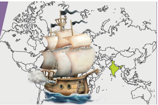
Many of the foreign travelers, traders, missionaries and civil servants who came to India in the 18th and 19th centuries have left accounts of their experiences and their impressions of various parts of the country. To know the events of modern period, we have abundant sources at the international, national, and regional level.
The sources for the history of modern India help us to know the political, socio-economic and cultural developments in the country. From the very beginning, the Portuguese, the Dutch, the French, the Danes, and the English recorded their official transactions in India on state papers. Well preserved records are very valuable to know about their relations in India. The archives at Lisbon, Goa, Pondicherry and Madras were literally store houses of precious historical information. All these sources must, however, be critically evaluated before they are used for historical writing.
We can write history with the help of sources like written sources and material sources.
Written Sources
After the advent of the printing press, numerous books were published in different languages. Hence, people began to acquire knowledge easily in the fields like art, literature, history and science. The Europeans came to know about the immense Wealth of India from the accounts of Marco Polo and similar sources. The wealth of India attracted Europeans to this country.
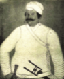
Ananda Rangam is a name to conjure with in the annals of Tamil history. He was a Dubash (Translator) in Pondicherry to assist French trade in India. He recorded the events that took place in French India. His diaries contain the daily events from 1736 to 1760, which are the only written secular record available during that period. His diaries reveal his profound capacity for political judgement and is a most valuable source of history. Written sources include Literatures, Travel Accounts, Diaries, Auto Biographies, Pamphlets, Government Documents and Manuscripts.
Archives
This is the place where historical documents are preserved. The National Archives of India (NAI) is located in New Delhi. It is the chief storehouse of the records of the government of India. It has main source of information for understanding past administrative machinery as well as a guide to the present and future generations related to all matters. It contains authentic evidence for knowing the political, social, economic, cultural and scientific life and activities of the people of India. It is one of the largest Archives in Asia.
Do you know?
George William Forrest can rightly be called as the "Father of National Archives of India".
Tamil Nadu Archives
The Madras Record Office, presently known as Tamil Nadu Archives (TNA) is located in Chennai. It is one of the oldest and largest document repositories in Southern India. Most of the records in the Tamil Nadu archives are in English. The collections include series of administrative records in Dutch, Danish, Persian and Marathi. Few documents are in French, Portuguese, Tamil and Urdu.
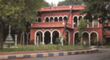
Tamil Nadu Archives has 1642 volumesof Dutch records which relate to Cochin and Coromandal coast. These records cover the period from 1657 – 1845. The Danian records cover the period from 1777 – 1845. Dodwell prepared with great effort and the first issue of the calendar of Madras records was published in 1917. He was highly interested in encouraging historical researches. He opened a new chapter in the History of Tamil Nadu Archives.
Material Sources.
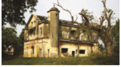
Many paintings and statues are the main sources of modern Indian history. They give us a lot of information and the achievement of national leaders and historical personalities. Historical buildings like St. Francis Church at Cochin, Saint Louis Fort at Pondicherry, Saint George Fort in Madras, Saint David Fort in Cuddalore, India Gate, Parliament House, President House in New Delhi, etc are different styles and techniques of Indian architecture. Other objects and materials of religious, cultural and historical value are collected and preserved in Museums. These museums help to preserve and promote our cultural heritage. The national museum in Delhi is the largest museum in India which was established in 1949.
Coins are a good source to know aboutb administrative history. The first coinage in modern India under the crown was issued in 1862. Edward VII ascended after Queen Victoria and the coins issued by him bore his model. The Reserve Bank of India was formally set up in 1935 and was empowered to issue Government of India notes. The first paper currency issued by RBI in January 1938 was 5-rupee notes bearing the portrait of King George six.
Do you know
In 1690, Fort St. David was built by the British in Cuddalore.
After the capture of Constantinople by the Turks in A.D. (C.E.) 1453, the land route between India and Europe was closed. The Turks penetrated into North Africa and the Balkan Peninsula. It became imperative on the part of the European nations to discover new sea routes to the East.
Box item
Audio-visual means possessing both a sound and a visual component, such as slide-tape presentations. Audio-visual service providers frequently offer web streaming, video conferencing and live broadcast services. Television, films, internet are called ‘Audiovisual media’.
Amongst the entire European nations Portugal was the foremost to make a dynamic attempt to discover a sea route to India. Prince Henry of Portugal, who is commonly known as the “Navigator”, encouraged his countrymen to take up the adventurous life of exploring the unknown regions of the world. Bartholomew Diaz, a Portuguese sailor reached the southern-most point of Africa in 1487. He was patronized by the King John wo.
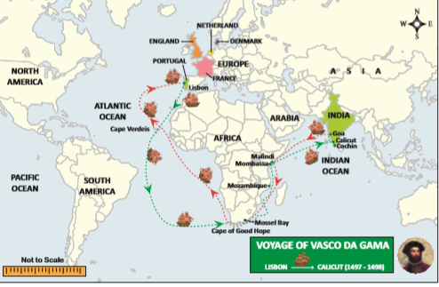
![This below India map shows Various European Trade Centres Spread Over India Including Portugese, French, Dutch, Danish and English Settlements. In India Map, Diu, Damen, Bassein, Goa, Cannanore, calicut, cochin are Highlighted as Portugese Settlements. Mahe, Karaikal, Pondicherry, Yanam, Balasore, Chandernagore are highlighted as French Settlements. Nagapattinam, Pulicat, Chinsura are highlighted as Dutch Settlements. Serampore is highlighted as Danish Settlements. Agra, Ahamedabad, Broach, Surat, Bombay, Madras, Calcutta, Hugli are Highlighted English Settlements.](images/image-6.png)
Vasco da Gama
Vasco da Gama, another Portuguese sailor reached the southern-most point of Africa and he continued his journey to Mozambique from where he sailed to India with the help of an Indian pilot
In A.D. (C.E.) 1498, he reached Calicut, where he was cordially received by King Zamorin, the ruler of Calicut. A second Portuguese navigator, Pedro Alvares Cabral, sailed towards India, following the route discovered by Vasco da Gama with 13 ships and a few hundred soldiers in 1500. On his arrival at Calicut, there arose conflicts between the Portuguese and king Zamorin.
Vasco da Gama came to India for the second time in 1501 with 20 ships and founded a trading centre at Cannanore. One after another, they established factories at Calicut and Cochin. King Zamorin attacked the Portuguese in Cochin but was defeated. Cochin was the first capital of the Portuguese East India Company. The third voyage of Vasco da Gama was in 1524. He soon fell ill, and in December 1524 he died in Cochin
Francisco de Almeida (fifteen not five to fifteen not nine)
In fifteen not five, Francisco de Almeida was sent as the first Governor for the Portuguese possessions in India. Almeida had the aim of developing the naval power of the Portuguese in India. His policy was known as the “Blue Water Policy”.
As Portuguese tried to break the Arab's monopoly on Indian Ocean trade, it negatively impacted on the trade interests of Egypt and Turkey. Sultans of Bijapur and Gujarat were also apprehensive of the expansion of Portuguese control of ports which led to an alliance between Egypt, Turkey and Gujarat against Portuguese invaders. In a naval battle fought near Chaul, the combined Muslim fleet won a victory over the Portuguese fleet under Almeida’s son who was killed in the battle. Almeida defeated the combined Muslim fleet in a naval battle near Diu, and by the year 1509, Portuguese claimed the naval supremacy in Asia.
Alfonso de Albuquerque (fifteen not nine to 1515)
The real founder of the Portuguese power in India was Alfonso de Albuquerque. He captured Goa from the Sultan of Bijapur in November 1510. In 1515, he established the Portuguese authority over Ormuz in Persian Gulf. He encouraged the marriages of the Portuguese with Indian women. He maintained friendly relations with Vijayanagar Empire.
Nino de Cunha (1529 - 1538)
Governor Nino de Cunha moved capital from Cochin to Goa in 1530. In 1534, he acquired Bassein from Bahadur Shah of Gujarat. In 1537, the Portuguese occupied Diu. Later, they wrested Daman from the local chiefs of Gujarat. In 1548, they occupied Salsette. Thus, during the 16th century, Portuguese succeeded in capturing Goa, Daman, Diu, Salsette, Bassein, Chaul and Bombay on the western coast, Hooghly on the Bengal coast and Santhome on the Madras coast and enjoyed good trade benefits. The Portuguese brought the cultivation of tobacco to India. Due to the influence of Portuguese Catholic religion spread in certain regions on India’s western and eastern coasts. The printing press was set up by the Portuguese at Goa in 1556. A scientific work on the Indian medicinal plants by a European writer was printed at Goa in 1563. In 17th century, the Portuguese power began to decline to the Dutch and by 1739 the Portuguese pockets became confined to Goa, Diu and Daman.
The Dutch followed the Portuguese into India. In 1602, the United East India company of Netherlands was formed, and it received the sanction of their government to trade in East India. After their arrival in India, the Dutch founded their first factory in Masulipatnam, (Andhra Pradesh) in sixteen not five. This company captured Amboyna from the Portuguese in sixteen not five and established its supremacy in the Spice Islands. They captured Nagapatnam near Madras from the Portuguese and made this place as their strong hold in South India. At first, Pulicat was their headquarters. Later, they shifted it to Nagapatnam in 1690.
The most important Indian commodities traded by the Dutch were silk, cotton, indigo, rice and opium. They monopolized the trade in black pepper and other spices. The important factories in India were Pulicat, Surat, Chinsura, Kasim bazar, Patna, Nagapatnam, Balasore and Cochin.
The English East India Company remained engaged in rivalry with the Portuguese and the Dutch throughout the 17th century. In 1623, the Dutch cruelly killed ten English traders and nine Javanese in Amboyna. This incident accelerated the rivalry between the two Europeans companies. Their final collapse came with their defeat by the English in the Battle of Bedera in 1759. The Dutch lost their settlements one by one to the English and was completely wiped out by the year of seventeen ninety five.
Dutch in Tamil Nadu
The Portuguese who established a control over Pulicat since 1502 were over thrown by the Dutch. In Pulicat, the Dutch built the fort Geldria in 1613. This fort was once the seat of Dutch power.
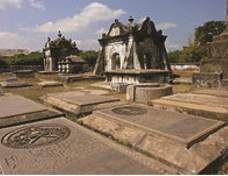
The Dutch established their settlement at Pulicat in 1610. Diamonds were exported from Pulicat to the western countries. The other Dutch colonial forts and possessions were Nagapattinam, Punnakayal, Porto Novo, Cuddalore and Devanampatinam.
On 31st December 1600, Elizabeth, the Queen of England granted a charter to the governor and company of Merchants of London to trade with East Indies. The Company was headed by a Governor and a court of 24 directors. Captain Hawkins visited Jahangir’s court in sixteen not eight to get certain concessions for the company. He secured permission to raise a settlement at Surat. However, the Emperor cancelled the permission under pressure from the Portuguese.
In 1612, the English Captain Thomas Best, inflicted a severe defeat over the Portuguese in a naval battle near Surat. The Mughal Emperor Jahangir permitted the English to establish their factory in 1613 at Surat, which initially became the headquarters of the English in western India. Captain Nicholas Downton won another decisive victory over the Portuguese in 1614. These events enhanced the British prestige at the Mughal court. In 1615, Sir Thomas Roe was sent to Jahangir’s court by King James I of England. He remained at Agra for three years and succeeded in concluding a commercial treaty with the emperor. Before the departure of Sir Thomas Roe, the English had established their trading centres at Surat, Agra, Ahmadabad and Broach.
On the coastline of the Bay of Bengal, the English established their first factory in 1611 at Masulipatam, an important port in the territory of the kingdom of Golconda. In 1639, the English merchant, Francis Day, obtained Madras as a lease from Chennappa Nayaka, the ruler of Chandragiri. The East India Company built its famous factory known as 'Fort St. George' in Madras, which became their headquarters for the whole of the eastern belt and first fort built by British.
King Charles two of England received the island of Bombay as a part of his dowry from the Portuguese King, on the occasion of his marriage with Catherine. In 1668, the East India Company acquired the island at an annual rent of £ (pounds) 10 from Charles two.
In 1690 a factory was established at Sutanuti by Job Charnock. The Zamindari of the three villages of Sutanuti, Kalikata and Govindpur was acquired by the British in 1698. These villages later grew into the city of Calcutta. The factory at Sutanuti was fortified in 1696 and this new fortified settlement was named as ‘Fort William’ in 1700.
After the Battle of Plassey in 1757 and the Battle of Buxar in 1764, the Company became a political power. India was under the East India Company’s rule till 1858 after it came under the direct administration of the British Crown.
On March 17, 1616 the King of Denmark, Christian IV, issued a charter and created a Danish East India company. They established settlement at Tranquebar (Tamilnadu) in 1620 and Serampore (Bengal) in 1676. Serampore was their headquarters in India. They failed to strengthen themselves in India and they sold all their settlement in India to the British in 1845.
Do you know?
Danish called Tranquebar as Danesborg. The king of Denmark sent Ziegenbalg to India. Ziegenbalg set up a printing press at Tranquebar (Tarangambadi).
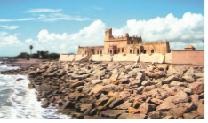
The French East India Company was formed in 1664 by Colbert, a Minister of King Louis XIV. In 1667, a French expedition came to India under Francois Caron. France was the last European country to come India as traders. Caron founded the first French factory in India at Surat. In1669, Marcara founded second French factory at Masulipatam by securing a patent from the Sultan of Golkonda.
In 1673, the settlement of Pondicherry was founded by Martin under a grant from Sher Khan Lodi, the ruler of Bijapur. Pondicherry became the most important and prosperous French settlement in India. A fort known as St. Louis was built by Francois Martin in Pondicherry. In 1673, the French obtained permission from Shaista Khan, the Mughal Subedar (governor) of Bengal to establish a township at Chandranagore, near Calcutta.
The French East India Company established factories in different parts of India, particularly in the coastal regions such Mahe, Karaikal, Balasore and Kasim Bazar. These were a few important trading Centers of the French East India Company.
The vision of the French power in India was further reinforced by the appointment of Joseph Francois Dupleix as the Governor of the French East India Company in 1742. He succeeded Dumas as the French governor of Pondicherry.
Do you know?
The Swedish
The Swedish East India Company was founded in Gothenburg, Sweden, in 1731 for the purpose of conducting trade with the Far East. The venture was inspired by the success of the Dutch East India Company and the British East India Company.
Since the Portuguese were eliminated by the Dutch and the later extinguished by the English, the French were left to face the English for control over trade and territory. The French neglected trade and entangled themselves in wars with Indian and other European powers. The three “Carnatic wars” ruined the French and rejuvenated the English to embark on a systematic territorial expansion. The comparative success of the British over the Portuguese, the Dutch, the Danish, and the French was largely due to their commercial competitiveness, spirit of supreme sacrifice, government support, naval superiority, national character and their ascendency in Europe.
Missionaries |
religious missions |
சமயப்பரப்பு குழுவினர் |
Pamphlets |
a small booklet |
பிரசுரங்கள் |
Archives |
the place where historical documents and records are kept |
ஆவணக்காப்பகம் |
Manuscripts |
handwritten books or documents |
கையெழுத்து பிரதிகள் |
Repository |
a person or thing regarded as a store of information |
களஞ்சி யம் |
Voyage |
a long journey especially by ship |
கடற்பயணம் |
Monopoly |
exclusive control or possession of something |
முற்றுரிமை |
Navigator |
in earlier times, a person who explored by ship
|
கடல்வழி வல்லுநர்/ மாலுமி |
1) |
The Dutch |
– one thousand six hundred and sixty four |
|
2) |
The British |
– one thousand six hundred and two |
|
3) |
The Danish |
– one thousand six hundred |
|
4) |
The French |
– one thousand six hundred and sixteen |
|
Find out the wrong pair
ICT corner
Advent of the Europeans
Through this activity you will visualize theSources of Indian History
Steps
• Open the Browser and type the URL given below (or) Scan the QR Code.
• Click on Timeline, go to left side menu and Select any one (Ex. Paintings)
• Drag the Time line bar to appropriate period (Ex.1500-1600 A.D)
Website URL: http://museumsofindia.gov.in/repository/home
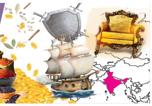
In the 15 th Century, Europe witnessed an era of geographical discoveries through land and sea routes. In 1498, Vasco Da Gama of Portugal discovered a new sea route from Europe to India. The main motive behind those discoveries was to maximize profit through trade and to establish political supremacy. The rule of East India Company in India became effective after the conquest of Bengal. The main interest of the company in India was territorial and commercial expansions.
Alivardi Khan, the Nawab of Bengal died in 1756 and his grandson Siraj-ud-daula ascended the throne of Bengal. The British taking advantage of the New Nawab’s weakness and unpopularity seized power. So, Siraj-ud-daulah decided to teach them (British) a lesson by attacking over their political settlement of Calcutta. The Nawab captured their factory at Kasimbazar. On 20th June 1756, Fort William surrendered but Robert Clive recovered Calcutta.
Box item
The Black Hole tragedy (1756)
There was a small dungeon room in the Fort William in Calcutta, where troops of the Nawab of Bengal Siraj-ud-daula, held 146 British Prisoners of war for one night. Next day morning, when the door was opened 123 of the prisoners found dead because of suffocation.
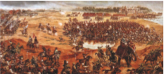
On 9 th February 1757, Treaty of Alinagar was signed, whereby Siraj-ud-daulah conceded practically all his claims. British then captured Chandranagore, the French settlement, on March 1757. The battle of Plassey took place between the British East India Company and the Nawab of Bengal and his French allies. It was fought on 23 June 1757. The English East India Company’s forces under Robert Clive defeated the forces of Siraj-ud-daulah. After the collapse of Bengal, the company gained a huge amount of wealth from the treasury of Bengal and used it to strengthen its military force. The beginning of the British political sway over India may be traced from the Battle of Plassey. It was the most decisive battle that marked the initiation of British rule in India for the next two centuries.
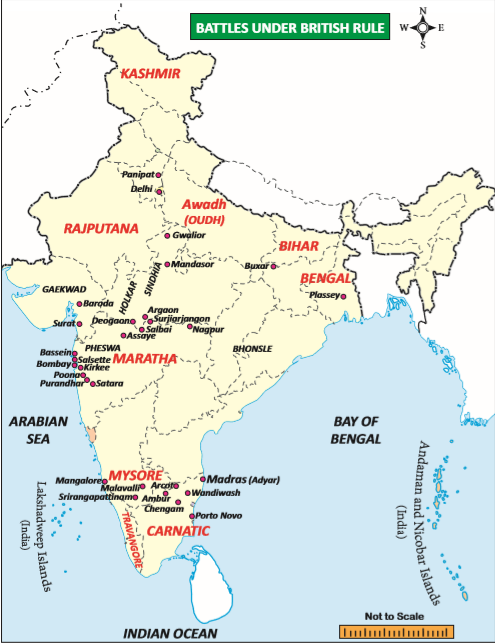
After the Battle of Plassey in 1757, the company was granted undisputed right to have free trade in Bengal, Bihar and Orissa. It received the place of 24 parganas in Bengal. Mir Jafar (seventeen fifty seven to seventeen sixty) the Nawab of Bengal however fell into arrears and was forced to abdicate in favor of his son in law, Mir Qasim.
Mir Qasim ceded Burdwan, Midnapore and Chittagong. He shifted his capital from Mursidabad to Monghyr. Mir Qasim soon revolted as he was angry with the British for misusing the destakes (free duty passes). However, having been defeated by the British, he fled to Awadh, where he formed a confederacy with Shuja-ud-daulah and Shah Alam.
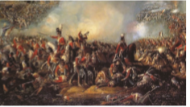
The Battle was fought on October 22, 1764 at Buxar, a “small fortified town” within the territory of Bihar, located on the banks of the Ganges river about 130 kilometers west of Patna. It was a decisive victory for the British East India Company. Shuja–ud-daulah, Shah Alam and Mir Qasim were defeated by General Hector Munro. Mir Jafar was again placed on the throne. On Mir Jafar’s death, his son Nizam-ud-daulah was placed on the throne and signed Allahabad Treaty on 20 th February 1765 by which the Nawab had to disband most of his army and to administer Bengal through a Deputy Subedar nominated by the company. Robert Clive concluded two separate treaties with Shuja-ud-daula and Shah Alam II. Dual System of government started in Bengal.
In the 18 th century, three Carnatic wars were fought between various Indian rulers, British and French East Indian Company on either side. Traditionally, Britain and France were rival countries in Europe. Their rivalry continued in India over trade and territories. It resulted in a series of military conflicts in the south known as the Carnatic wars which spanned from 1746 to 1763. These wars resulted in establishment of political supremacy of British East Indian Company.
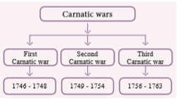
On the outbreak of the Austrian war of succession in Europe the English and the French were on opposite camps increased the hostility between these two forces. The echo of this war was felt in India.
Battle of Adayar (seventeen forty six)
The First Carnatic War is remembered for the battle of Santhome (Madras) fought between the French forces and the forces of Anwar-ud-din, the Nawab of Carnatic, who appealed the British for help. A small French army under Captain Paradise defeated the strong Indian army under Mahfuz Khan at Santhome on the banks of the River Adayar. This was the first occasion when the superiority of the well-trained and well-equipped European army over the Indian army was proved beyond doubt.
Treaty of Aix-la-Chapelle (seventeen forty eight)
The war was ended by the treaty of Aix-la-Chapelle which brought the Austrian War of Succession to an end. Under the terms of this treaty, Madras was returned back to the English, and the French, in turn, got their territories in North America.
The main cause of this war was the issue of succession in Carnatic and Hyderabad. Anwaruddin Khan and Chanda Sahib were the two claimants to the throne of Carnatic, whereas Nasir Jang and Muzaffar Jang were claimants to the throne of Hyderabad. The French supported Chanda sahib and Muzaffar Jang, while the British supported the other claimants with the objective of keeping their interest and influence in the entire Deccan region.
Battle of Ambur (seventeen forty nine)
Finally Dupleix, Chanda Sahib and Muzaffar Jang formed a grand alliance and defeated and killed Anwar-ud-din Khan, the Nawab of Carnatic, on 3 August 1749 in the Battle of Ambur. Muhammad Ali, the son of Anwar-ud-din, fled to Trichinopoly (Trichirappalli). Chanda Sahib became the Nawab of Carnatic and rewarded the French with the grant of 80 villages around Pondicherry.
In the Deccan, too, the French defeated and killed Nasir Jang and made Muzaffar Jang as the Nizam. The new Nizam gave ample rewards to the French. He appointed Dupleix as the governor of all the territories in south of the river Krishna. Muzaffar Jang was assassinated by his own people in 1751. Salabat Jang, brother of Nasir Jang was raised to the throne by Bussy. Salabat Jang granted the Northern Circars excluding the Guntur District to the French. Dupleix’s power was at its zenith by that time.
Battle of Arcot (seventeen fifty one)
In the meantime, Dupleix sent forces to besiege the fort of Trichy where Muhammad Ali had taken shelter. Chanda Sahib also joined with the French in their efforts to besiege Trichy. Robert Clive’s proposal was accepted by the British governor, Saunders, and with only 200 English and 300 Indian soldiers, Clive was entrusted the task of capturing Arcot. His attack proved successful.
Robert Clive defeated the French at Arni and Kaveripak. With the assistance of Major General Stringer Lawrence, Chanda Sahib was killed in Trichy. Muhammad Ali was made the Nawab of Arcot under British protection. The French Government recalled Dupleix to Paris.
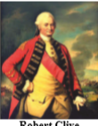
Treaty of Pondicherry (seventeen fifty five)
Dupleix was succeeded by Godeheu who agreed the treaty of Pondicherry. According to it, both the powers agreed not to interfere in the internal affairs of the native states. They were to retain their old positions. New forts should not be built by either power. The treaty made the British stronger.
The second Carnatic war also proved inconclusive. The English proved their superiority on land by appointing Mohammad Ali as the Nawab of Carnatic. The French were still very powerful in Hyderabad. However, the predominant position of the French in the Deccan peninsula was definitely undermined in this war.
The outbreak of the Seven Years’ War in Europe led to the third Carnatic war in India. By this time, Robert Clive established the British power in Bengal by the Battle of Plassey which provided them with the necessary finance for the third Carnatic war.
Count de Lally was deputed from France to conduct the war from the French side. He easily captured Fort St. David. He ordered Bussy to come down to the Carnatic with his army, to make a united effort to push the British out of the Carnatic. Taking advantage of Bussy’s departure, Robert Clive sent Colonel Forde from Bengal to occupy the Northern Circars (parts of Andhra Pradesh and Odhisha).
Battle of Wandiwash (seventeen sixty)
The decisive battle of the third Carnatic war was fought on January 22, 1760. The English army under General Eyre Coote totally routed the French army under Lally. Within a year the French had lost all their possessions in India. Lally returned to France where he was imprisoned and executed.
The Seven Years’ War was concluded by the treaty of Paris. The French settlements including Pondicherry were given back to the French. But they were forbidden from fortifying those places. They were not allowed to gather armies. The French dominance in India practically came to an end.
The state of Mysore rose to prominence in the politics of South India under the leadership of Haider Ali (seventeen sixty – eifhty two). He and his son Tipu Sultan (seventeen eighty two – ninety nine) played a prominent role against the expansion of British Empire in India. Both of them faced the English with undoubted courage. In 1761, he became the de facto ruler of Mysore. He also proved to be the most formidable enemy of the English in India.
Causes
Haider Ali’s growing power and his friendly relations with the French became a matter of concern for the English East India Company.
The Marathas, the Nizam and the English entered into a triple alliance against Haider Ali.
Course
The Nizam, with the help of British troops under General Joseph Smith, invaded Mysore in 1767. Haider Ali defeated English and captured Mangalore. In March 1769, he attacked Madras and forced the English to sign a treaty on 4 April 1769.
At the end of the war, the Treaty of Madras was signed between Haider Ali and British East India Company. Both the parties returned the conquered territories and promised to help each other in case of any foreign attack on them.
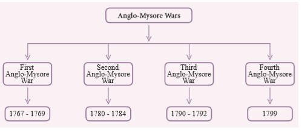
Causes
The English did not fulfill the terms of the treaty of seventeen sixty nine, when Haider’s territories were attacked in 1771 by Marathas, Haider did not get help from the British.
British captured Mahe, a French settlement within Haider’s Jurisdiction. It led to the formation of an alliance by Haider with the Nizam and Marathas against the English in 1779.
Course
In 1781, the British General Sir Eyre Coote defeated Haider Ali at Porto Novo. The Mysore forces suffered another defeat at Solinger. Haider Ali died of cancer during the course of the war. After the death of Haider Ali in 1782, his son Tipu Sultan, continued the war against the English.
Tipu captured Brigadier Mathews, the supreme commander of the British forces along with his soldiers in 1783. It was a serious loss to Tipu.
On 7 th March 1784 the treaty of Mangalore was signed between the two parties. Both agreed to return the conquered territories and also the prisoners of war.
Thus, Warren Hastings saved the newly established British dominion from the wrath of powerful enemies like Marathas and Haider Ali. When the British lost their colonies in America and elsewhere, Warren Hastings lost nothing in India. Instead, he consolidated the British power in India.
Causes
Tipu was trying to seek alliance of foreign powers against the English and for that purpose he had sent his ambassadors to France and Turkey.
Tipu attacked on Travancore in 1789 whose ruler was an ally of the British.
The English, the Nizam and the Marathas entered into a “Triple Alliance” against Mysore.
Course
Tipu fought alone which continued for two years. It was fought in three phases. The attack of the English under General Medows failed. Therefore, in December 1790, Cornwallis himself took the command of the army. Cornwallis captured all the hillforts which obstructed his advance towards Srirangapatam and reached near its outer wall. Tipu felt desperate and opened negotiations with the English. Cornwallis agreed and the treaty of Srirangapatnam was concluded in 1792.
Tipu surrendered half of his kingdom to the allies.
Tipu agreed to pay 3.6 crore of rupees to the English as war indemnity and surrendered two of his sons as hostages to the English.
The English acquired Malabar, Coorg, Dindigul and Baramahal (Coimbatore and Salem).
Tipu Sultan did not forget the humiliating treaty of Srirangapatnam imposed upon him by Cornwallis in seventeen ninety two.
Causes
Tipu sought alliance with foreign powers against the English and sent ambassadors to Arabia, Turkey, Afghanistan and the French.
Tipu was in correspondence with Napoleon who invaded Egypt at that time.
The French officers came to Srirangapatnam where they founded a Jacobin Club and planted the Tree of Liberty.
Course
Wellesley declared war against Tipu in 1799. The war was short and decisive. As planned, the Bombay army under General Stuart invaded Mysore from the west. The Madras army, which was led by the Governor- General’s brother, Arthur Wellesley, forced Tipu to retreat to his capital Srirangapatnam. On 4th May 1799 Srirangapatnam was captured. Tipu fought bravely and was killed finally. Thus ended the fourth Mysore War and the whole of Mysore lay prostrate before the British.
The English occupied Kanara, Wynad, Coimbatore, Darapuram and Srirangapattinam.
Krishna Raja Odayar of the former Hindu royal family was brought to the throne.
Tipu’s family was sent to the fort of Vellore.
The Marathas managed to overcome the crisis caused by their defeat at Panipat and after a decade recovered their control over Delhi. However the old Maratha Confederacy controlled by the Peshwa had given way to five virtually independent states. Peshwa at Pune, Gaikwads at Baroda, Bhonsle at Nagpur, Holkars at Indore, and Scindias at Gwalior. The Peshwa’s government was weakened by internal rivalries, and the other four leaders were often hostile to one another. Despite this, the Marathas were still a formidable power. The internal conflict among the Marathas was best utilized by the British in their expansionist policy.
Causes
In the case of the Marathas, the first British intervention was at the time of dispute over succession to the Peshwaship following the death of Narayan Rao. After the death of Narayan Rao, Raghunath Rao (Raghoba) became the Peshwa, but his authority was challenged by a strong party at Poona under Nana Phadnavis. The party recognised the infant born posthumously to Narayan Rao’s wife, Ganga Bai, as the Peshwa and set up a council of regency in his name. Having failed in his bid to capture power, Raghunath Rao approached the British for help. The Treaty of Surat between the English and Raghunath Rao was concluded in 1775. However, the majority of the Supreme British Council in Calcutta was opposed to the Surat treaty, although Warren Hastings himself had no objection to ratifying the treaty. The council sent Colonel Upton to Poona to negotiate a peace with the Poona regency. Accordingly, Upton concluded the Treaty of Purandhar in 1776. The treaty, however, did not take effect due to opposition from the English government in Bombay.
Course
In 1781, Warren Hastings dispatched British troops under Captain Popham. He defeated the Maratha chief, Mahadaji Scindia, in a number of small battles and captured Gwalior. Later on 17 th May 1782, the Treaty of Salbai was signed between Warren Hastings and Mahadaji Scindia.
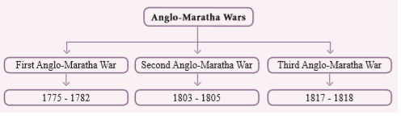
Results
Raghunath Rao was pensioned off and Madhav Rao II was accepted as the Peshwa.
Salsette was given to the British.
The Treaty of Salbai established the British influence in Indian politics. It provided the British twenty years of peace with the Marathas.
The internal affairs of the Marathas deteriorated further after the close of the first Maratha War. Nana Fadnavis grew fond of power, jealous of Mahadaji Scindia and became progressively inclined to seek the support of the English. The young Peshwa, Madhava Rao II, tried to improve the affairs but could not check the rivalry of the Maratha chiefs. Mahadaji Scindia died in 1794 and was succeeded by his grand nephew Daulat Rao Scindia. His death left Nana Fadnavis supreme at Poona and the English to expand their influence in north India. Peshwa Madhav Rao 2 committed suicide in 1795, and Baji Rao 2, worthless son of Raghunath Rao, became the Peshwa. The death of Nana Phadnavis in 1800 gave the British an added advantage.
Jaswant Rao Holkar and Daulat Rao Scindia were fighting against each other. The Peshwa supported Scindia against Holkar. The Peshwa and the Scindia agreed to help each other. Holkar marched against the Peshwa. The combined forces of Scindia and the Peshwa were utterly defeated in eighteen not two and captured the city. Baji Rao 2 approached Lord Wellesley, the then Governor-General of India, for help. Lord Wellesley welcomed the Peshwa and made him sign the Treaty of Bassein, in other words, the Treaty of Subsidiary Alliance, accepting the status of a British subsidiary in 1802. As an immediate to the Treaty of Bassein, the British troops marched under the command of Arthur Wellesely towards Poona and restored the Peshwa to his position. The forces of Holkar vanished from the Maratha capital.
Causes
After accepted the subsidiary alliance by the Peshwa, Daulat Rao Scindia and Raghoji Bhonsle attempted to save Maratha's independence. But the well prepared and organised army of the English under Arthur Wellesely defeated the combined armies of Scindia and Bhonsle at Assaye and Argaon.
Course
The English forced them to conclude separate subsidiary treaties namely the Treaty of Deogaon and the Treaty of Surji-Arjungaon respectively in 1803. But, Yashwant Rao Holkar (also called as Jaswant Rao Holkar) was yet undefeated. He had not participated in the war so far. Holkar plundered the territory of Jaipur and, in 1804, the English declared war against him. Yashwant Rao Holkar tried to form a coalition of Indian rulers to fight against the British. But his attempt proved unsuccessful. The Marathas were defeated, reduced to British vassalage and islolated from one another.
Results
The Maratha power was gradually weakened.
The English East India Company started becoming the paramount power in India.
Causes
The Third Anglo-Maratha War was the final and decisive conflict between the British East India Company and the Maratha Empire in India. It began with an invasion of the Maratha territory by British East India Company troops. The troops were led by the Governor General Hastings and he was supported by a force under General Thomas Hislop.
Course
The Peshwa Baji Rao 2's forces, followed by those of Mudhoji 2 Bhonsle of Nagpur andMalhar Rao Holkar III of Indore, rose against the British. Daulat Rao Scindia of Gwalior remained neutral. The Peshwa was defeated in the battles of Khadki and Koregaon and several minor battles were fought by the Peshwa's forces to prevent his capture. Bhonsle was defeated in the battle of Sitabaldi and Holkar in the battle of Mahidpur.
Results
The Maratha confederacy was dissolved and Peshwaship was abolished.
Most of the territory of Peshwa Baji Rao II was annexed and became part of the Bombay Presidency.
The defeat of the Bhonsle and Holkar also resulted in the acquisition of the Maratha kingdoms of Nagpur and Indore by the British.
The Baji Rao II, the last Peshwa of Maratha was given an annual pension of 8 lakh rupees.
The British Indian administration was run by four principal institutions – Civil Services, Army, Police and Judiciary.
The term ‘civil service’ was used for the first time by the East India Company to distinguish its civilian employees from their military counterparts. Translating law into action and collecting revenue were the main jobs of the civil service. The civil service was initially commercial in nature but later it was transformed into a public service. In the beginning, the appointment to these services was the sole prerogative of the Court of Directors of the Company. But the nominated civil servants indulged in corruption, bribery and illegal private trade. So, Cornwallis who came to India as Governor-General in 1786, enforced the rules against private trade. He also raised the salary of the Company’s servants who became the highest paid civil servants in the world.
Lord Wellesley, who came to India as Governor-General in 1798, introduced the idea of suitable training for the civil servants in India. In 1800, he established the College in Fort William at Calcutta to provide training in literature, science and languages. However, the directors of the Company disapproved of his action and replaced it by their own East India College, established at Haileybury in England in 1806.
The idea of competition for recruitment was introduced first by the Charter Act, eighteen thirty three. But the system of competition was these not nominated by the Court of Directors were not eligible to write the competitive examination. Hence, the system was called as nominationcum- competition system. The system of recruitment on the basis of open competitive examination was introduced in 1853. This system was confirmed by the Government of India Act of eighteen fifty eight. The maximum age for competitors was fixed at 23. Subsequently, East India College at Haileybury was abolished in 1858, and recruitment to civil services became the responsibility of the civil service commission. By the Regulation of eighteen sixty the maximum age was lowered to 22, in 1866 to 21 and in 1876 to 19.
The Indian Civil Service Act of eighteen sixty one passed by the British Parliament exclusively reserved certain categories of high executive and judicial posts for the covenanted civil service which was later designated as the Indian Civil Service. Due to the lowering of age limit and holding of examination in London it could be possible only for a very few wealthy Indians to appear at the I.C.S. examination. In 1869, three Indians - Surendra Nath Banerje, Ramesh Chandra Dutt and Bihari Lal Gupta became successful in the I.C.S. examination.
Do you know?
Satyendranath Tagore, the elder brother of poet Rabindranath Tagore, was the first Indian to pass the I.C.S. Examination in 1863.
Later on, the Indians demanded to increase the age limit and to establish centre for examination in India instead of England. In 1892, the minimum age limit for appearing for the Civil Service Examination was raised to 21 and the maximum to 23. In 1912, a Royal Commission on Public Service was appointed. Chaired by Lord Islington, this commission had two Indian members - G.K. Gokhale and Sir Abdur Rahim - besides four Englishmen. The Commission published its report in 1917. Islington commission’s recommendations partly fulfilled the demand for the Indianisation of Civil Service.
In 1918, Montague and Lord Chelmsford recommended that 33% Indian should be recruited in Indian Civil Services and gradually the number should be increased. In 1923, a Royal Commission on Public Services was appointed with Lord Lee of Fareham as chairman. This commission recommended that recruitment to all-Indian services like the Indian Civil Service, the Indian Police Service and the Indian Forest Service should be made and controlled by the Secretary of State for India. The Lee Commission recommended the immediate establishment of a Public Service Commission.
The Act of 1935 also made provisions for the establishment of a Federal Public Service Commission at the Centre and the Provincial Public Service Commissions in the various provinces. Provision was also made for a Joint Public Service Commission in two or more Provinces. Although, the main aim of this measure was to serve the British interests, it became the base of the civil service system in independent India.
The army was the second important pillar of the British administration in India. The East India Company started recruiting its own army, which came to be known as the sepoy (from sipahi or soldier) army. That sepoy army was trained and disciplined according to European military standards and was commanded by European officers in the battlefield. During the early stage of British rule, three separate armies had been organized in three Presidencies of Bengal, Bombay and Madras. Army had a great contribution in the establishment and expansion of British rule in India. Indian soldiers were given less salaries and allowances than English soldiers. In 1857, the Indians constituted about 86 percent of the total strength of the Company’s army. However, the officers of the army were exclusively British. For example, in 1856, only three Indians in the army received a salary of 300 rupees per month. The highest rank an Indian could ever reach was that of a subedar.
Box item
Strength of British Army
When the East India Company took over the diwani in 1765, the Mughal police system was under the control of faujdars, who were in charge of their ‘sarkars’ or rural districts. The kotwals were in charge of towns, while the village watchmen were paid and controlled by the Zamindars.
The police system was created by Lord Cornwallis. He relieved the Zamindars from police functions and established a regular police force in 1791. Cornwallis established a system of circles or ‘thanas’ each headed by a ‘daroga’. The authority of the daroga extended to village watchmen who performed the police duties in the villages. The hereditary village police became ‘chowkidars’. In the big cities, the old office of kotwal was, however, continued, and a daroga was appointed to each of the wards of a city. The daroga system was extended to Madras in eighteen not two.
Before the post of district superintendent of police was created, all the thanas were under the general supervision of the district judge. In eighteen not eight, a Superintendent of Police was appointed for each division. Later, the district collector was entrusted with the task of controlling the police force in the districts. The main task of the police was to handle crime and to prevent conspiracy against the British rule.
In 1772, the Dual Government was abolished and the Company took over the direct responsibility for the collection of revenue as well as the administration of justice. Consequently a Diwani Adalat and Faujdari Adalat were established. By the Regulating Act of seventeen seventy three, a Supreme Court was set up in Calcutta. This court consisted of a chief justice and three puisne judges who were appointed by the Crown. This court decided civil, criminal, ecclesiastical and admiralty cases. On the model of the Supreme Court of Calcutta, a Supreme Court was established in Madras in 1801 and in Bombay in 1823. In 1832, William Bentinck started jury system in Bengal. A Indian Law Commission was established to compile the laws. A rule of law was established for the whole empire. According to the Indian High Courts Act, 1861, three High Courts were set up in Calcutta, Bombay and Madras in place of the old Supreme Courts.
Do you know?
Sir Elijah Impey was the first Chief Justice of the Supreme Court at Fort William in Bengal. Sir Thiruvarur Muthusamy was the first Indian Chief Justice of the Madras High Court.
Lord Wellesley introduced the system of Subsidiary Alliance to bring the princely states under the control of the British. It was the most effective instrument for the expansion of the British territory and political influence in India. The princely state was called ‘the protected state’ and the British came to be referred as ‘the paramount power’. It was the duty of the British to safeguard the state from external aggression and to help its ruler in maintaining internal peace.
The Subsidiary Alliances made the Indian rulers weak, oppressive and irresponsible. Protected by British arms, they neglected their duty towards their subjects and even exploited them.
Box item
The first Indian state to accept the Subsidiary Alliance was Hyderabad (seventeen ninty eight). It was followed by Tanjore (seventeen ninty nine), Awadh (eighteen not one), Peshwa (eighteen not two), Bhonsle (eighteen not three), Gwalior (eighteen not four), Indore (eighteen seventeen), Jaipur, Udaipur and Jodhpur (eighteen eighteen).
Lord Dalhousie was one of the chief architects of the British Empire in India. He was an imperialist. He adopted a new policy known as Doctrine of Lapse to extend British Empire. He made use of this precedent and declared in 1848 that if the native rulers adopted children without the prior permission of the Company, only the personal properties of the rulers would go to the adopted sons and the kingdoms would go to the British paramount power. This principle was called the Doctrine of Lapse. It was bitterly opposed by the Indians and it was one of the root causes for the great revolt of eighteen fifety seven.
Box item
By applying the Doctrine of Lapse policy, Dalhousie annexed Satara in 1848, Jaipur and Sambalpur in1849, Baghat in 1850, Udaipur in 1852, Jhansi in 1853 and Nagpur in 1854.
The Battle of Plassey was the foundation of British dominion in India. The company’s administration was not for the interests of people. It was imperialistic, expansionist and exploitative. It brought more Indian territories under British domain through subsidiary Alliance and Doctrine of Lapse. This policy led to a South Indian rebellion (1800-01), Vellore Rebellion (eighteen not six) and the Great Rebellion (eighteen fifety seven).
Confederacy |
a league or alliance |
கூட்டமைப்பு |
Ecclesiastical |
relating to the Christian Church or its clergy |
திருச்சபை தொடர்பான |
Entrust |
assign the responsibility |
ஒப்படைப்பு |
Hostility |
Opposition |
எதிர்ப்பு |
Negotiation |
discussion aimed at reaching an agreement |
பேச்சுவார்த்தை |
Paramount |
Supreme |
தலையாய |
Predominant |
the most powerful |
மிகுந்த வலிமை |
1. |
Treaty of Aix-La-Chapelle |
The First Anglo Mysore War |
2. |
Treaty of Salbai |
The First Carnatic War |
3. |
Treaty of Paris |
The Third Carnatic War |
4. |
Treaty ofSrirangapatnam |
The First MarathaWar |
5. |
Treaty of Madras |
The Third Anglo Mysore War |
ICT CORNER
From Trade to Territory
Through this activity you will know about the maps of India (Colonial Period)
Steps
• Open the Browser and type the URL given below (or) Scan the QR Code.
• Scroll down, click any period (ex. COLONIAL MAPS)
• Click the topicsone by one and explore the maps (ex. Historical maps, c.1750 to 1800)
Website URL:
http://ektara.org/magazine/histmaps.html
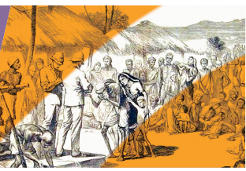
In the pre-colonial period, Indian economy was predominantly an agrarian economy. Agriculture was then the primary occupation of the people and even industries like textiles, sugar, oil, etc. were dependent on it. The British Government in India did not adopt a pro-Indian agriculture and land revenue policy. British Government introduced three major land revenue and tenurial systems in India, namely, the Permanent Settlement, the Mahal Wari system and the Ryotwari system. The economic exploitation of the peasants let to the revolt in future.
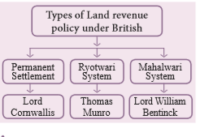
When Robert Clive obtained the Diwani of Bengal, Bihar and Orissa in 1765, there used to be an annual settlement (of land revenue). Warren Hastings changed it from annual to quinquennial (five-yearly) and back to annual again. During the time of Cornwallis, a ten years’ (decennial) settlement was introduced in 1793 and it was known Permanent Settlement.
Permanent settlement was made in Bengal, Bihar, Orissa, Varanasi division of U.P., and Northern Karnataka, which roughly covered 19 percent of the total area of British India. It was known by different names like Zamindari, Jagirdari, Malguzari and Biswedari.
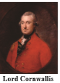
Ryotwari system was introduced by Thomas Munro and Captain Read in 1820. Major areas of introduction of Ryotwari system included Madras, Bombay, parts of Assam, and Coorg provinces of British India. By Ryotwari system the rights of ownership were handed over to the peasants. British government collected taxes directly from the peasants. Initially, one half of the estimated produce was fixed as rent. This assessment was reduced to one-third of the produce by Thomas Munro. The revenue was based on the basis of the soil and the nature of the crop.
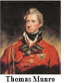
Rents would be periodically revised, generally after 20 to 30 years. The position of the cultivators became more secure. In this system the settlement was made between the Government and the Ryots. Infact, the Government later claimed that the land revenue was rent and not a tax.
Mahalwari system, a brain child of Holt Mackenzie was modified version of the Zamindari settlement introduced in the Ganga valley, the North-West Province, parts of the Central India and Punjab in 1822. Lord William Bentinck was to suggest radical changes in the Mahalwari system by the guidance of Robert Martins Bird in 1833. Assessment of revenue was to be made on the basis of the produce of a Mahal or village. All the proprietors of a Mahal were severally and jointly responsible for the payment of revenue. Initially the state share was fixed two-thirds of the gross produce. Bentinck, therefore, reduced to fifty percent. The village as a whole, through its headman or Lambardar, was required to pay the revenue. This system was first adopted in Agra and Awadh, and later extended to other parts of the United Provinces. The burden of all this heavy taxation finally fell on the cultivators.
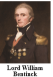
The British rule in India brought about many changes in the agrarian system in the country. The old agrarian system collapsed and under the new system, the ownership of land was conferred on the Zamindars. They tried to extract as much as they could from the cultivators of land. The life of the peasants was extremely miserable. The various peasant movements and uprisings during the 19th and 20th centuries were in the nature of a protest against of the existing conditions under which their exploitation knew no limits.
The first revolt which can be regarded as peasants’ revolt was the Santhal Rebellion in Eighteen fifty five to fifty six. The land near the hills of Rajmahal in Bihar was cultivated by the Santhals. The landlords and money-lenders from the cities took advantage of their ignorance and began grabbing their lands. This created bitter resentment among them leading to their armed uprising in 1855. Consequently, under the belief of a divine order, around 10,000 Santals gathered under two Santhal brothers, Siddhu and Kanhu, to free their country of the foreign oppressors and set up a government of their own. The rebellion assumed a formidable shape within a month. The houses of the European planters, British officers, railway engineers, zamindars and money-lenders were attacked. The rebellion continued till February 1856, when the rebel leaders were captured and the movement was put down with a heavy hand. The government declared the Parganas inhabited by them as Santhal Parganas so that their lands and identity could be safeguarded from external encroachments.
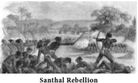
The Bengal indigo cultivators strike was the most militant and widespread peasant uprisings. The European indigo planters compelled the tenant farmers to grow indigo at terms highly disadvantageous to the farmers. The tenant farmer was forced to sell it cheap to the planter and accepted advances from the planter that benefitted the latter. There were also cases of kidnapping, looting, flogging and burning. Led by Digambar Biswas and Bishnu Charan Biswas, the ryots of Nadia district gave up indigo cultivation in September 1859. Factories were burnt down and the revolt spread. To take control of the situation, the Government set up an indigo commission in 1860 whose recommendations formed part of the Act VI of eighteen sixty two. The indigo planters of Bengal, however, moved on to settle in Bihar and Uttar Pradesh. The newspaper, Hindu Patriot brought to light the misery of the cultivators several times. Dinabandhu Mitra wrote a drama, Nil-Darpan, in Bengali with a view to draw the attention of the people and the government towards the misery of the indigo-cultivators.
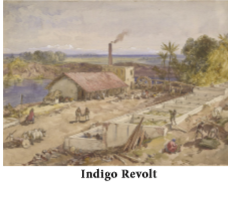
Pabna Peasant Uprising was a resistance movement by the peasants against the oppression of the Zamindars. It originated in the Yusufshahi pargana of Pabna in Bengal.It was led by Keshab Chandra Roy. The zamindars routinely collected money from the peasants by the illegal means of forced levy, abwabs, enhanced rent and so on. Peasants were often evicted from land on the pretext of non-payment of rent.
Large crowds of peasants gathered and marched through villages frightening the zamindars and appealing to other peasants to join with them. Funds were raised from the ryots to meet the costs. The struggle gradually spread throughout Pabna and then to the other districts of East Bengal. Everywhere agrarian leagues were organized. The main form of struggle was that of legal resistance. There was very little violence. It occurred only when the zamindars tried to compel the riots to submit to their terms by force. There were only a few cases of looting of the houses of the zamindars. A few attacks on police stations took place and the peasants also resisted attempts to execute court decrees. Hardly zamindars or zamindar’s agent were killed or seriously injured. In the course of the movement, the riots developed a strong awareness of the law and their legal rights and the ability to combine and form associations for peaceful agitation.
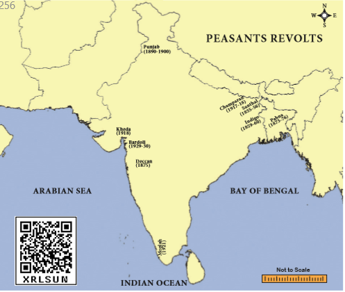
In 1875, the peasants revolted in the district of Poona, that event has been called the ‘Deccan Riots’. The peasants revolted primarily against the oppression of local moneylenders who were grabbing their lands systematically. The uprising started from a village in Poona district when the village people forced out a local moneylender from the village and captured his property. Gradually, the uprising spread over 33 villages and the peasants looted the property of Marwari Sahukars. The uprising turned into violent when the Sahukars took help of the police. It was suppressed only when the army was called to control it. However, it resulted in passing of the Deccan Agriculturists Relief Act’ which removed some of the most serious grievances of the peasants.
The peasants of the Punjab agitated to prevent the rapid alienation of their lands to the urban moneylenders for failure to pay debts. The British India did not want any revolt in that province which provided a large number of soldiers to the British army in India. In order to protect the peasants of the Punjab, the Punjab Land Alienation Act was passed in 1900 “as an experimental measure” to be extended to the rest of India if it worked successfully in the Punjab. The Act divided the population of the Punjab into three categories viz., the agricultural classes, the statutory agriculturist class and the rest of the population including the moneylenders. Restrictions were imposed on the sale and mortgage of the land from the first category to the other two categories.
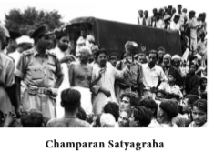
The European planters of Champaran in Bihar resorted to illegal and inhuman methods of indigo cultivation at a cost which was wholly unjust. Under the Tinkathia system in Champaran, the peasants were bound by law to grow indigo on 3 by 20 part of their land and send the same to the British planters at prices fixed by them. They were liable to unlawful extortion and oppression by the planters. Mahatma Gandhi took up their cause. The Government appointed an enquiry commission of which Mahatma Gandhi was a member. The grievances of the peasants were enquired and ultimately the Champaran Agrarian Act was passed in May 1918.
In the Kheda District of Gujarat, due to constant famines, agriculture failed in 1918, but the officers insisted on collection of full land revenue. The local peasants, therefore, started a ‘no-tax’ movement in Kheda district in 1918. Gandhi accepted the leadership of this movement.
Gandhiji organised the peasants to offer Satyagraha and opposed official insistence on full collection of oppressive land revenue despite the conditions of famine. He inspired the peasants to be fearless and face all consequences. The response to his call was unprecedented and the government had to bow to a settlement with the peasants. Sardar Vallabhbhai Patel emerged as an important leader of the Indian freedom struggle during this period.
The Muslim Moplah (or Moplah) peasants of Malabar (Kerala) was suppressed and exploited by the Hindu zamindars (Jenmis) and British government. This was the main cause of this revolt.
The Moplah peasants got momentum from the Malabar District Conference, held in April 1920. This conference supported the tenants’ cause and demanded legislations for regulating landlord-tenant relations. In August 1921, the Moplah tenants rebelled against the oppressive zamindars. In the initial phase of the rebellion, the Moplah peasants attacked the police stations, public offices, communications and houses of oppressive landlords and moneylenders. By December 1921, the government ruthlessly suppressed the Moplah rebellion. According to an official estimate, as a result of government intervention, 2337 Moplah rebels were killed, 1650 wounded and more than 45,000 captured as prisoners.
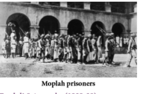
In 1928, the peasants of Bardoli (Gujarat) started their agitation under the leadership of Sardar Vallabhbhai Patel, in protest against the government’s proposal to increase land revenue by 30 percent. The peasants refused to pay tax at the enhanced rate and started no-tax campaign from 12 February 1928. Many women also participated in this campaign.
In 1930, the peasants of Bardoli rose to a man, refused to pay taxes, faced the auction sales and the eventual loss of almost all of their lands but refused to submit to the Government. However, all their lands were returned to them when the Congress came to power in 1937.
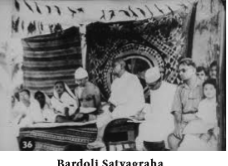
The British Government in India did not adopt a pro-Indian agriculture and land revenue policy.
Lord Cornwallis introduced Permanent Settlement in 1793.
Ryotwari system was introduced by Thomas Munro and Captain Read in 1820.
Mahalwari system was a brain child of Holt Mackenzie.
The land near the hills of Rajmahal in Bihar was cultivated by the Santhals.
Dinabandhu Mitra wrote a drama, Nil- Darpan, in Bengali.
In 1875, the peasants revolted in the district of Poona, that event has been called the ‘Deccan Riots’.
The Punjab Land Alienation Act was passed in 1900.
In August 1921, the Moplah tenants rebelled against the oppressive Zamindars.
The peasants of Bardoli (Gujarat) started their agitation under the leadership of Sardar Vallabhbhai Patel.
Apparatus |
new system |
புதிய அமைப்பு |
Claimants |
a person making a claim |
உரிமை கோருபவர் |
Cultivator |
a person who cultivates the land |
விவசாயி |
Encroachment |
intrusion on |
ஆக்கரமிப்பு |
Moneylender |
a person who lends money to people, at a high rate of interest |
கடன் தருபவர் |
Predominantly |
mainly |
முக்கி யமாக |
Tenants |
a person who occupies land rented from a land lord |
குத்தகை யாளர்/ குடியிருப்ப வர் |
1 |
Permanent |
Settlement Madras |
2 |
Mahalwari Settlement |
Misery of the Indigo cultivators |
3 |
Ryotwari System |
North west province |
4 |
Nil Darban |
Bengal |
5 |
Santhal Rebellion |
First Peasant revolt |
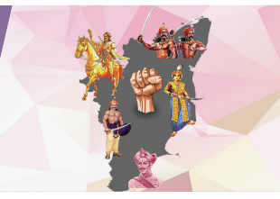
The establishment of political and economic dominance by the British over many parts of India after the Battle of Plassey, Seventeen fifety seven disrupted the political, social and economic order of the country. This led to the divesting many landlords and chieft ains of their power and estates. Naturally, many of them revolted against the British. The English assumed the right of collecting the annual tribute from the Palayakkarar. The first resistance to the British was off ered by the Puli Thevar. Since then there had been rebellions by Palayakkarar such as the Veerapandiya Kattabomman, Oomathurai, Marudu brothers and Dheeran Chinnamalai.
The Vijayanagar rulers appointed Nayaks in their provinces. The Nayak of Madurai in turn appointed Palayakkarar. Viswanatha became the Nayak of Madurai in 1529. He noticed that he could not control the chieft ain who wanted more powers in their provinces. So with the consultation of his minister Ariyanatha Mudaliyar, Viswanatha instituted Palayakkarar system in 1529. The whole country was divided into 72 Palayams and each one was put under a Palayakkarar. Palayakkarar was the holder of a territory or a Palayam. These Palayams were held in military tenure and extended their full co-operation to be need of the Nayaks. The Palayakkarars collected taxes, of which one third was given to the Nayak of Madurai another one third for the expenditure of the army and rest was kept for themselves.
During the 17 th and 18 th centuries the Palayakkarars played a vital role in the politics of Tamil Nadu. They regarded themselves as independent. Among the Palayakkarars, there were two blocs, namely the Eastern and the Western blocs. The Eastern Palayams were the Nayaks ruled under the control of Kattabomman and the Western palayams were the Maravas ruled under the control of Puli Thevar. These two palayakkarars refused to pay the kist (tribute) to the English and rebelled.
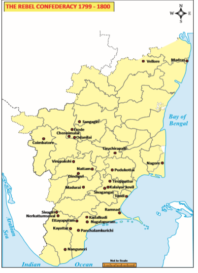
The early struggle between the Palayakkaras and the East India Company had a strong political dimension. By the Carnatic treaty of seventeen ninety two, consolidated the English power over the Palayakkars. The English got the right to collect taxes. The result was the outbreak of the revolt of Palayakkars.
Puli Thevar was the pioneer in Tamil Nadu, to protest against the English rule in India. He was the Palayakkarar of the Nerkattumseval, near Tirunelveli. During his tenure he refused to pay the tribute neither to Mohammed Ali, the Nawab of Arcot nor to the English. Further he started opposing them. Hence, the forces of the Nawab of Arcot and the English attacked Puli Thevar. But the combined forces were defeated by Puli Thevar at Tirunelveli. Puli Thevar was the first Indian king to have fought and defeated the British in India. After this victory Puli Thevar attempted to form a league of the Palayakkars to oppose the British and the Nawab.
In 1759, Nerkattumseval was attacked by the forces of Nawab of Arcot under the leadership of Yusuf Khan. Puli Thevar was defeated at Anthanallur and the Nawabs forces captured Nerkattumseval in 1761. Puli Thevar who lived in exile recaptured Nerkattumseval in 1764. Later, he was defeated by Captain Campell in 1767. Puli Thevar escaped and died in exile without fulfilling his purpose, although his courageous trail of a struggle for independence in the history of South India.
As a feudatory under Pandyas, Jagaveerapandiaya Kattabomman ruled Virapandyapuram. Panchalankurichi was its capital. He later became a Poligar during the rule of Nayaks. He was succeeded by his son Veerapandya Kattabomman. His wife was Jakkammal and his brothers were Oomathurai and Sevathaiah.
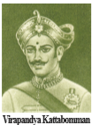
After the decline of the Vijayanagar empire, the mughals established their supremacy in the south. The Nawabs acted as their representatives in Karnataka. Panchalamkuruchi palayam was acted as an ally to the Nawab of Arcot. Hence it paid tribute to the Nawabs. But in seventeen niety two, the political condition had completely changed. Based on the Carnatic treaty of seventeen niety two, the company gained the right to collect taxes from Panchalamkuruchi. The collection of tribute was the main cause for the rivalry between the English and Kattabomman.
In 1798, Colin Jackson, the collector of Ramanathapuram wrote letters to Kattabomman asking him to pay the tribute arrears. But Kattabomman replied that he was not in a position to remit the tribute due to the famine in the country. Colin Jackson got angry and decided to send an expedition to punish Kattabomman. However, the Madras government directed the collector to summon the Palayakkarar at Ramanathapuram and hold a discussion.
In 1798, Kattabomman and his minister Siva Subramaniam met the Collector at Ramanathapuram. Upon a verification of accounts, Colin Jackson was convinced that Kattabomman had cleared most of the arrears leaving only 1080 pagodas as balance. During this interview Kattabomman and his Minister, Sivasubramaniam, had to stand before the arrogant collector for three hours. The Collector insulted them and tried to arrest Kattabomman and his minister. Kattabomman tried to escape with his minister. Oomathurai suddenly entered the fort with his men and helped the escape of Kattabomman. But unfortunately Sivasubramaniam was taken as prisoner.
After his return to Panchalamkuruchi, Kattabomman wrote a letter to the Madras Council narrating the behaviour of the Collector Colin Jackson. Edward Clive, the Governor of Madras Council ordered Kattabomman to surrender. The Madras Council directed Kattabomman to appear before a Committee. Meanwhile, Edward Clive dismissed the Collector for his misbehaviour and released SivaSubramania. Kattabomman appeared before the Committee and found Kattabomman was not guilty. S.R. Lushington was appointed collector in the place of Colin Jackson, who was eventually dismissed from service.
During that time, Marudu Pandyan of Sivaganga formed the South Indian Confederacy of rebels against the British, along with the neighbouring Palayakkarars. This confederacy declared a proclamation which came to be known as Tiruchirappalli Proclamation. Kattabomman was interested in this confederacy. He tried to establish his influence over Sivagiri, who refused to join with alliance of the rebels. Kattabomman advanced towards Sivagiri. But the Palayakkar of Sivagiri was a tributory to the Company. So, the Company considered the expedition of Kattabomman as a challenge to their authority. So, the Company ordered the army to march to Panchalamkuruchi.
Major Bannerman moved his army to Panchalamkuruchi on 5th September. They cut of all the communications to the Fort. In a clash at Kallarpatti, Siva Subramaniyam was taken as a prisoner. Kattabomman escaped to Pudukottai. Vijaya Ragunatha Tondaiman, Raja of Pudukottai, captured Kattabomman from the jungles of Kalapore and handed over to the Company. After the fall of Panchalamkuruchi, Bannerman brought the prisoners to an assembly of the Palayakkarars and after trial sentenced them to death. Sivasubramania was executed at Nagalapuram. On the 16 th October ViraPandya Kattabomman was tried before an assembly of Palayakkarar, summoned at Kayathar. On 16 th October 1799, Kattabomman was hanged at Kayathar. Kattabomman’s heroic deeds were the subject of many folk ballads which kept his memory alive among the people.
Velu Nachiyar was a queen of Sivagangai. At the age of 16, she was married to Muthu Vaduganathar, the Raja of Sivagangai. In 1772, the Nawab of Arcot and the British troops invaded Sivagangai. They killed Muthu Vaduganathar in Kalaiyar Koil battle. Velu Nachiyar escaped with her daughter Vellachi Natchiyar and lived under the protection of Gopala Nayaker at Virupachi near Dindigul. During this period she organised an army and employed her intelligent agents to find where the British stored their ammunition. She arranged a suicide attack by a faithfull follower Kuyili, a commander of Velu Natchiyar. She recaptured Sivagangai and was again crowned as queen with the help of Marudhu brothers. She was the first queen to fight against the British colonial power in India. She is known by Tamils as Veeramangai and also known as ‘Jhansi Rani of South India’.
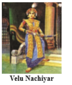
Marudu brothers were the sons of Mookiah Palaniappan and Ponnathal. The elder brother was called Periya Marudu (Vella Marudhu) and the younger brother Chinna Marudhu. Chinna Marudu was more popular and was called Marudu Pandiyan. Chinna Marudu served under Muthu Vaduganatha Peria Udaya Devar (1750-1772) of Sivaganga. In 1772 the Nawab of Arcot laid seige of Sivaganga and captured it. Muthu Vaduganatha Peria Udaya Devar, died in battle. However, after a few months Sivaganga was re-captured by Marudhu Brothers and Periya Marudhu was enthroned as the ruler. Chinna Marudhu acted as his adviser. Due to the terrorist activities against British, he was called as “Lion of Sivaganga”. In the later half of the eighteenth century the rebellion against the British was carried by Marudu Brothers in South India.
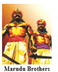
Kattabomman was hanged to death and his brother Umaithurai and others fled to Sivaganga, where Marudu Pandya gave protection to them. The merchants of Sivaganga did not like the interference of the company in their internal politics. The company waged war against Sivaganga for these two causes.
In February eighteen not one the brothers of Kattabomman, Oomathurai and Sevathaiah escaped from Palayamkottai prison and reached Kamudhi. Chinna Marudu took them to Siruvayal, his capital. They reconstructed their ancestral fort at Panchalamkurichi. The British troops under Colin Macaulay retook the fort in April and the Palayakkarar brothers sought shelter in Sivaganga. The English demanded Marudu Pandyas to hand over the fugitives, the latter refused. Col. Agnew and Colonel Innes marched against them.
The Palayakkarar War assumed a much broader character than its predecessor. It was directed by a confederacy consisting of Marudu Pandiar of Sivaganga, Gopala Nayak of Dindigul, Kerala Varma of Malabar and Krishnappa Nayak and Dhoondaji of Mysore. The English declared war against the confederacy.
The Marudu Pandyas issued a proclamation of Independence called Tiruchirappalli Proclamation in June eighteen not one. The Proclamation of eighteen not one was the first call to the Indians to unite against the British. A copy of the proclamation was pasted on the walls of the Nawab’s palace in the fort of Tiruchi and another copy was placed on the walls of the Vaishnava temple at Srirangam. Thus, Marudhu brothers spread the spirit of opposition against the English everywhere. As a result, many Palayakkarars of Tamil Nadu went on a rally to fight against the English. Chinna Marudhu collected nearly 20,000 men to challenge the English army. British reinforcements were rushed from Bengal, Ceylon and Malaya (Malaysia). The rajas of Pudukkottai, Ettayapuram and Thanjavur stood by the British. Divide and rule policy followed by the English spilt the forces of the Palayakkarars.
In May 1801, English attacked the rebels in Thanjavur and Tiruchi areas. The rebels went to Piranmalai and Kalayarkoil. They were again defeated by the forces of the English. In the end, the superior military strength and the able commanders of the British army won the battle. The rebellion failed and English annexed Sivagangai in eighteen not one. The Marudu brothers were executed in the Fort of Tirupathur in Ramanathapuram District on 24 October eighteen not one. Oomathurai and Sevathaiah was captured and beheaded at Panchalamkuruchi on 16 November 1801. Seventy-three rebels were sentenced to Penang in Malaya, then called the Prince of Wales Island. Though they fell before the English, they were the pioneers in sowing the seeds of nationalism in the land of Tamil.
Thus the South Indian Rebellion is a land mark in the history of Tamil Nadu. Although the 1800-1801 rebellion was to be categorized in the British records as the Second Palayakkarar War. Under the terms of the Karnataka Treaty on 31 July 1801, the British assumed direct control over Tamil Nadu. The Palayakkarar system was abolished.
Dheeran Chinnamalai was born at Melapalayam in Chennimalai near Erode. His original name was Theerthagiri. He was a palayakkarar of Kongu country who fought the British East India Company. The Kongu country comprising Salem, Coimbatore, Karur and Dindigul formed a part of the Nayak kingdom of Madurai but had been annexed by the Wodayars of Mysore. After the fall of the Wodayars, these territories along with Mysore were controlled by the Mysore Sultans. After the third and fourth Mysore wars the entire Kongu region passed into the hands of the English.
Dheeran Chinnamalai was trained by French military in modern warfare. He was along the side Tipu Sultan to fight against the British East India Company and got victories against the British. After Tipu Sultan’s death Chinnamalai settled down at Odanilai and constructed a fort there to continue his struggle against the British. He sought the help of Marathas and Maruthu Pandiyar to attack the British at Coimbatore in 1800. British forces managed to stop the armies of the allies and hence Chinnamalai was forced to attack Coimbatore on his own. His army was defeated and he escaped from the British forces. Chinnamalai engaged in guerrilla warfare and defeated the British in battles at Cauvery, Odanilai and Arachalur. During the final battle, Chinnamalai was betrayed by his cook Nallapan and was hanged in Sankagiri Fort in 1805.
The family members of Tipu were imprisoned at Vellore fort after the fourth Mysore war. Some three thousand ex-servants and soldiers of Hyder and Tipu had also been moved to the vicinity of Vellore and their property in Mysore confiscated. It was quite natural that they were all unhappy and they hatred the English.
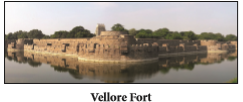
The Vellore fort consisted of large majority of Indian troops, a good part of it recently been raised in Tirunelveli after the Palayakarar uprising of 1800. Many of the trained soldiers of the various Palayams were admitted into the English army. Thus the Vellore fort became the meeting ground of the rebel forces of South India.
In 1803, William Cavendish Bentinck became Governor of Madras. During his period certain military regulations were introduced in 1805-06 and were enforced by the Madras Commander-in-Chief Sir John Cradock. But the sepoys felt that these were designed to insult them.
In June 1806, military General Agnew introduced a new turban, resembling a European hat with a badge of cross on it. It was popularly known as ‘Agnew’s turban’. Both the Hindu and Muslim soldiers opposed it. So the soldiers were severely punished by the English.
The Indian soldiers were waiting for an opportunity to attack the English officers. Tipu’s family also took part. Fettah Hyder, the elder son of Tipu, tried to form an alliance against the English. On July 10 th in the early morning the native sepoys of the 1 st and 23 rd Regiments started the revolt. Colonel Fancourt, who commanded the garrison, was their first victim. The fort gates were closed. Meantime, the rebels proclaimed Futteh Hyder, as their new ruler. The British flag in the fort was brought down. The tiger-striped flag of Tipu Sultan was hoisted on the fort of Vellore.
Major Cootes who was outside the fort rushed to Ranipet and informed Colonel Gillespie. Col. Gillespie reached Vellore fort. He made an attack on the rebel force. The revolt was completely suppressed and failed. Peace was restored in Vellore. On the whole, 113 Europeans and about 350 sepoys were killed in the uprising. The revolt was suppressed within a short period. It was one of the significant events in the history of Tamil Nadu.
V.D. Savarkar calls the Vellore revolt of 1806 as the prelude to the first War of Indian Independence in 1857.
The early uprisings did not succeed in threatening the British in India. It took the Revolt of 1857 to bring home to the Company and the British thought that their rule was not accepted to a large section of the population. The Revolt of 1857 was a product of the character and the policies of colonial rule. The cumulative effect of British expansionist policies, economic exploitation and administrative innovations over the years had adversely affected the positions of all rulers of Indian states.
The immediate cause was the introduction of new Enfield Riffles in the army. The top of the cartridge of this rifle was to be removed by the mouth before loading it in the rifle. The cartridges were greased by the fat of pig and the cow. The Indian sepoys believed that the British were deliberately attempting to spoil the religion of both the Hindus and the Muslims because while the Hindus revered the cow, the Muslims hated the pig. The soldiers, therefore, determined to refuse their service and, ultimately revolted. Thus, the primary and the immediate cause of the revolt was the use of the greased cartridges.
On 29 March 1857 at Barrackpur (near Kolkata) Mangal Pandey, a young Sepoy from Bengal Regiment, refused to use the greased cartridge, and shot down his sergeant. He was arrested, tried and executed. When this news spread many sepoys revolted.
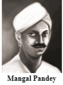
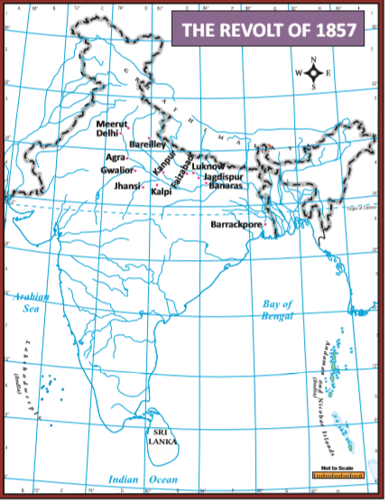
On 10 May 1857, the Sepoys of the third cavalry at Meerut openly revolted by swarming the prisons and releasing their comrades. They were immediately joined by the men of the 11 th and 20 th Native Infantries, and they murdered some English officers and then marched to Delhi. The arrival of Meerut sepoys at Delhi on 11 th May and declared of Bahadur Shah 2 as the Emperor of India. Delhi became the centre of the Great Revolt and Bahadur Shah, its symbol.
The revolt spread quickly. There were mutinies at Lucknow, Kanpur, Jhansi, Bareilly, Bihar, Faizabad, and many other places in north India. Many of them found that it was a good opportunity to burn the papers of their landlords. Many others whose titles and pensions were abolished by the British who participated in it, inorder to take revenge.
Box item
In Central India the revolt was guided by Rani Lakshmi Bai of Jhansi. She was one of the greatest patriots of India. Sir Hugh Rose occupied Jhansi. Rani Lakshmi Bai fled from Jhansi and joined hands with Tantia Tope who had assumed the leadership of the rebel army at Gwalior. But the British captured Gwalior in June 1858. Rani was killed in the battle. Tantia Tope fled away but was captured and later executed. According to the British historians, present at the time of revolt, Rani Lakshmi Bai was the best and the bravest among the leaders of the Revolt of eighteen fifety seven.
Lord Canning, the governor-general took immediate steps to suppress the revolt. He collected the forces of Madras, Bombay, Sri Lanka and Burma. On his own initiative, he called the British army which was deputed to China by Britain to Calcutta. He ordered the loyal Sikh army to proceed to Delhi immediately. The British regained their lost positions very soon.
Delhi was recaptured by General John Nicholson on 20 September, eighteen fifety seven and deportation of Bahadur Shah II to Rangoon where he died in 1862.
Military operations with the recovery of Kanpur were closely associated with the recovery of Lucknow. Sir Colin Campbell occupied Kanpur. Nana Saheb was defeated at Kanpur and escaped to Nepal. His close associate Tantia Tope escaped to central India, was captured and put to death while asleep. The Rani of Jhansi had died in the battle-field. Kunwar Singh, Khan Bahadur Khan were all dead, while the Begum of Awadh was compelled to hide in Nepal. The revolt was finally suppressed. By the end of eighteen fifety nine, British authority over India was fully re-established.
Places of Revolt |
Indian Leaders |
British Officials who suppressed the revolt |
Delhi |
Bahadur Shah 2 |
John Nicholson |
Lucknow |
Begum Hazrat |
Mahal Henry Lawrence |
Kanpur |
Nana Saheb |
Sir Colin Campbell |
Jhansi & Gwalior |
Lakshmi Bai, Tantia Tope |
General Hugh Rose |
Bareilly Khan |
Bahadur Khan |
Sir Colin Campbell |
Bihar |
Kunwar Singh |
William Tailor |
Various causes were responsible for the failure of the revolt.
In fact, the Revolt of 1857 played an important role in bringing the Indian people together and imparting them the consciousness of belonging to one country. The Revolt paved the way for the rise of the modern national movement. It was at the beginning of the twentieth century that the 1857 Revolt came to be interpreted as a “planned war of national independence”, by the Historian V.D. Savarkar in his book, 'First War of Indian Independence'.
Beheaded |
hanged to death |
தூக்கிலிடு |
Betrayed |
give away information about somebody |
காட்டிக்கொடு |
Cartridge |
bullet |
தோட்டா |
Eventually |
in the end |
முடிவாக |
Infantry |
an army unit consisting of soldiers who fight on foot |
காலாட்படை |
Tribute |
payment made periodically by one state |
கப்பம் |
Swarm |
crowd |
கூட்டம் |
1) |
Delhi |
- |
Kunwar Singh |
2) |
Kanpur |
- |
Khan Bahudar Khan |
3) |
Jhansi |
- |
Nana Saheb |
4) |
Bareilly |
- |
Lakshmi Bai |
5) |
Bihar |
- |
Bahadur Shah 2 |
Prove that there was no common purpose among the leaders of the Great revolt of 1857.
On the River map of India mark the following centres of the revolt of 1857.
collect pictures of Palayakkarars and prepare an album.
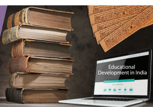
To acquaint oneself with
Education is a process that begins at birth and continues until the end of life. The primary objective of formal education at school is to help children develop intellectual skills and physical capabilities. The pupils who join college or university after schooling acquire required skills to prepare themselves for the future. A person graduated from an institution of higher a learning is expected to be endowed with holistic knowledge in their chosen subject of study, possessing scientific outlook and historical perspective. How an education system anticipating such a possibility evolved in India over time is dealt with in this chapter.
In ancient India daughters as well as sons of priestly and warrior classes had access to education. The pupils were taught in ashramas and hermitages to memorize Vedic hymns and learn the subjects such as Sanskrit grammar, prose, and verse compositions, logic and metaphysics. Their curriculum also included astronomy, mathematics, medicine and astrology. This tradition of teachinglearning was called Gurukula system.
In ancient Tamil Nadu, we find references to learned women in Sangam literature. We have examples of Aadhimanthiyar and Avvaiyar, and forty other poetesses who lived during the Sangam Age. The scripts engraved on potsherds excavated in Keeladi, Sivagangai district in Tamil Nadu is illustrative of the high literacy level the people had attained even as early as 6th century BC (B C E).
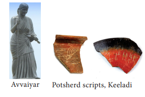
Box item
In Purananuru (183) Ariyapadai Kadandha Nedunchezhiyan (Nedunchezhiyan who defeated the Aryan Army) of Sangam period in his poem emphasised the importance of education. He exhorted everyone to learn from the teacher, irrespective of poverty, giving gifts to him, while pointing out that even a mother favours the learned among the children born to her, and a ruler follows one who is learned. He further added, if a lower class person is learned, even upper class person would bow before him.
Upanishads marked a radical departure from the Vedic beliefs. The term upa-ni-shad, meaning ‘to sit down near one’, refers to the wisdom learned in secret at the feet of a sage, usually in a forest retreat. The Upanishads shifted its emphasis from gods and rituals to mystic knowledge. Education in post Vedic period was organised in living quarters or private houses of learned teachers. We know about the continuing Gurukula system followed in Varanasi (Banaras/Kasi) from the accounts of the French traveller Bernier. According to him in Banaras masters were sent to different parts of the town to teach in private houses, mainly in the gardens of the rich merchants. Some of these masters had four disciples, others six or seven and the most eminent had twelve. Here teaching was on Vedas, Upanishads, Dharmasastras and epics. The teacher earned livelihood from the dakshinas, or customary gifts of the community. There were also charities to house and feed teachers without charge.
The great religious reformers of 6th century BC (BCE), Mahavira, Buddha and Gosala rejected the authority of Vedas. In the age that followed numerous sects emerged of which only Jainism and Buddhism survived into modern times. Jaina and Buddhist monasteries educated and trained their monks. Here students had to remain for a specified period of time to complete their education. Jainas had their religious literature in ArdhaMagadhi and in Pali languages. In south India they established centres for religious instruction near Madurai, Kanchipuram and at Shravanabelagola, Karnataka. The Tamil word palli meaning school referred to Jaina monasteries. The contribution of Jains to Tamil literature was immense. Notable among their celebrated works were Thirukkural and Naladiyar.
In contrast to traditional educational centres of ancient types, Jaina and Buddhist centres provided education in large university like campuses. Nalanda in Bihar was a great Buddhist educational centre attracted students from places as far as China and Southeast Asia. These students carried back with them the message of Buddha’s teachings. The same was with Vikramshila University that was established in the eighth century AD (CE) by King Dharmapala of Pala dynasty in Bengal. There were monasteries and colleges at Kanchipuram which had gained fame equalling Nalanda. Hiuen Tsang, a Buddhist monk from China visited Kanchipuram during the reign of Narasimha Pallava 1.
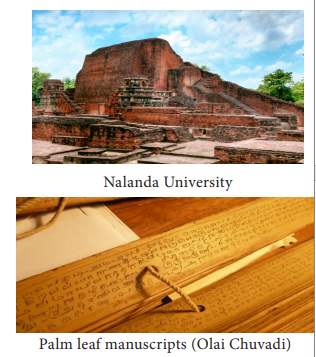
Do you know?
Hiuen Tsang visited Nalanda in the seventh century AD (CE). At that time students there studied the Vedas and were trained in fine arts, medicine, mathematics, astronomy, politics and the art of warfare. UNESCO declared the excavated remains at Nalanda in the list of World Heritage in 2009.
Temples functioned as a place for imparting formal education during the medieval period. In small villages temple priest taught the pupils. Education imparted at a more advanced level was in colleges attached to the large temples. Mutts or monasteries also emerged as centres of learning in medieval period. Saivite and Vaishnavite mutts received royal patronage in the form of endowments. The education these mutts focused was on Saivism, Vaishnavism, martial arts, music and painting. These mutts continued to exist and the Tamil savant U.V. Saminathar pursued his learning in Tiruvaduthurai Saivite mutt that was established in the fourteenth century.
Technical education remained with guilds. Knowledge of mining, metallurgy, weaving, dyeing, carpentry was the preserve of the relevant guild. The sons of artisans were trained in hereditary occupations. These guilds functioned separately and there was no exchange of knowledge between these guilds and the educational centres.
During the sultanate and the Mughal rule, unlike the Sanskrit schools that catered to the upper and ruling classes, Islamic schools (Maktabs) were open to all without restriction. Here pupils in addition to memorising portions of the Quran also learnt vernacular and Persian. In the Madrasas, (Arabic institutions of higher learning) a poor student coming from a far off place could get the necessities of life from a pious family in the neighbourhood. Madrasas functioned as a theological seminary and law school. Curriculum centred on the Quran and the Hadith. In addition students were taught Arabic grammar, literature, arithmetic and accounting, logic.
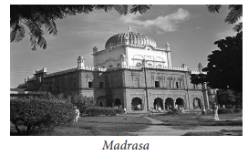
The concern for Indian education was first shown by Governor General Warren Hastings. Responding to a delegation of leading Muslims headed by a maulvi, he facilitated the establishment of a Madrasa at Calcutta in 1780-’81. There were forty stipendiary students studying there. In the next decade (1791-’92) with the support of his successor Cornwallis, Jonathan Duncan, later governor of Bombay, founded a Sanskrit college at Banaras at the cost of government. Thereafter for twenty years the government did not accept direct responsibility for education. Educational funds continued to be spent for many years on oriental learning. English Parliament while renewing the East India Company’s Charter in 1813 included a clause to provide ‘not less than one lakh of rupees’ for the promotion of literature and sciences in British territories in India. But the money earmarked for the purpose remained unspent.
Meanwhile thanks to the initiative of social reformer Raja Rammohan Roy, the Hindu College was founded in Calcutta with local subscription in 1817. The purpose was to provide liberal education in English language. The Christian missionaries making use of their freedom on their part opened a Baptist Mission College in the following year (1818) at Serampore. Raja Rammohan Roy pleaded for more ‘enlightened system of education in which mathematics, philosophy, chemistry, anatomy and other useful sciences would be included’
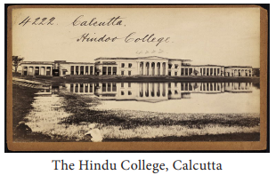
Noting that the cultured classes were desirous of English education, William Bentinck on his appointment as Governor General of India appointed Thomas Babington Macaulay to be the chairman of the then existing Education Committee to recommend a definite policy on education to be adopted. Macaulay prepared his famous Minute of 1835. According to this Minute the objective of the government’s educational policy was to be ‘the promotion of European literature and science among the natives of India’. It was also clearly stated that the medium of language to be used was English. Bentinck endorsed Macaulay’s Minute and decided that the Education fund henceforth should be spent on English education alone.
The Company’s charter renewal came up in 1852 and this provided occasion for the British Parliament to take a definite decision on education. The new educational policy statement was sent in the famous Charles Wood’s Despatch of 1854. The Wood’s Despatch reiterated what had been stated in Macaulay’s famous Minute of 1835. Though there were protests from orthodox sections of Indians, the government went ahead with its policy and founded a university in each of the three presidencies. University education started with the setting up at Madras, Bombay and Calcutta universities modelled on the then University of London in 1857. The main function was to hold examination and to confer degrees on successful candidates appearing from affiliated colleges. The University in each Presidency prescribed the courses and the syllabi.
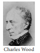
The contribution of Christian missionaries to education was praiseworthy. A Bengal elementary school was started by Baptist missionaries with forty boys at Serampore in 1800. This was followed by establishment of a number of schools in the presidency by London Missionary Society. European missionaries showed more interest than the government in Indian women’s progress. Miss Mary Ann Cook on her arrival in India in 1821 established 23 girl schools with an average of 25 to 30 students in each in Calcutta and the surrounding villages. Another notable event was the establishment of the Bethune School (1849) at Calcutta by John Elliot Drinkwater Bethune. This school later taken over by the government after his death and it became the first institution of higher education for women in 1879.
The American Society established school for girls in 1824 with the objective of educationg the daughters of soldiers. Dr. and Mrs. Wilson founded six girls schools in Bombay during the year 1829-’30. Jyotiba Phule opened a pioneering school (1848) for girls of the historically marginalised sections of the society in Pune. In 1889 Professor Karve of Poona started a school for Hindu widows. This developed into the Women’s University (Shreemati Nathibai Damodar Thackersey Women's University - SNDT) in 1916. Parsis in Bombay took active interest in women’s education. In 1913 out of ten high schools for girls in Bombay, eight were run by Parsis. Later the All India Women’s Conference (1926) resolved to start a college to be entirely staffed and managed by women. This college is Lady Irwin College, Delhi.
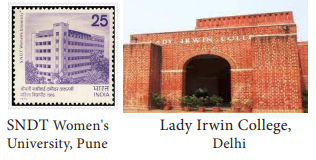
The missionary education started in Tamil Nadu with German Lutheran missionary Bartholomaus Ziegenbalg and his elder colleague Henri Plustscham who arrived in India on 9 July 1706. Though the purpose was to serve the cause of Protestant religion, they established schools in the Danish settlement of Tharangambadi (Tranquebar). This was a pioneering effort which was followed by the missionaries of the later period. Ziegenbalg learnt Tamil and translated the Bible into Tamil. He imported a printing press from Germany and arranged for the publication of Christian literature.
In the presidency of Madras, a survey made in 1822 showed the existence of 12,498 institutions of all kinds with 1, 84, 110 students on roll. Sir Thomas Munro, Governor of Madras, 1820-1827, claimed that the state of education, though low compared to England, was higher than in most of European countries.
In Madras two Scottish chaplains Rev. Lawrie and Rev. Bowie started a school in the vicinity of St. Andrew’s Church, Egmore, in 1835. This school was later shifted to Black Town (George Town from 1911) in 1837. There were 59 students studying in that school. Rev. William Miller upgraded the school into a college in 1862. This is the Madras Christian College, Tambaram. Realising the importance of English education the elite of the Madras city presented a petition in 1839 to provide facilities for Western education. In response a High School was established at Egmore in 1840 which was upgraded to the status of a college in 1857. This is Madras Presidency College.
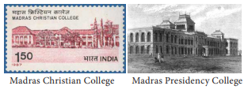
Do you know?
In Tiruchirappalli in 1838 Holy Cross Sisters founded the St. Joseph’s Anglo Indian School. The Jesuits established St. Joseph’s College in 1844. In Tirunelveli the Christian Mission Society started a school in 1844 which was upgraded to the status of a college (then C.M.S. College, now St. John’s College) in 1876.
After the British Parliament transferred the government and territories of the East India Company to the Crown, in educational affairs the policy of the Company continued to be the policy of the Crown. The success of university education and the growing demand for educated Indian in administration, in law courts provided stimulus for the establishment of more number of colleges and universities. At the same time the substitution of English in courts and offices deprived Muslims of their employment when Persian was court and administrative language. It was at this time Sir Syed Ahmad Khan established Muhammadan-Anglo School (1875) at Aligarh which ultimately developed into the Muslim University of Aligarh (1920). By the second decade of twentieth century universities had come up in prominent cities, following Sadler Commission Report (1917). There were unitary and residential universities started thanks to the initiatives taken by the philanthropists. The notable example is Jamsetji Tata’s Indian Institute of Science (1909), Bengaluru. In Madras, the Pachaiyappa’s School named after a dubash of the 18th century came up in 1845, which was later upgraded to a college in 1880.In Tamil Nadu Annamalai University was established in 1929.
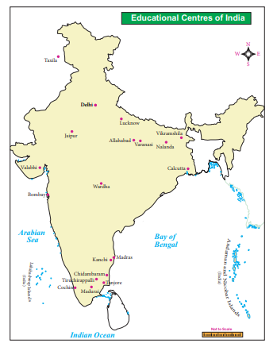
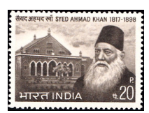
Notwithstanding the colleges and universities education continued to be the preserve of the upper and middle classes. Gandhiji came up with Wardha educational scheme aimed at imparting elementary education through some craft along with the basics. It was hoped that children would produce enough to pay the cost of their education and make possible the introduction of free and compulsory education. However the Hunter Commission’s recommendation of fixing the responsibility of providing primary education with local and municipal governments became possible when Dyarchy was in operation in provinces (1921-1937). The Sargent Commission’s Scheme (1944) of introducing free and compulsory education for all Indian children in the 6-11 years age group had to await independence for its implementation.
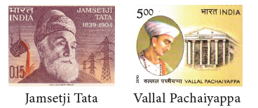
In 1951 only 18.3 percentage of people were literate. The male literacy was 27.2 percentage while female literacy rate was 8.9. In 1950-51 there were two lakh students on rolls in Institution of higher learning. There were 58 universities when University Grants Commission was set up in 1956 to maintain standards in higher education. The national government appointed the Dr. Radhakrishnan Commission (1948), the Secondary Education Commission under the chairmanship of Dr. Lakshmanaswami Mudaliyar (1952-’53), and the Kothari Commission (1964) suggested measures for modernisation of Education system in the country.
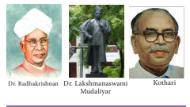
Box item
Important recommendations of the Kothari Commission are: 1. 10 plus 2 plus 3 pattern of education 2. Vocationalisation of secondary education 3. Common school system of public education where students would learn up to 5th standard at schools in neighbourhood in their mother tongue.4. Free and compulsory education for children aged 6 to 14 years. 5. Union government to invest at least six per cent of its GDP in the education sector.
The Government of India in the meantime adopted measures to strengthen the much neglected sphere of science and technology in the country. Before the end of three plan periods five IITs, 17 national laboratories specialising in different areas of research, Council of Scientific and Industrial Research (CSIR), Defence Research and Development Organisation (DRDO) and Atomic Energy Commission had been established. Thereafter D.P. Chattopadhyay Committee on Teacher Education1983, National Education Policy Commission, 1986, Acharya Ramamurthy Review Committee of 1990, Yashpal Committee 1993, T.S.R. Subramanian Committee (2015) constituted with the objective of reforming the curriculum in keeping with the changing time, had come up with several recommendations.
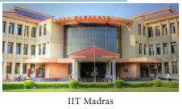
Thanks to the remedial measures taken by the successive governments, both Union and State, based on the reports of the said Commissions and Committees, as well as the governmental programmes such as scholarships to the meritorious, deprived and disadvantaged, waiving of tuition fee for undergraduate courses, free uniform and noon meal schemes in schools, the enrolment rate increased and dropout rate decreased remarkably in schools. As a sequence male literacy 2019-21 stood at 84.4 percentage (against 27.2 percentage in 1951) and female literacy stood at 71.5 percentage (against 8.9 in 1951). In 2018 about 36.6 million students were in 907 institutes of higher learning (against 58 institutes in 1956).
Philanthropist - refers to someone who makes donations to charities intended to increase human well being – பிறர் நலனுக்கு உழைப்பவர், கொடையாளி, நன்கொடையாளர்
Hadith - a collection of traditions containing sayings of the prophet Muhammad with accounts of his daily practices – இஸ்லாமிய கிரந்தங்கள்
Hermitage - the abode of a hermit – துறவிகள் வாழ்விடம்
Maulvi - expounder of Muhammadan law, Muslim theologian – இஸ்லாமிய சட்ட நிபுணர்
Savant – Genius - அறிவாளி
Reiterated – restated – வலியுறுத்தல்
Waiving - refraining from insisting on – தள்ளுபடி செய்தல்
Dubash - an Indian translator or interpreter – இந்திய மொழிப்பெயர்ப்பாளர்
1. Whose account is the source of information for the Gurukula system followed in Varanasi ?
a) Nikitin
b) Hiuen Tsang
c) Domingo Paes
d) Bernier
2. Which University was established by King Dharmapala in Bengal?
a) Taxila University
b) Vikramshila University
c) Banaras University
d) Nalanda University
3. In whose reign Chinese monk Hiuen Tsang visited Kanchipuram?
a) Chandragupta 2
b) Mahendira Pallava
c) Narasimha Pallava 1
d) Harsha Vardhana
4. When did UNESCO declare Nalanda as a world heritage site?
a)2006
b) 2007
c) 2008
d) 2009
5. Who was the Governor General to establish the first madrasa in Calcutta?
a) Warren Hastings
b) Robert Clive
c) William Bentinck
d) Ripon
6. Who was the social reformer who started a school for the women of historically marginalized section?
a) Jyotiba Phule
b) Raja Rammohan Roy
c) Keshub Chandra Sen
d) Sir Syed Ahmed Khan
7. Where did the German missionary Bartholomaus Ziegenbalg start first school in Tamil Nadu?
a) Tranquebar
b) Tirunelveli
c) Thanjavur
d) Tiruchirappalli
2. Fill in the blanks
1. Daughters as well as sons of priestly and warrior classes had access to education in dash India.
2. Baptist Mission College was started in 1818 at dash.
3. Professor Karve started a school for Hindu Widows in dash.
4. dash College in Delhi was started by the initiative of the All India Women’s Conference.
5. The first Commission on Secondary education was chaired by dash.
3. Match the following
1. University Grand commission – 1964
2. Kothari commission – English education
3. Macaulay – Bengaluru
4. Free and compulsory education – 1956
5. Tatas Indian institute of science – 6 to 14 years
4. State True or False
1. We have evidence to show that the script of Indus and the script on pottery unearthed in Keeladi is same.
2. Naladiyar was the contribution of Jains
3. The term upa-ni-shad, means “to sit down near one”,
4. Buddha, Mahavira and Gosala revolted against the authority of Vedas.
5. Nalanda was a great Vedic educational centre.
5. Consider the following statements and tick (✓) the appropriate answer
1. a) Sanskrit education focused on Vedas, Upanishads, Dharma Sastras and epics
b) In Varanasi, teachers under the gurukula system taught in their own houses.
c) Monasteries were built on the models of universities.
d) Under the Gurukula system the teachers were supported by the endowments of the kings.
1) a and b are correct
2) b and d are correct
3) c and d are correct
4) a and c are correct
6. Answer the following in one or two sentences
1. Write about the reference to importance given to education in Purananuru.
2. Highlight the contribution of Jains to Tamil literature.
3. What do you know about Nalanda University?
4. Point out the essence of Islamic education in medieval India.
5. What is Gandhiji’s Wardha Scheme of Education?
7. Answer the following in detail
1. Discuss the essential features of learning in Jaina and Buddhist monasteries.
2. Attempt a brief account of the famous Minute of Macaulay.
3. What were the institutions founded to strengthen Science and Technology by the Indian government in the postindependence context?
4. Highlight the important recommendations of Kothari Commission.
8. HOTs
1. Assess the role of Christian missionaries in the development of modern education in British India.
9. Mark the following places on the outline map of India
1. Nalanda
6. Delhi
2. Tiruchirappalli
7. Varanasi
3. Madurai
8. Bombay
4. Kanchipuram
9. Calcutta
5. Vikramshila
10. Chennai
X Project and Activity
1. Collect the pictures of educational centres of learning, Vedic, Jainas, Buddhists, Islamic, in ancient and medieval India and prepare an album.
2. Conduct a debate in the class for and against the British system of Education.
REFERENCE BOOKS
1. Abraham Eraly, Gem in the Lotus, Penguin, 2002
2. Abraham Eraly, The Age of Wrath: A History of the Delhi Sultanate, Penguin, 2014
3. Burton Stein, A History of India, Oxford University, 2004
4. M.A. Laird, “The Contribution of Christian Missionaries to Education in Bengal”, 1795-1857, Ph.D. thesis submitted to School of Oriental and African Studies, 1968
5. L.S.S. O’Malley, Modern India and the West, Oxford University Press, 1968
6. Romila Thapar, Early India: From the Origins to A.D. 1300, Penguin, 2002
7. Sulochana Krishnamoorthy, “Development of Education for Women in Bombay under British Raj”, Proceedings of the Indian History Congress, Vol.64 (2003), pp. 1110-1115.
INTERNET RESOURCES
The Post-Independence India: The Education, https://www.britanica.com
UGC Annual Report 2018- 19 in http://14/139.60.153 „ www.wikicommons
ICT CORNER
Development of Education in India
Step 1 Open the Browser and type the URL given below (or) Scan the QR Code.
Step 2 Type ‘Education in India’ in the search box
Step 3 Explore the Timeline Events with Pictorial Descriptions.
*Pictures are indicatives only.
*If browser requires, allow Flash Player or Java Script to load the pag


The history of Indian industry perhaps dates back to the history of humankind. India’s traditional economy was characterised by a blend of agriculture and handicrafts. According to Edward Baines, ‘The birthplace of cotton manufacture is India where it probably flourished long before the dawn of authentic history.’ Bernier, who visited India during the reign of Mughal emperor Shah Jahan, marvelled at the incredible quantity of manufactured goods. Tavernier, a French traveller, admired the peacock throne, carpets of silk and gold as well as mini carvings.
The crafts in India has a rich history. Crafts were an integral part in the life of the people. Before arrival of mechanised industry, the production of Indian handicrafts was the second largest source of employment in rural India next to agriculture. The traditional Indian industry was known in the fields of textiles, woodwork, ivory, stone cutting, leather, fragrance wood, metal work and jewellery. The village artisans such as potters, weavers, smiths produced articles and utensils for domestic use. But some specialised goods were produced for domestic and international markets. Some such specialised goods produced were cotton textiles, muslin, wool, silk and metal articles. India was famous for its fine quality of cotton and silk clothes. There are references made in many scholarly works to the professions of the weaver, the tailor and the dyer. Certain centres of metal industry were quite well known. For example, Saurashtra was known for bell metal, Vanga (Bengal) for tin industry and Dacca was identified with muslin clothes.
Box item
The muslin of Dacca
Mummies in Egyptian tombs dating from 2000 BC(BCE) were found wrapped in Indian muslins of the finest quality. A 50metres of this thin fabric could be squeezed into a match box.

The British conquest transformed Indian economy (self-reliant) into colonial economy.
As the British conquered the Indian territories one after another, the native rulers, the nobles and the landlords lost their power and prosperity. The demand for the fine articles to be displayed in durbars and other ceremonial occasions disappeared. As a result, the craftsman who were patronised by these rulers lost their importance and became poor. For generations, these craftsmen had been practicing their craft, and they did not possess any other skills. So they had to work as labourers in fields to meet their daily needs. This change resulted in increased pressure on agriculture and there was large-scale under-employment in agriculture. The substitution of commercial food crops in agriculture ruined the Indian agro-based industry. The splendid period of indigenous handicraft industries came to an end as the political influence of the East India Company spread over various parts of the country.
Indian handicrafts that had made the country famous, collapsed under the colonial rule. This was mainly due to the competition posed by the machine-made goods that were imported from Britain by the British rulers. The ruling British turned India as the producer of raw materials for their industries and markets for their finished products. Moreover, the railways and roadways introduced by the British facilitated the movement of finished products to reach the remotest parts of India and the procurement of raw materials from these parts.

Textile was the oldest industry in India. The highly specialised skills of Indian weavers and the low production cost gave a tough competition to the European manufactures. It led to the invention of cottongin, flying shuttle, spinning jenny and steam engine in England, which made the production of textiles on large scale. India became the market for the finished products of Britain. As a result, peasants who had supplemented their income by part-time spinning and weaving had to now rely only on cultivation. So they lost their livelihood. Moreover, the Indian goods made with primitive techniques could not compete with industrial goods made in England.

Box item
The Drain Theory of Dadabai Naoroji
Dadabai Naoroji was the first to acknowledge that the poverty of the Indian people was due to the British exploitation of India’s resources and the drain of India’s wealth to Britain.


All the policies implemented by the British government in India had a deep impact on India’s indigenous industries. Free trade policy followed by the East India Company compelled the Indian traders to sell their goods below the market prices. This forced many craftsmen to abandon their ancestral handicraft talents. East India Company’s aim was to buy the maximum quantity of Indian manufactured goods at the cheapest price and sell them to other European countries for a huge profit. This affected the traditional Indian industry. The British followed the policy of protective tariffs that was much against the trading interests of India. Heavy duties were charged on Indian goods in Britain, but at the same time, the English goods entering India were charged only nominal duties.
During the first half of 19th century western countries were experiencing industrialisation, India suff ered a period of industrial decline.
The process of disruption of traditional Indian crafts and decline in national income has been referred to as de-industrialisation.
The Indian domestic industry could not have withstood foreign competition, which was backed by a powerful industrial organisation, big machinery, large-scale production. Th e difficulties in Indian industries was complicated further by the construction of Suez Canal, because of which transport cost was reduced, which made the British goods cheaper in India. The main cause for the decline of handicraft industry was the greater employment opportunities and income-generating effect of the modern factory.

The process of industrialisation started in India from the mid-19th century. The beginning of modern industry is associated with the development in mainly plantations like jute, cotton and also steel. There was a limited development of mining, especially coal. The accelerated industrialisation began with the development of railways and roadways. This growth greatly influenced the economic and social life of people in the country. The two World Wars gave an impetus to the development of number of industries such as chemical, iron and steel, sugar, cement, glass and other consumer goods. Most mills were setup by wealthy Indian businessmen. Initially this development was confined to the setting up of cotton and jute textile mills.
The plantation industry was the first to attract the Europeans. The plantation industry could provide jobs on a large scale, and in reality, it could meet the increasing demands for tea, coffee and indigo by the British society. Therefore, plantation industry was started early on. The Assam Tea Company was founded in 1839. Coffee plantation also started simultaneously. As the tea plantation was the most important industry of Eastern India, coffee plantation became the centre of activities in South India. The third important plantation, which gave birth to factory, was jute. All these industries were controlled by the many former employees of the British East India Company.
In India, modern industrial sector in an organized form started with the establishment of cotton textile industry in Bombay in 1854. In 1855, jute industry was started in the Hooghly valley at Rishra near Calcutta. The first paper mill was started in Ballygunj near Calcutta in 1870. The cotton mills were dominated by Indian enterprises and the jute mills were owned by the British capitalists. Cotton mills were opened in Bombay and Ahmedabad, and jute mills proliferated on the Hooghly river banks. The woollen and leather factories became prominent in Kanpur.

The heavy industries included the iron and steel industry, Steel was first manufactured by modern methods at Kulti in 1874.Iron and steel industries began rooted in the Indian soil in the beginning of 20th century. However, the credit for the development of large-scale manufacture of steel in India goes to Jamshedji Tata. The Tata Iron and Steel Company (TISCO) was setup in nineteen not seven at Jamshedpur. It started producing pig iron in nineteen eleven and steel ingots in nineteen twelve.

The length of railways increased from 2,573 km in 1861 to 55,773 kilometer in 1914. Opening of the Suez Canal also shortened the distance between Europe and India by about 4,830 kilometer. This reduced distance facilitated further industrialisation of India. As a result of Swadeshi Movement, the cotton mills increased from 194 to 273 and jute mills from 36 to 64. The British had consolidated the power in India and thereby attracted large number of foreign entrepreneurs and capital particularly from England. Foreign capitalists were attracted to Indian industry as it held the prospect of high profi t. Labour was extremely cheap. Raw materials were cheaply available. India and its neighbours provided a ready market.

The Confederation of Indian Industry is a business association in India. CII is a nongovernment, not-for-profi t, industry-led and industry-managed organisation. It was founded in 1985. It has over 9,000 members form the private as well as public sectors, including small and medium enterprises (S, M, E) and multinational corporations (M, N, Cs).
To realise the dream of development of industries, Indian Government adopted certain industrial policies and Five-Year Plans. One of the most important innovations in the industrial fi eld aft er Independence has been the introduction of the Five-Year Plans and the direct participation in industry by the government as expressed in the Industrial Policy Resolution of 1948. This Resolution delineated the role of the state in the industrial development both as an entrepreneur and as an authority. As per the Industrial Policy Resolution 1956, industries were classifi ed into three categories:
Schedule A: Only the Government can handle these industries. Some of these are atomic energy, electrical, iron and steel and others.
Schedule B: These comprise road and sea transportation, machine tools, aluminium, chemicals including plastics and fertilisers, ferroalloys and certain types of mining.
Schedule C: Under this category, the remaining industries and left to the private sector.
Box item
Classification of Industries
During this phase, a majority of consumer goods were produced in India. The industrial sector was underdeveloped with weak infrastructure. Technical skills were in short supply. The first three Five-Year Plans were very important because their aim was to build a strong industrial base in independent India. These plans mostly focused on the development of capital goods sector. As a result, this phase witnessed a strong acceleration in the growth rate of production.
As the first three Five-Year Plans mostly focused on the development of the capital goods sector, the consumer goods sector was neglected. The consumer goods sector is the backbone of rural economy. As the result, there was a fall in the growth rate of industrial production. So this period is marked as the period of structural retrogression.
The period of the 1980s can be considered as the period of the industrial recovery. This period witnessed quite a healthy industrial growth.
The year nineteen ninety one ushered a new era of the economic liberalisation. India took major decision to improve the performance of the industrial sector. The Tenth and Eleventh Five-Year Plans witnessed a high growth rate of industrial production. The abolition of industrial licensing, dismantling of price controls, dilution of reservation of small-scale industries and virtual abolition of monopoly law enabled Indian industry to flourish. The new policy welcomes foreign investments.

India has now a large variety of industries producing goods of varied nature, which shows a high degree of modernisation. Some modern industries have really grown and they are competing effectively with the outside world. This has reduced our dependence greatly on foreign experts and technologists. On the contrary, India is exporting trained personnel to relatively less developed countries.
The term information technology includes computer and communication technology along with software. Along with three-sector model of primary, secondary and tertiary industries, a fourth sector, information-related industries, has emerged. The knowledge economy depicts the automation of labour-intensive manufacturing and service activities as well as growth in new service industries such as health care, distance education, software production and multimedia entertainment.
Another positive aspect of industrial growth is the attainment of the goal of self-reliance. We have achieved self-reliance in machinery, plant and other equipment. Today, the bulk of the equipment required for industrial and infrastructural development is produced within the country.
The Indian road network has become one of the largest in the world. Government efforts led to the expansion of the network of National Highways, State highways and major district roads, which in turn has directly contributed to industrial growth.
As India needs power to drive its growth engine, it has triggered a noteworthy improvement of availability of energy. After almost seven decades of independence, India has emerged as the third largest producer of electricity in Asia.
Industrialisation is an important component of economic growth. India’s industrial expansion over the plan period presents a mixed picture. Compared to the preindependence level, industrial growth during the Five-Year plan periods is phenomenal.
incredible |
unbelievable |
நம்பமுடியாத |
indigenous |
Native |
உள்நாட்டு |
acceleration |
increasing the speed |
விரைவுப்படுத்துதல் |
swadeshi |
produced with in this country |
உள்நாட்டு உற்பத்திப்பொருள் |
entrepreneur |
businessman |
தொழில் முனைவோர் |
retrogression |
to return to older |
பின்னோக்கிச் செல்லுதல் |

1) |
Tavernier |
- |
Drain Theory |
2) |
Dacca |
- |
Paper mill |
3) |
Dadabai Naoroji |
- |
Artisan |
4) |
Ballygunj |
- |
Muslin |
5) |
Smiths |
- |
French traveller |
Reason (R): British made India as the producer of raw materials and markets for their finished products.
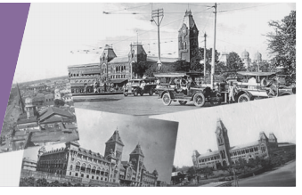
The evolution of towns (urban settlements) has occurred in different ways and in different stages. Towns flourished since pre-historic times in India. Towns in India can be classified into ancient towns, medieval towns and modern towns.
In ancient times, towns emerged in and around of residential places of kings and its location easily accessible to sea and rivers for trade. Most of them developed as administrative, religious and cultural centres. Harappa, Mohenjadaro, Varanasi, Allahabad and Madurai are well-known ancient towns.
During medieval times most of the towns developed as headquarters of principalities and kingdoms. They functioned either fort city or port city. Important among them are Delhi, Hyderabad, Jaipur, Lucknow, Agra and Nagpur.
With the arrival of Europeans brought about new changes in the development of towns. They first developed some coastal towns such as Surat, Daman, Goa and Pondicherry. The British after consolidated their power in India developed three main cities - Mumbai, Chennai and Kolkatta as the administrative headquarters and trading centres. With the extension of domination they developed new towns, depending on its location, purpose and resources. The newly developed towns are known differently as hill towns, industrial towns, court towns, railway station towns, cantonments and administrative towns. Unique features of urbanisation under the British
In the beginning of eighteenth century, the policies of the British proved harmful to the process of urbanisation. Later, the economic policies followed by the British led to the rapid transformation of India’s economy into a colonial economy and development of cities.
With the help of one–way free trade predominance of British, Indian manufacturing industries were destroyed. The effect of this wholesale destruction of the Indian manufacturing industries, led to the ruin of the millions of artisans and craftsman. There was a sudden collapse of the urban handicrafts industry which had for centuries made India’s name in the markets of the entire civilised world.
Towns and cities long famed for their specialized products gazed continually shrinking market. As a result, old populous manufacturing towns such as Dacca, Murshidabad, Surat and Lucknow lost their previous importance. The entire industrial structure crashed down under stiff competition of imported goods.
The traditional industrial base of Indian cities, made by the indigenous handicraft production was destroyed by Industrial revolution. The high import duties and other restrictions imposed on the import of Indian goods into Britain and Europe led to the decline of Indian industries. Thus, India became the agricultural colony of Britain.
The transformation of India’s economy into a colonial one – a market for the manufactures and source for the supply of the raw materials to her industries hit hard the industrial and commercial base of a number of towns.
The gradual erosion of king’s power led to the demise of towns associated with their rule. Agra once an imperial city in the first quarter of 19th century was surrounded by extensive ruins all around. The native rulers lost their kingdom to the British by means of various policies of the colonial power.
Another factor which contributed to the decline of the urban centres of the pre- British period was the introduction of the network of railroads in India since 1853. The introduction of the railways resulted in the diversion of trade routes and every railway station became a point of export of raw materials. The railways enabled British manufactures to reach every nook and corner of the country and uprooted the traditional industries in the villages of the country.
British developed new centres of trade like Calcutta, Madras and Bombay on the eastern and western coastal areas. Madras (sixteen thirty nine) Bombay (sixteen sixty one) and Calcutta (sixteen ninety), cities which the British largely created and fortified. All those were earlier fishing and weaving villages. Here they built their homes, shops and churches as well as their commercial and administrative headquarters.
From the mid-eighteenth century, there was a new phase of change. As the British gradually acquired political control after the Battle of Plassey in seventeen fifty seven, and the trade of English East India company expanded.
A new trend of urbanisation began in the latter half of the nineteenth century as a result of the opening of Suez Canal, introduction of steam navigation, construction of railways, canals, harbours, growth of factory industries, coal mining, tea plantation, banking, shipping and insurance. Changes in the networks of trade were reflected in the development of urban centres.
Box item
An urban area is one that has a high population density engaged in occupations other than food production, living in a highly built environment.
The British arrived in India for trading. Madras, Calcutta and Bombay became the important ports. They played important role in trade. These cities became the prominent commercial areas with tall European – styled buildings. The English East India Company built its factories and fortified them for the protection for their settlement. Fort Saint. George in Madras and Fort William in Calcutta were the best examples.
table-Colonial Urban Development
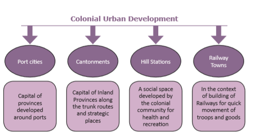
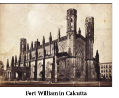
The British occupied the Indian territory and political power by their military force. So they needed strong military camps and established the cantonments. The cantonments were thus an entirely new kind of urban centres. Army people began to live in these places and gradually they were grown up a city. For e.g. Kanpur, Lahore.
Hill stations were distinctive features of colonial urban development. Although Hill stations were not unknown, prior to their founding by the British in India, they were few and had a small population and were often visited for specific purpose. For e.g. Srinagar was a Mughal recreational centre, Kedarnath and Badrinath were Hindu religious Centres. The British coming from a cool temperate climate, found the Indian summer season inhospitable. So the cool climate of Indian hills was seen as protective and advantage. It protected the Europeans from hot weather and epidemics. So they built up the alternative capitals in cool areas, like Darjeeling was the alternative of Calcutta, Dehradun was the alternative of Delhi. Hill stations became strategic places for billeting troops, guarding frontiers and launching campaigns. Hill stations were developed both in North and South India, example. Simla, Nainital, Darjeeling, Ootacamund and Kodaikanal. Simla (Shimla) was founded during the Gurkha war (1814-16). Darjeeling was wrested from the rulers of Sikkim in 1835. These hill stations were also developed as Sanatoriums (places for soldiers for rest and recovery from illness). The introduction of railways made hill station more accessible.
Railway towns were also a type of urban settlements and were established in Eighteen fifty three after the introduction of railways by the British. By the nature of railway transport, all the towns were located on the plains. Example. Delhi, Mumbai, Kolkatta.
The development of local government in the British India may be traced in three distinct phases.
Municipal government in India has been in existence since 1688 with the formation of Madras Municipal Corporation with a Mayor. Sir Josiah Child, one of the Directors of the East India Company was responsible for the formation of the Corporation. The Charter Act of 1793, established Municipal administration in the three presidency towns. According to the provisions of the Act of eighteen fifty, municipalities were formed in North Western Frontier provinces, Oudh and Bombay. Lord Mayo’s famous Resolution of eighteen seventy intended to afford opportunities for the development of self-government.
Ripon’s Resolution on local Self – Government was a landmark in the history of local self-government. So Ripon is rightly regarded as the Father of Local Self – Government in India and his Resolution as the Magna–Carta of Local Self-Government.
The Government of India Act of 1919 introduced Dyarchy in the provinces. The Government of India Act of 1935 introduced Provincial Autonomy. With the attainment of Independence in 1947 India had the unique opportunity of making and moulding local government to meet the needs of the free nation.
Towards the close of eighteenth century, a Parliamentary statute authorized the Governor General to appoint justices of the peace in these towns. After various trials a system of government was evolved for the three presidency towns which had the essential features like a large corporation with elected members, a strong independent executive authority with adequate safeguards for checking accounts and statutory provision for the performance of essential duties such as sanitation and water supply and collection of revenue etc.
The beginning of the city of Madras goes back to the earliest stages of British commercial enterprise in India. The English East India Company was started in 1600 A.D(C.E). Twelve years later, a Factory was set up at Surat on the West coast. Subsequently the search for textiles brought British merchants to have port on the east coast.
Box item
Presently Fort Saint. George is the power centre of Tamil Nadu State Government, extending across 172 squares KiloMeter (66 square miles)
The English, after some efforts secured the privilege of building a factory at Masulipatnam. It was well protected from the monsoon winds. But then Masulipatnam was in the throes of a famine. In spite of every assurance of protection, English trade did not thrive at that place.
Then the English traders looked for a new site. Francis Day, the member of the Masulipatnam council and the chief of the Armagon Factory, made a voyage of exploration in 1637 with a view to choose a site for a new settlement. At last, he was given the offer to choose Madrasapatnam. Francis Day inspected the place and found it favourable to set up factory.
The official grant for the land was given by Damarla Venkatapathy Nayak, the deputy of the Raja of Chandragiri (12 kilometer west of Tirupathi). Damarla gave British a piece of land between Cooum river and the Egmore. In 1639 the deed was signed by English East India Company’s Francis Day accompanied by his interpreter Beri Thimmappa and superior Andrew Cogan. By this Francis Day and Andrew Cogan (the chief of the Masulipatnam Factory), was granted permission to establish a factory – cum - trading post and a fort at Madrasapatnam in 1639. This fortified settlement came to be known as Fort St. George settlement. It is otherwise referred to as the White Town. While the nearby villages inhabited by local population was called as Black Town. Collectively the White Town and the Black Town were called Madras.
Damarla Venkatapathy gave the English the grant of Madrasapatnam. He was under the control of Venkatapathy Rayalu, the Rajah of Chandragiri. Venkatapathy was succeeded by Srirangarayalu in 1642. He issued a new grant to English in 1645 called Srirangarayapatnam. Venkatapathy desired that the name Chennapatnam should be given to the new Fort and settlement of the English after his father Chennappa Nayak. But the English preferred to call the two united towns by the name of Madrasapatnam.
Chennai was once a group of villages set amidst palm fringed paddy fields until two English East India Company merchants visited there. Raja Mahal in Chandragiri palace, where Sir Francis Day of the East India Company was granted land in 1639 in order to set up factory which later came to be known as Madras. This first factory was completed on St. George’s Day, 23 April 1640 and named Fort St. George. Day and Cogan were jointly responsible for the construction of Fort St. George. This was the East India Company’s principal settlement until 1774.
The Madras presidency was an administrative sub division which was referred to as the Madras province. The Madras presidency during the British regime covered a vast exopause of the southern part of India that encompasses modern day Tamil Nadu, the Lakshadweep Island, Northern Kerala, Rayalaseema, coastal Andhra, districts of Karnataka and various districts of southern Odisha.
After independence in 1947 the Madras presidency became the state of Madras and the other regions that were a part of the erstwhile presidency were constituted in separate states of Andhra Pradesh, Kerala and Mysore under the States Reorganisation Act, 1956. Later on in 1969 the State of Madras was rechristened as Tamil Nadu. On 17th July 1996, Madras was officially renamed as Chennai.
Box items
The first building to be seen on entering the Fort through the Sea Gate is the seat of the Government of Tamil Nadu. These impressive buildings built between 1694 and 1732 are said to be among the oldest surviving British Construction in India.
Dalhousie Square in Calcutta and Fort St. George in Madras were close to the central commercial area and had massive buildings which were British variants of Roman styles.
Bombay was initially seven islands. It was under the control of the Portuguese from 1534 onwards. Portuguese king gave it as a dowry to Charles II of England when he married the former’s sister in 1661. King leased it to the East India Company. The city of Bombay began to grow when the East India Company started using Bombay as its main port in Western India. In 1687, the English East India Company transferred its headquarters from Surat to Bombay.
In 1690, the English merchants founded a settlement at Sutanati. In 1698, they secured Zamindari rights over Sutanuti, Calcutta and Gobindpur. The company established Fort William in Calcutta. Calcutta became Presidency with a Governor and Council to manage its affairs.
The British empire gradually consolidated and established an elaborate spatial structure of administration with an imperial capital, provincial capitals and district headquarters. The new rulers brought new officials, new institutions and new structure to these towns with a kacheri, cantonment, police station, jail treasury. Public garden, post office, schools, dispensary and above all a municipal committee.
Thus in course of time, administrative headquarters emerged as the most important towns and cities of the country. For example, by the beginning of 20th century, Calcutta, Bombay and Madras had become the leading administrative commercial and industrial cities of India. These cities became the central commercial area with buildings of European style. Sub urban railways, tram car and city buses gave the colonial cities a new look and status.
Cantonment |
a military station in british India |
இராணுவ முகாம் |
Urbanisation |
the process of making an area more urban |
நகரமயமாதல் |
Municipality |
a town or district that has local government |
நகராட்சி |
Dyarchy |
government by two independent authorities |
இரட்டையாட்சி |
Rechristened |
give a new name to |
பெயரிடப்பட்டது |
Treasury |
a place or building where treasure is stored |
கருவூலம் |
1) |
Bombay |
- |
Religious centres |
2) |
Cantonment towns |
- |
hill stations |
3) |
Kedarnath |
- |
Ancient town |
4) |
Darjeeling |
- |
seven island |
5) |
Madurai |
- |
Kanpur |
Reason: The one-way free trade policy followed by British and the Industrial revolution destroyed Indian indigenous industries.
Reason (R): They found the Indian summer inhospitable.
ICT CORNER
Urban changes during the British period
Through this activity you will visualize the historical atlas of the world
Step – 1 Open the Browser and type the URL given below (or) Scan the QR Code.
Step – 2 Click the play button in left side on the screen
Step – 3 Scroll down to explore the pictorial map with descriptions
Web URL: https://www.zum.de/whkmla/region/india/xpresbengal.html
*Pictures are indicatives only. *If browser requires, allow Flash Player or Java Script to load the pag
To acquaint ourselves with
Generally human society is constantly changing with additions, assimilations and omissions from within and outside. Women constitute half of the population. Therfore it is imperative to have a historical understanding of the status of women through the ages.
The position of women diff ered with regional variations. In early Vedic period women were respected. But with the passage of time their status in the society found deteriorated, particularly aft er the settlement in Gangetic plain commenced. They were subjected to subjugation and subordination. New social practices, customs and systems which crept into the society in turn put limitations and restrictions on the liberty of women.
During the British Raj, many socioreligious reformers like Raja Rammohan Roy, Dayananda Saraswathi, Keshab Chandra Sen, Iswara Chandra VidyaSagar, Pandita Ramabai, Dr. Muthulakshmi Ammaiyar, Jyoti rao phule, Periyar E.V.R, Dr. Dharmambal were the prominent leaders who fought for the uplift ment of women. Raja Rammohan Roy’s eff orts led to the abolition of sati in 1829. Vidya sagar’s crusade for the improvement in the condition of widows, led to the passing of Widow Remarriage Act in 1856. The reformers rightly realized that female education as an emancipating agent in eradicating social evils. So they started girls’ schools in various parts of the country, which brought signifi cant changes in the lives of women.
Women played an important part in Indian Freedom struggle. Until independence, there was no radical changes in the status of women. In independent India, last few decades have witnessed the all round development of women. Women are now making their presence felt in every walk of life.
In the ancient Indus civilization of India, evidences show the worship of the mother goddess. Hence, the adoration for the mother is evident during that period. During the Rig Vedic period, it is believed that the position of wife was honoured and women’s position was acknowledged, especially in the performance of religious ceremonies.
During later Vedic age witnessed a transitional development in the status of women restricting her role in the social life except in the performance of religious sacrifices. Her social and political freedom was restricted. Sati became popular during the later Vedic period where the widows either chose for themselves or were forced to jump into the pyre of their husbands. The patriarchal system became rigid. Women were denied to study Vedic scriptures.
The position of women in the society further deteriorated during the medieval period and they suffered from many social evils such as sati, child marriages, female infanticide, and slavery. Normally monogamy was in practice but among the rich polygamy was prevalent. ‘Sati’ was in practice particularly among the royal and upper strata of the society. Widow re-marriage was rare. Devadasi system was in practice in some parts of India. Among the Rajputs of Rajastan, the Jauhar was practiced. The condition of widow became miserable during the medieval period. But we don’t ignore the fact that the Mughal ruler Akbar attempted to abolish sati. In fact very little attention was paid to female education.
Box item
Jauhar refers to the practice of collective voluntary immolation by wives and daughters of defeated Rajput warriors, in order to avoid capture and dishonour.
In spite of general determination, we can find some exceptions Razia sultana, Queen Durgavati, Chand bibi, Nurjahan, Jahannara, Jijabai and Mira bai.
During medieval times Women’s education was not completely ignored, though no regular separate school seems to have existed. Female education was informal. Girls usually had their lessons from their parents in their childhood. The rich appointed tutors to teach their daughters at home. The daughters of Rajput chiefs and Zamindars studied literature and philosophy.
For centuries women in India had been subordinated to men and socially oppressed. The major effect of national awakening in the nineteenth century was seen in the field of social reform. The enlightened persons increasingly revolted against rigid social evils and outdated customs. Numerous individuals, reform societies and religious organisations worked hard to spread education among women, to encourage widow remarriage, to improve the living conditions of widows, to prevent marriage of young children, to enforce monogamy and to enable middle-class women to take up professions or public employment.
In the beginning of nineteenth century female literacy was extremely low when compared to male literacy. The Christian missionaries were the first to set up the Calcutta Female Juvenile Society in 1819. The Bethune school was founded in 1849 by J.E.D. Bethune, who was the president of the council of education in Calcutta.
Charles Wood’s despatch on education in 1854 laid a great stress on the need for female education. Indian Education Commission (Hunter) of 1882 recommended to start primary schools for girls and teacher-training institution and suggested special scholarships and prizes for girls. In 1880’s Indian women began to enter universities. They were also trained to become doctors and teachers. They began to write books and magazines. In 1914 the women’s medical service did a lot of work in training mid-wives. In the 1890s D.K. Karve established a number of female schools in Poona. Professor D.K. Karve, Pandita Rama bai, made sincere effort to emancipate women through education was really remarkable. The Indian women’s university was started by Professor. D.K. Karve in 1916. It was an outstanding institution imparting education to women. In the same year Lady Harding Medical College was started in Delhi.
Female infanticide was another in human practice afflicting the nineteenth century Indian society. It was particularly in vogue in Rajputana, Punjab and the North Western Provinces. It was mainly to avoid economic burden.
Factors such as family pride, dowry system the fear of not finding a suitable match for the girl child were some of the major reasons responsible for this practice. Therefore, immediately after birth, the female infants were being killed.
The company administration in India took steps to ban this practice by passing the Bengal Regulatory Act 21 of 1795, the Regulating Act of 1802 and the Female Infanticide Act of 1870.
Female foeticide is also an inhuman practice which cuts across the caste, creed, class and regional boundaries. Whether it is female infanticide or female foeticide the prime motive remained the same. In order to ban the female foeticide and sex-determination the central Government passed various Acts.
The practice of child marriage was another social disgrace for the women.
Box item
Akbar prohibited child marriage and made it obligatory for the parents to obtain the approval of both the bride and the bridegroom before the marriage. He prescribed 14 years as the age of constant for girls and 16 years for boys.
In 1846, the minimum marriageable age for a girl was only 10 years. The native marriage Act was passed in 1872. It fixed the minimum marriageable age of girls at 14 and boys at 18.
In 1930, the Central Legislative Assembly passed Rai Saheb Harbilas Sarada’s child Marriage Bill fixing the minimum marriageable age for boys at 18 and 14 for girls. It was later amended to 18 for girls and 21 for boys according to Hindu Marriage Act nineteen fifty five.
Sati was social evil that prevailed in Indian society especially among the Rajputs. Earlier it was a voluntary act but later by the relatives forced the widow to sit on the funeral pyre. The Italian traveler, Niccolo Conti, who visited Vijayanagar about the year A.D. (C.E) 1420, notes that ‘the inhabitants of this region marry as many wives as they please, who are burnt with their dead husbands’.
In the early years of 19th century, sati was in practice in various Parts of Bengal, western India and southern India. In 1811, Jagan Mohan Roy, brother of Rammohan Roy, passed away and his wife was burnt along with him. Rammohan Roy was moved to the extreme at the sight of it and took an oath that he would have the cruel practice abolished by law. He carried on a continuous agitation through press and platform for the abolition of Sati.
Raja Rammohan Roy published his tracts in 1818-20, making the point that the rite of Sati was not enjoined by the Sastras. This material was used by the Serampore missionaries to shatter the generally accepted view that Sati was an integral part of the Hindu religion. Orthodox Hindu opinion against the abolition was advocated by Radhakanta Deb, and Bhawani Charan Banerji.
When Lord William Bentinck took up the question of Sati, he found that the abolition had been recommended by the judges of the criminal courts. He passed Regulation 17 on December 4, 1829 ‘declaring the practice of Sati or burning or burying alive the widow of Hindus, illegal and punishable by Criminal Courts’. Similar legislative measures were enacted soon after in Bombay and Madras.
The word Devadasi (Sanskrit) or Devar adiyal (Tamil) means “servant of God” dancing girl dedicated to the service of god in a temple. Devadasi system was a social evil. There was also tradition of dedicating one daughter to the temple. In addition to taking care of the temple, they learnt and practiced Bharatha Natiyam and other classical traditional Indian arts.
Later on they were ill treated and humiliated. The Devadasis lost their dignity, sense of pride, self-respect and honour.
Doctor. Muthulakshmi Ammaiyar who was the first woman doctor in India, dedicated herself for the cause of abolishing the cruel practice of Devadasi system from Tamil Nadu. Appreciating her role in the agitation against Devadasi system she was nominated to the Tamil Nadu legislative council in 1929. Periyar E.V. Ramasamy was instrumental in passing the “Devadasi abolition bill”. Dr. Muthulakshmi Ammaiyar proposed the bill to the Madras legislative council in 1930.
Moovalur Ramamirdham was yet another woman who fought for the emancipation of the Devadasi. With the continuous moral support rendered by Rajaji, Periyar and Thiru Vee Ka, she raised slogan against this cruel practice. As a result the government passed the “Devadasi Abolition Act”.
Box item
The Madras Devadasi Act was a law that was enacted on 9th October 1947. The law was passed in the Madras presidency and gave Devadasis the legal right to marry and made it illegal to dedicated girls to Indian temples.
From the second half of the nineteenth century, a number of social reformers and social reform movements sought to promote the upliftment of women by giving them education, raising their marriageable age and taking care of widows, as well as to remove the rigidity of caste and raise the suppressed class to a status of equality. The reformers who led the movements were the forerunners of modern India.
There were some enlightened Indians who supported the British attempt to reform the oppressive social order of India. The first was the abolition of sati by law, on humanitarian grounds. Raja Rammohan Roy, the pioneer of Indian social reform movement was a casteless crusader of sati after having seen this practice in the case of his own sister-in-law. He started his camping against this in human evil practice. Influenced by the ruthless attack of the movement led by Rammohan Roy the British government declared this act as “culpable Homicide”. Raja Rammohan Roy is most remembered for helping Lord William Bentinck to declare the practice of Sati a punishable offence in 1829. He also protested against the child marriage and female infanticide. He favoured the remarriage of widows, female education and women’s right to property. Thus the evil practice of sati on any scale was wiped out.
Ishwar Chandra Vidhyasagar carried on the movement for female education, widow remarriage and abolition of polygamy in Bengal. He submitted petitions to this effect to the Indian Legislative Council and to the passing of the Hindu Widow Remarriage Act in 1856. His son Narayanachandra set an example to others by marrying a widow of his choice. To promote female education, Vidhyasagar founded several girls’ schools in the districts of Nadia, Midnapur, Hugli and Burdwan in Bengal.
Kandukuri Veeresalingam Pantulu was the earliest champion in South India of women’s emancipation. He published a journal viveka vardhani. He opened his first girls’ school in 1874 and made widow remarriage and female education the key points of his programme for social reform.
d) M.G. Ranade and B.M. Malabari
In Bombay presidency, M.G. Ranade and B.M. Malabari carried on the movement for the upliftment of women. In 1869, Ranade joined the Widow Remarriage Association and encouraged widow remarriage and female education and opposed child marriage. In 1887, he started the National Social Conference, which became a pre-eminent institution for social reform. In 1884, B.M. Malabari, a journalist, started a movement for the abolition of child marriage. He published pamphlets on this subject and appealed to the government to take action.
In 1905, Gopal Krishna Gokhale started the Servants of India Society which took up such social reform measures as primary education, female education and depressed classes’ upliftment. The spread of female education further led to the participation of women in the freedom struggle.
Periyar E.V.R. was one of the greatest social reformers of Tamil Nadu. He advocated women education, widow remarriage and inter-caste marriages and opposed child marriages.
Most of the reform movements like Brahma Samaj (1828), Prarthana Samaj (1867) and Arya Samaj (1875) were led by male reformers who set the limit of the freedom and development of women. Women reformers like Pandita Ramabai, Rukhmabai and Tarabai Shinde tried to extent further. In 1889, Pandita Ramabai opened Sarada Sadan (Home of Learning) for Hindu widows in Bombay. It was later shifted to Poona. Her greatest legacy was her effort, the first in India, to educate widows. Theosophical society was established at Chennai and Dr. Annie Besant who came from Europe and joined it. It also developed general social reform programme.
Dr. S. Dharmambal was another reformer who was very much influenced by the ideas of Periyar. She showed great interest in implementing widow remarriage and women education. Among ‘Moovalur Ramamirdham Ammaiyar’ raised her voice against Devadasi system along with Dr. Muthulakshmi Ammaiyar. In her memory, the government of Tamil Nadu has instituted the “Moovalur Ramamirdha Ammal Ninaivu Marriage assistance scheme”, a social welfare scheme to provide financial assistance to poor women as poverty was the root cause for all these evils. Thus women reformers also contributed a lot for winning their own rights.
Leading women realized the need of forming their own associations in order to safeguard their interests. As a result three major national women’s organizations – Women’s India Association, National Council of Women in India and the All India Women’s Conference were founded.
In the early anti-colonial struggle women played major roles in various capacities. Velunatchiyar of Sivaganga fought violently against the British and restored her rule in Sivaganga. Begum Hazrat Mahal, Rani Lakshmi Bhai of Jhansi led an armed revolt of 1857 against the British.
In the freedom struggle thousands of women came out of their homes, boycotted foreign goods, marched in processions, defied laws, received lathi charges and Courted jails. Their participation in the struggle added a new dimension of mass character.
Women in India now participate in all activities such as education, politics, medical, culture, service sectors, science and technology.
The constitution of India guarantees (Article 14) equal opportunity and equal pay for equal work.
The National policy for empowerment of women was passed under the National Policy on Education (1986), new programme was launched called Mahila Samakhya, its main focus was on empower of women. Reservation of 33 percent to women envisaged an improvement in the socio-political status of women.
The National Commission for women was set up January 1992. Its main functions are to review women related legislation and intervene in specific individual complaints of atrocities and denial of rights.
The following legislations have enhanced the status of women in matters of marriage adoption and inheritance
Legislation |
Provisions |
Bengal regulation of 21, 1804 |
Female infanticide was declared illegal |
Regulation of 17,1829 |
Practice of sati was declared illegal |
Hindus Widow’s Remarriage Act, 1856 |
It permitted widow remarriage |
The Native Marriage Act, 1872 |
The Child Marriage was prohibited |
The Sharda Act,1930 |
The age of marriage was raised for boys and girls |
Devadasi abolition Act, 1947 |
It abolished Devadasi system |
zamindar |
A Landowner |
பெரு நிலக்கிழார் |
mancipation |
free from social, or political restriction |
விடுதலை |
enlightenment |
the state of being enlightened |
அறிவொளி |
polygamy |
the custom of being married to more than one person |
பலதார மணம் |
reformer |
a person who makes changes to something in order to improve it |
சீர்திருத்தவாதி |
1) |
Theosophical society |
- |
Italian traveler |
2) |
Sarada Sadan |
- |
Social evil |
3) |
Wood’s Despatch |
- |
Annie Besant |
4) |
Niccolo Conti |
- |
Pandita RamaBhai |
5) |
Dowry |
- |
1854 |
Which of the statement (s) given above is/or correct?
Reason(R): He wiped out the evil practice of Sati form the Indian Society
Have you ever noticed any mountains or rocks nearby your location or during your travel? Have you ever been to any hill station during your vacation? Do you know how they originated on the earth surface? Do you know what kinds of material are used in the construction of temples, buildings, roads, flyovers etc. In this lesson, we will learn about rocks and soils.
In lower classes, we have studied about four realms of the earth, namely lithosphere, hydrosphere, atmosphere and biosphere. Lithosphere is the upper most and significant layer of the earth. It is composed of solid rocks and unconsolidated materials. The literal meaning of lithosphere is “The sphere of rock”.
Do you know?
Petrology is a branch of geology which deals with the study of rocks. ‘Petrology’ is derived from the Greek word “Petrus” refers to rock and “Logos” refers to study
Find out
What is the base of the house made up of?
The rocks are the solid mineral materials forming a part of the surface of the earth and other similar planets. The earth’s crust (Lithosphere) is composed of rocks. A rock is an aggregate of one or more minerals. Rock is an important natural resource and is found in solid state. It may be hard or soft in nature. An estimation reveals that there are 2,000 different types of minerals found on the earth surface out of which only 8 basic minerals commonly found all over the earth. Minerals are chemical substances which exist in nature. They may occur either in the form of elements or compounds.
According to the mode of formation the rocks are classified into three types as follows.
The igneous rocks are formed by the solidification of molten magma. These rocks are also called as the ‘Primary Rocks’ or ‘Parent Rocks’ as all other rocks are formed from these rocks.
Do you know?
The word Igneous is derived from the Latin word ‘Ignis’ means ‘fire’
Characteristics of Igneous Rocks
Types of Igneous Rocks
Igneous Rocks are of two types. They are:
Can you visualize the lava comes out from a volcano? Lava is actually a fiery red molten magma comes out from the interior of the earth on its surface. After reaching the earth surface the molten materials get solidified and form rocks. Rocks formed in such a way on the crust are called Extrusive igneous rocks. These rocks are fine grained and glassy in nature due to rapid solidification. Basalt found in the north western part of peninsular India is the example for this type of rock.
The molten magma sometimes cools down deep inside the earth’s crust and becomes solid. The rocks formed this way is called ‘Intrusive Igneous Rocks’. Since the cool down slowly and form crystals. Hence they are called 'crystalline rocks'. Intrusive Igneous rocks are two types. They are, 1. Plutonic rocks 2. Hypabysal rocks. The deep seated rocks are called 'Plutonic rocks' and the ones formed at shallow depths are called 'Hypabysal rocks'. Granite, Diorite and Gabbro are the example of plutonic rocks and dolerite is an example of hypabysal rocks.
Box item
Some major Active Volcanoes: Mount Vesuvius, Mt. Stromboli and Mt. Etna in Italy and Mauna Loa and Mauna Kea in Hawaii Islands.
The word ‘Sedimentary’ has been derived from Latin word ‘Sedimentum’ means settling down. The sedimentary rocks are formed by the sediments derived and deposited by various agents (wind, Running water, Glaciers). Due to high temperature and pressure, the undisturbed sediments of long period cemented to form sedimentary rocks. Sedimentary rocks consist of many layers which were formed by the sediments deposited at different periods. As it consists of many strata, it is also known as ‘Stratified rocks’.
Do you know?
Sedimentary rocks are the important source of natural resources like coal, oil and natural gas.
Characteristics of Sedimentary rocks
Do you know?
Oldest sedimentary rocks of the world has been identified in Greenland and estimated as 3.9 billion years old.
Types of Sedimentary Rocks
These rocks are formed as a result of the decomposition of dead plants and animals. It contains fossils. Chalk, Talc, Dolomite and Limestone rocks are of this category.
These rocks are formed due to the disintegration of igneous and metamorphic rocks. The natural agents erode and transport these rocks and deposit them at some places. After a long period of time, they cemented to form rocks. Sandstone and Shale are the examples of rocks of this type.
These are formed by precipitating of minerals from water. It is formed usually through evaporation of chemical rich solutions. These rocks are also called as evaporates. Gypsum is an example of this kind.
The word Metamorphic is derived from two Greek words “Meta” and “Morpha”, Meta means change and Morpha means shape. When Igneous and sedimentary rocks subject to high temperature and pressure, the original rocks get altered to form a new kind of rock called metamorphic rocks. Metamorphism is of two types. They are
If the change in the rocks is mainly caused by high temperature, the process is called as 'Thermal Metamorphism'.
If the change in the rock is mainly caused by high pressure, the process is called as 'Dynamic Metamorphism'.
Do you know?
One of the world wonders Taj Mahal in India was built with White Marbles a metamorphic rock.
Formation of Metamorphic Rocks from Igneous rocks
Formation of Metamorphic Rocks from Sedimentary rocks
Characteristics of Metamorphic Rocks
Igneous rocks are the primary rocks formed first on the earth. These rocks are weathered, eroded, transported and deposited at some places to form sedimentary rocks. The Igneous and Sedimentary rocks are changed into metamorphic rocks under the influence of temperature and pressure. The metamorphic rocks are also get disintegrated and deposited to form sedimentary rocks. Formation of igneous rocks take place when there is an outflow of molten materials. Like this, the rocks of the earth crust keeps on changing from one form to another form under various natural forces and agents. The endless process is referred as Rock Cycle.
Do you know?
Marble are the rocks commonly used for construction and sculpture works. They are also widely used for making beautiful statues and decorative items such as vase, tiny gift articles etc.,
Rocks have been used by mankind throughout the history. Rocks are highly valuable and important to almost all aspects of our economy. The minerals and metals in rocks have been found essential to human civilization. Rocks are used for many purposes in our life and some of them are given below
Rocks are useful for making
Activity
Collect different types of rocks and display them in the classroom
Soil is a mixture of organic matter, minerals, gases, liquids and organisms that together support life. Soil minerals form the basis of soil. It forms on the surface of the earth. It is known as the ‘skin of the earth’. Soils are formed from rocks (parent material) through the processes of weathering and natural erosion. Water, wind, temperature change, gravity, chemical interaction, living organisms and pressure differences all help break down parent material. It leads to the formation of loose material. In course of time, they further break down into fine particles. This process release the minerals locked in the rock fragments. Later on, the vegetative cover which develop in that region forms humus content in the soil. This way the soil gets matured gradually.
Do you know?
World Soil Day is observed on 5th December, every year
The basic components of soil are mineral, organic matter, water and air. It consists of about 45% mineral, 5% organic matter, 25% of water and 25% air. It is only a generalized fact. The composition of soil varies from place to place and time to time.
The soil profile is defined as the vertical section of the soil from the ground surface and extends downwards.
Activity
Collect sample of soils from your place and exhibit in the class room.
Soils are classified on the basis of their formation, colour, physical and chemical properties. Based on these, soil is classified into six major types. They are: Alluvial soil, Black soil, Red soil, Laterite soil, Mountain soil, Desert soil
These soils are found in the regions of river valleys, flood plains and coastal regions. These are formed by the deposition of silt by the running water. It is the most productive of all soils. It is suitable for the culitivation of sugarcane, jute, rice, wheat and other food crops.
These soils are formed by weathering of igneous rocks. Black soil is clayey in nature. It is retensive of moisture. It is ideal for growing cotton.
These soils are formed by weathering of metamorphic rocks and crystalline rocks. The presence of iron oxide makes this soil brown to red in colour. It is usually found in semi-arid regions. It is not a fertile soil. It is suitable for millet cultivation.
These are the typical soils of tropical regions. These soils are found in the regions which experienced alternate wet and dry condition. As these soils are formed by the process of leaching, it is in fertile. It is suitable for plantation crops like tea and coffee.
These soils are found over the slopes of mountain. Soils in these regions are thin and acidic. However characteristic of soil differs from region to region based on the altitude.
These are sandy soil found in the hot desert regions. These soils are porous and saline. Since it is infertile agriculture in these soils are not so successful.
Soil erosion is the removal or destruction of the top layer of soil by natural forces and human activities. Soil erosion reduces the fertility of soil which in turn reduces the agricultural productivity. Running water and wind are the major agents of soil erosion. Sheet erosion, Rill erosion and Gully erosion are the major types of soil erosion.
This layer is dominated by organic material (leaves, needles, twigs, moss and lichens).
It is a part of top soil, composed of organic matter mixed with mineral matter.
E-Stands for elevated layer. This layer is significantly leached of clay, iron, and aluminum oxides, which leaves a concentration of ore.
This layer reflects the chemical or physical alteration of parent material. Thus iron, clay, aluminum and organic compounds are found accumulated in this horizon.
Partially weathered parent material accumulates in this layer.
This layer consists of un weathered part of bed rock.
Soil conservation is the process of protecting the soil from erosion to maintain its fertility. The methods that are widely practiced for conserving soil are afforestation, controlled grazing, construction of dams, Crop rotation, Strip farming, contour ploughing, terrace farming, checking shifting cultivation, wind break etc.,
Box item
How long does it take to form soil?
The time needed to form a soil depends on the Climate. The environments which is characterized by mild climate, takes 200- 400 years to form one cm of soil and in wet tropical area, soil formation is faster and takes upto 200 years. To become a well matured soil, it takes about 3000 years.
Soil is one of the important natural resource. It is a basic requirement for plant growth and supports various life forms on the earth.
Rocks and soils are the important renewable natural resources. Both of them play an important role in everyday life of human beings as well as economic development. Nowadays rock-based companies are in increase which provide employment to a sizeable population. Soils attract human settlement and other economic activities. As India is an agricultural country, the proper management of soil resource will lead to sustainable food production besides its use for various other purposes. So, the soil resources must be conserved.
Crust |
Outermost layer of the earth |
புவியின்மேலோடு |
Lava |
Hot molten rock erupted from a volcano |
லாவா |
Magma |
Hot fluid or semi-fluid material found beneath the earth crust |
பாறைக் குழம்பு |
Rock cycle |
The continuous process of transformations of rocks from one form to another |
பாறை சுழற்சி |
1)
A. |
Granite |
1. |
Bed rock |
B. |
Soil layer |
2. |
Plutonic rock |
C. |
Barren island |
3. |
Strip farming |
D. |
Soil conservation |
4. |
Active Volcano |
A B C D
a) 2 1 4 3
b) 2 1 3 4
c) 4 3 2 1
d) 3 4 2 1
2)
A. |
Basalt |
1. |
Anthracite |
B. |
Limestone |
2. |
Extrusive igneous |
C. |
Coal |
3. |
Metamorphic rock |
D. |
Gneiss |
4. |
Sedimentary rock |
A B C D
a) 2 4 3 1
b) 2 4 1 3
c) 3 1 2 4
d) 3 1 4 2
Statement (2): Sedimentary rocks are formed by the sediments deposited at different points of time.
Rocks |
Mode of formation |
Characteristics |
Examples |
Uses
|
1 |
|
|
|
|
2 |
|
|
|
|
3 |
|
|
|
|
I C T CORNER
Rocks and Soils
Steps
• Open the Browser and type the URL given below (or) Scan the QR Code.
• Click the ‘Begin’ button, start your rock collection
• Click ‘Add to rock collection’ one by one
• Go to ‘identify rock types’ and play the game
Website URL: http://www.learner.org/interactives/rockcycle/index.html
Climate is one of the basic elements in the natural environment. It affects landforms, soil types, fauna and flora. It influences man to a large extent.
In a small village in Dharmapuri district, Tamil nadu, in the month of May, Yuktha enjoys her vacation with her brother and family. She always wears cotton cloths. Her mother makes food like porridge, buttermilk, lemonade, watermelon etc which suits to summer. At the same time (In May month) Tiya who lives in Auckland, New Zealand with her father and mother wear fleece jacket, jeans, gloves and socks. Her mother makes hot food like sandwich, salmon, oatmeal, soups etc. Yuktha celebrates Christmas with friends in winter, where as Tiya celebrates Christmas during summer. Can you think of why?
Yuktha and Tiya stay in two different hemispheres and have different way of life. This is because of the difference in weather condition of those places.
Weather and climate influence man’s activities like what we eat, wear, the house in which we live and work, farming, sailing, fishing, modern transport and even our play time etc. Hence one should have knowledge about the weather and climate. So, in this chapter we are going to learn about weather and climate, its elements and how they influence our lifestyle.
Do you know?
Earth's atmosphere is a layer of gases surrounding the planet earth and retained by the earth's gravity. It contains about 78% nitrogen, 21% oxygen, 0.97% argon, 0.03% carbon dioxide and 0.04% trace amounts of other gases and water vapour.
Weather is the day today conditions (state) of the atmosphere at any place as regards sunshine, temperature, cloud cover, wind fog condition, air pressure, humidity, precipitation and such other elements. It refers to short periods like a day, a week, a month or a little longer and as such the weather changes from time to time in a day and one period to the other in an year. In the morning the weather might be sunny with a clear sky in a place and evening there might be clouds and rain. Similarly the weather is cool in winter and hot in summer.
Find out
Do all the planets in the solar system have atmosphere?
We often hear people saying “Today the climate is good or bad”. It is incorrect to say like that. Instead it has to be said that the weather is good or bad. We could observe the television news readers saying weather report and not the climate report for e.g. cricket match have been postponed due to bad weather etc.
Climate is generally defined as the average conditions (state) of the weather of a place or a region. The average atmospheric conditions are determined by measuring the weather elements for a long period of time which is usually for 35 years. The elements of weather and climate are the same. The climate does not change often like weather.
Do you know?
The word Climate is derived from the ancient Greek word "Klimo" which means "Inclination".
Angle of the sun’s rays, the length of daytime, altitude, distribution of land and water bodies, location and direction of mountain ranges, air pressure, winds and ocean currents are the major factors which affect the weather and climate of a region.
The earth is spherical in shape. So, the sun’s rays fall unevenly on the earth’s surface. The Polar regions receive slanting sun’s rays. Hence there is little or no sunlight, thus there is an extreme cold winters. Vertical sun’s ray’s fall directly on regions around the equator hence the climate is very hot and almost no winters. The difference in temperature makes the air and water move in currents. Warm air rises and creates more space for air beneath, while cool air settles down.
Do you know?
Scientific study of weather is called Meteorology and the scientific study of climate is called climatology.
Discuss in the class room how altitude, distribution of land and water bodies, direction of mountain ranges, air pressure, winds and ocean currents affect weather/climate.
Temperature, rainfall, pressure, humidity and wind are the major elements of weather and climate.
Temperature is one of the key elements of weather and climate. The earth and its atmosphere get heated from the sun through insolation. The degree of heat present in the air is termed as temperature. Apart from sun’s rays, the heat in air also depends the atmospheric mass to a small extent. Temperature varies with time due to changes in the level of radiation which reach the earth surface. This is due to motions of the earth (The rotation and revolution) and inclination of the earth’s axis.
The temperature influences the level of humidity, the process of evaporation, condensation and precipitation.
Heat energy from solar radiation is received by the earth through three mechanisms. They are radiation, conduction and convection. The Earth's atmosphere is heated more by terriestrial radiation than insolation.
Box item
Temperature varies both horizontally and vertically. Temperature decreases with increasing height is known as Lapse rate which is 6.5degree celsius per 1000 meters in troposphere.
Do you know?
Distribution of weather elements are shown by means of Isolines on maps. Isolines are those which join the places of equal values. Isolines are given different names based on the weather element they represent.
Isotherm |
Equal temperature |
Isocryme |
Equal lowest mean temperature for a specified period |
Isohel |
Equal sunshine |
Isollobar |
Equal pressure tendency showing similar changes over a given time |
Isobar |
Equal atmospheric pressure |
Isohyet |
Equal amount of rainfall |
Latitude, altitude, nature of land, ocean currents, prevaling winds, slope, shelter and distance from the sea, natural vegetation and soil are the major factors which affect the distribution of temperature.
The temperature of a unit volume of air at a given time is measured in scales like Celsius, Fahrenheit, and Kelvin. Meteorologist measures the temperature by the Thermometer, Stevenson screen and minimum and maximum Thermometer. The energy received by the earth through insolation is lost by outgoing radiation. Atmosphere is mainly heated by outgoing radiation from 2 to 4pm. So, the maximum temperature is recorded between 2 and 4 pm regularly and minimum temperature is recorded around 4 am before sunrise.
The average of maximum and minimum temperatures within 24 hours is called mean daily temperature (87 degree F plus 73 degree F) by 2 equal to 80 degree F. Diurnal range of temperature is the difference between the maximum and minimum temperatures of a day. Annual range of temperature is the difference between the highest and lowest mean monthly temperatures of a year. The distribution of temperature is shown by means of Isotherms. Isotherms are imaginary lines which connect the same temperatures of different places.
The fact that the earth is spherical in shape results in different parts of the earth getting heated differently. Based on the heat received from the sun, Earth is divided into three heat zones. They are
It is a region between the tropic of cancer and the tropic of Capricorn. This region receives the direct rays of the sun and gets the maximum heat from the sun. This zone known as the torrid or the tropical zone.
This zone lies between the Tropic of cancer and the Arctic circle in the Northern Hemisphere and between the Tropic of Capricorn and the Antartic circle in the southern Hemisphere. This zone gets the slanting rays of the sun and the angle of the sun’s rays goes on decreasing towards the poles. Thus this zone experiences moderate temperature.
The frigid zone lies between the Arctic circle and the North Pole and between the Antartic circle and the South Pole. This region also known as Polar region. Since it receives the extremely low temperature throughout the year, these regions are covered with snow.
Highest Temperature ever recorded on the earth is 56.7°C (134°F). It was recorded on 10th July 1913 at Greenland Ranch of Death Valley, California, USA.
The lowest temperature ever recorded on the earth is minus 89.2 °C ( minus 128.6 °F; 184.0 K). It was recorded on 21st July, 1983 at Soviet Vostok Station in Antarctica.
Rain is a liquid water in the form of droplets that have condensed from atmospheric water vapour and then become heavy enough to fall under gravity. Rain is a major component of the water cycle and is responsible for depositing most of the fresh water on the Earth. It is the source of water for all purposes. There is a close relationship between the temperature and rainfall distribution. Generally, rainfall is high in the equatorial region and decreases gradually towards poles. Rainfall is measured by Raingauge.
The weight of air above a given area on the earth’s surface is called atmospheric pressure or air pressure. The air pressure is measured by Barometer. The standard air pressure at sea level is 1013.25mb. At the earth’s surface the pressure is 1.03kg.per sq cm. The variation in standard atmospheric pressure is found both horizontally and vertically. Based on the level of pressure, it is categorised into low pressure and high pressure. Low pressure area is an area in the atmosphere where the pressure is lower than its surrounding areas. In this situation, the wind from the surroundings blow towards the centre of low pressure. High pressure is an area of atmosphere where the barometric pressure is higher than its surrounding areas. In this case, the wind from the centre of high pressure blows towards the surrounding low pressure areas. Low pressure system is marked as “L” on weather map, whereas the high pressure system is marked as “H”. Low pressure systems are also called as a depression and cyclones. High pressure system is called anti cyclones. Low pressure leads to cloudiness, wind, and precipitation. High pressure leads to fair and calm weather. Isobar is used to show the distribution of air pressure.
Humans are not sensitive to small variation in air pressure. But the small variations in pressure that do exist largely determine the wind and storm patterns of the earth. The distribution of atmospheric pressure is controlled by altitude, atmospheric temperature, air circulation, earth rotation, water vapour, atmospheric storms etc.
Do you know?
Highest pressure ever recorded.
The highest ever air pressure at sea level was recorded at Agata, Russia on 31st December, 1968. The pressure was1083.8mb
Lowest pressure ever recorded
The lowest pressure of 870mb was recorded at Typhoon Tip, near Guam, Mariana Island in Pacific Ocean on 12th October, 1979.
Measuring air pressure
Meteorologist uses barometer/aneroid barometer to measure the air pressure. Barograms are used for recording continuous variation in atmospheric pressure.
Box item?
Why Do Your Ears Pop in Airplanes?
As you go up in an airplane, the atmospheric pressure becomes lower than the pressure of the air inside your ears. Your ears pop because they are trying to equalize or match the pressure. The same thing happens when the plane is on the way down and your ears have to adjust to a higher atmospheric pressure.
Humidity refers to the degree of water vapour present in the atmosphere in gaseous form in particular time and place. It ranges from 0-5 percent by volume in atmosphere. Climatically it is an important constituent of the atmosphere and its quantity depends on the level of temperature. So, the level of humidity decreases towards poles from equator. Humidity is expressed in different ways.
Specific humidity is a ratio of the water vapor content of the mixture to the total air content on a mass basis. It is expressed in grams of vapour per kilogram of air.
Absolute Humidity is the mass or weight of water vapour present per unit volume of air. It is expressed usually in grams per cubic meter of air.
Relative humidity is a ratio between the actual amount of water vapour present in the air and the maximum amount of water vapour it can hold at a given temperature. It is expressed as a percentage.
Generally, warm air holds more water vapour than the cold air. When relative humidity reaches 100%, the air gets saturated. In this condition the temperature is said to be at dew-point. Further cooling will condense the water vapour into the clouds and rain. Relative humidity affects human health and comfortness. Very high and very low humidity are injurious to health. It also affects the stability of different objects, buildings and electrical applications.
Measurement of Humidity
Hygrometer is used to measure the humidity. (which comprises wet and dry bulb-plate side by side in the Stevenson screen)
Find out
The effect of low and high humidity over Human beings in particular.
Do you know?
With decreasing air pressure, the availability of oxygen to breath also decreases. At very high altitudes, atmospheric pressure and available oxygen get so low that people can become sick and even die. Mountain climbers use bottled oxygen when they ascend very high peaks. They also take time to get used to the altitude as the quick move from high pressure to low pressure can cause decompression sickness. Aircraft create artificial pressure in the cabin which makes the passengers remain comfortable while flying.
The horizontal movement of air is called wind. Vertical movement of air is said as air current. The winds move from high pressure to low pressure. Unlike other elements a wind is made up of a series of gusts and eddies which can only be felt and not seen. Winds get their name from the direction from which they blow i.e, wind blows from south west is called southwest wind.
The wind systems are broadly categorized into three as follows.
Planetary Winds are the ones which blow almost in the same direction throughout the year. So, they are called as Permanent or planetary winds. Trade winds, Westerlies and polar easterlies are the types of prevailing winds. Seasonal winds are those which change their direction according to season in a year. They are called as monsoon winds. These winds blow from sea to land during summer and land to sea during winter. Local winds are the winds blow over a small area only during a particular time of a day or a short period of a year. Land and sea breezes are example of these winds.
The Beaufort scale is a scale for measuring wind speed. It is based on observation rather than accurate measurement. It is the most widely used system to measure wind speed today. The scale was developed in 1805 by Francis Beaufort, an officer of the Royal Navy and first officially used by HMS Beagle.
Do you know?
Al-Balakhi, an Arab Geographer collected climatic data from the Arab travellers and prepared the First climatic Atlas of the world.
Measuring wind direction and speed
Meteorologist measures wind direction using wind vane or weather cock. Wind speed is measured by anemometer. Wind rose is a diagram used to depict the direction and periods (No. of days) of prevailing winds on map. Meteorograph or triple register is an instrument which records wind speed and direction, sunshine and precipitation. It also provides graphic representation.
Do you know?
Brazil has a large area where the average wind speed is low. Gabon, Congo and DR Congo in Africa, Sumatra, Indonesia and Malaysia are the least windy places on earth.
Conduction |
Transfer of heat energy from one place to another through the substances that are in direct contact with each other |
வெப்பக்கடத்தல் |
Condensation |
The process in which the water vapour changes into liquid form. |
ஆவிசுருங்குதல் |
Eddies |
They are the wind circulation that develops when the wind blows over or adjacent to rough terrain, buildings, mountains or other obstructions. |
சுழற்ககாற்று |
Humidity |
The amount of water vapour in the air |
ஈரப்பதம் |
Insolation |
Incoming solar radiation |
சூரியக் கதிர்வீசல் |
Radiation |
The transmission of heat energy from one body to the other body without any medium is called radiation |
கதிர்வீச்சு |
1. |
Climate |
Locating and Tracking Storms |
2. |
Isonif |
Cyclone |
3. |
Hygrometer |
Equal Snowfall |
4. |
Radar |
Long Term Changes |
5. |
Low Pressure |
Humidity |
On the outline map of world mark, the following
Date |
|
|
|
Place and Time |
|
|
|
Temperature |
|
|
|
Barometric pressure |
|
|
|
Precipitation type and amount |
|
|
|
Wind direction |
|
|
|
Wind speed |
|
|
|
Source of information |
|
|
|
I C T CORNER
Weather and Climate
Step 1 Open the Browser and type the URL given below (or) Scan the QR Code.
Step 2 Enter your location in search box (Ex.Tiruchirappalli)
Step 3 Use the Drag flag and zoom in your area.
Step 4 Go to menu in right side and select from the list to know the weather of your area (Ex.Temperature) Website URL: https://www.windy.com Mobile: https://play.google.com/store/apps/details?id=com.windyty.android
Water is one of the most important elements on the earth. All plants and animals need water for survival. Apart from drinking, water is required for domestic, agriculture, industrial purposes etc. Water is very essential for carrying out almost all economic activities. So, water is an indispensible element without which life form on the earth is not possible.
About 71 Percentage of the earth's surface is covered by water. The quantity of water present on the earth is about 326 million cubic miles. It is hard to visualise this massive quantity of water. Most of the water on the earth is saline and is found in seas and oceans. The salt water constitutes about 97.2 Percentage and the fresh water is only about 2.80 Percentage. Out of this 2.80 Percentage, about 2.20 Percentage is available as surface water and the remaining 0.60 Percentage as groundwater. From this 2.20 Percentage of surface water, 2.15 Percentage is available in the form of glaciers and icecaps, 0.01 Percentage in lakes and streams and the remaining 0.04 Percentage is in other forms. Only about 0.60 Percentage of the total ground water can be economically extracted with the present drilling technology.
Water resources are useful or potentially useful to humans. Water in India is available in three sources. They are precipitation, surface water and groundwater.
Table 1: Estimated Volume of Water on the Earth’s Surface
Water Source |
Volume of water (Cubic Miles) |
Percentage to Total Water |
Oceans, Seas, & Bays |
321,000,000 |
96.54 |
Ice caps, Glaciers, and Permanent Snow |
5,773,000 |
1.74 |
Groundwater |
5,614,000 |
1.69 |
Soil Moisture |
3,959 |
0.001 |
Ground Ice and Permafrost |
71,970 |
0.022 |
Lakes |
42,320 |
0.013 |
Atmosphere |
3,095 |
0.001 |
Swamp Water |
2,752 |
0.0008 |
Rivers |
509 |
0.0002 |
Biological Water |
269 |
0.0001 |
(Source: Shiklomanov, 1993)
Hydrology is the science which deals with the various aspects of water such as its occurrence, distribution, movement and properties on the planet earth. Availability of water on the earth is not uniform. Some places are very rich and some places are poor in water resources.
Hydrologic cycle is a global sun-driven process where water is transported from oceans to atmosphere, from atmosphere to land and from land back to oceans. The water cycle can be considered as a closed system for the earth, as the quantity of water involved in the cycle is invariable, though its distribution varies over space and time.
Evaporation takes place from the surface water and transpiration from the plants. Water vapour gets condensed at higher altitudes by condensation nuclei and form clouds. The clouds melt and sometimes burst resulting in precipitation of different forms. A part of water from precipitation flows over the land is called runoff and the other part infiltrates into the soil which builds up the groundwater.
Hydrologic cycle is a circulation of water. It is a continuous process and takes place naturally. The three important phases of the hydrologic cycle are: 1) Evapotranspiration, 2) Precipitation and 3) Runoff.
There are six main components in hydrologic cycle. They are: 1) Evapotranspiration,
2) Condensation, 3) Precipitation, 4) Infiltration, 5) Percolation, and 6) Runoff.
It is defined as the total loss of water from the earth through evaporation from the surface water bodies and the transpiration from vegetation. In cropped area, it is difficult to determine the evaporation and transpiration separately. Therefore it is collectively called as evapotranspiration. The following part explains the process of evaporation and transpiration separately.
Evaporation refers to the process in which the liquid form of water changes into gaseous form. Water boils at 100 degree Celsius (212 degree Farenhit) temperature but, it actually begins to evaporate at 0 degree Celsius (32 degree Farenhit); and the process takes place very slowly. Temperature is the prime element which affects the rate of evaporation. There is a positive relationship between these two variables. Areal extent of surface water, wind and the atmospheric humidity are the other variables which affect the rate of evaporation.
The atmosphere gets nearly 90 Percentage of moisture from the oceans, seas, lakes and rivers through evaporation and 10 Percentage of the moisture from plants through transpiration.
On a global scale, the amount of water gets evaporated is about the same as the amount of water delivered to earth as precipitation. This process varies geographically, as the evaporation is more prevalent over the oceans than precipitation, while over the land, precipitation routinely exceeds evaporation. The rate of evaporation is low during the periods of calm winds than during windy times. When the air is calm, evaporated water tends to stay close to the water body. During windy, the water vapour is driven away and is replaced by dry air which facilitates additional evaporation.
Do you know?
The rate of evaporation increases with
Transpiration refers to the process by which the water content in the plants are released into the atmosphere in the form of water vapour. Much of the water taken up by plants is released through transpiration. The rate of transpiration is also affected by the temperature, wind and humidity. The rate of transpiration is also affected by nature of vegetation and the matheod of cultivation of crops.
It refers to the process in which the gaseous form of water changes into liquid form. Condensation generally occurs in the atmosphere when warm air rises, cools and loses its capacity to hold water vapour. As a result, excess water vapour condenses to form cloud droplets. Condensation is responsible for the formation of clouds. These clouds produce precipitation which is the primary route for water to return to the earth’s surface in the water cycle. Condensation is the opposite of evaporation.
Forms of Condensation
Dew, frost, fog, mist and clouds are the different forms of condensation.
a) Dew: It is a water droplet formed by the condensation of water vapour on a relatively cold surface of an object. It forms when the temperature of an object drops below the dew point temperature.
b) Frost: The ice crystals formed by deposition of water vapour on a relatively cold surface of an object is known as frost. It forms when the temperature of an object drops below the freezing point of temperature.
c) Fog: Fog is the suspended tiny water droplets or ice crystals in an air layer next to the earth's surface that reduces the visibility to 1,000 m or lower. For aviation purposes, the criterion for fog is 10 km or less.
d) Mist: Mist is the tiny droplets of water hanging in the air. These droplets form when the water vapour in the air is rapidly cooled, causing it to change from invisible gas to tiny visible water droplets. Mist is less dense than fog.
e) Clouds: Clouds consist of tiny water droplets/ice particles which are so small and light in weight. Clouds are formed by microscopic drops of water or by small ice crystals. The size of the droplets generally range from a couple of microns to 100 microns. When the size of the water droplets exceeds 100 microns, it becomes rain drops.
Do you know?
Precipitation refers to all forms of water that fall from clouds and reaches the earth’s surface. For the occurrence of precipitation, cloud droplets or ice crystals must grow heavy enough to fall through the air. When the droplets grow large in size, they tend to fall. While moving down, by collecting some small droplets, they become heavy enough to fall out of the cloud as raindrops.
Forms of Precipitation
The form of precipitation in a region depends on the kind of weather or the climate of the region. The precipitation in the warmer parts of the world is always in the form of rain or drizzle. In colder regions, precipitation may fall as snow or ice. Common types of precipitation are rain, sleet, freezing rain, hail and snow.
Rain: The most common kind of precipitation is rain. The precipitation in the form of water droplets is called rain. The precipitation in which the size of rain drops are less than 0.5 mm in diameter is known as drizzle and the rain drops with greater than 0.5 mm in diameter is known as rain. Generally drizzle takes place from stratus clouds.
Sleet: The precipitation which takes place in the form of mixture of water droplets and tiny particles of ice (5mm in diameter) is known as sleet. Sometimes raindrops fall through a layer of air below 0°C, the freezing point of water. As they fall, the raindrops freeze into solid particles of ice. So, the mixture of water droplets and ice particles would fall on the earth surface.
Freezing Rain: Sometimes raindrops falling through cold air near the ground do not freeze in the air. Instead, the raindrops freeze when they touch a cold surface. This is called freezing rain and the drops of water are usually greater than 0.5 mm in diameter.
Hail: The precipitation which consists of round pellets of ice which are larger than 5 mm in diameter is called hail or hailstones. Hail forms only in cumulonimbus clouds during thunderstorms. A hailstone starts as an ice pellet inside a cold region of a cloud. Strong updrafts in the cloud carry the hailstone up and down through the cold region many times.
Snow: Often water vapour in a cloud is converted directly into snow pieces due to lowering of temperature. It appears like a powdery mass of ice. The precipitation in the form of powdery mass of ice is known as snowfall. It is common in the polar and high mountainous regions.
Water entering the soil at the surface of the ground is termed as infiltration. Infiltration allows the soil temporarily to store water, making it available for plants use and organisms in the soil. Infiltration is an important process where rain water soaks into the ground, through the soil and underlying rock layers. Some of this water ultimately returns to the surface through springs or low spots down hills. Some of the water remains underground and is called groundwater. The rate of infiltration is influenced by the physical characteristics of the soil, vegetative cover, moisture content of the soil, soil temperature and rainfall intensity. The terms infiltration and percolation are often used interchangeably.
Percolation is the downward movement of infiltrated water through soil and rock layers. Infiltration occurs near the surface of the soil and delivers water from the surface into the soil and plant root zones. Percolation moves the infiltrated water through the soil profile and rock layers which leads to the formation of ground water or become a part of sub-surface run-off process. Thus, the percolation process represents the flow of water from unsaturated zone to the saturated zone.
Runoff is the water that is pulled by gravity across land’s surface. It replenishes groundwater and surface water as it percolates into an aquifer (it is an underground layer of water-bearing rock) or moves into a river, stream or watershed. It comes from unabsorbed water from rain, snowmelt irrigation or other sources, comprising a significant element in the water cycle as well as the water supply when it drains into a watershed.
Runoff is also a major contributor to the erosion which carves out canyons, gorges and related landforms. The rate of runoff that can happen depends on the amount of rainfall, porosity of soil, vegetation and slope. Only about 35% of precipitation ends up in the sea or ocean and the other 65% is absorbed into the soil.
Based on the time interval between the instance of rainfall and generation of runoff, the runoff may be classified into following three types.
a) Surface Runoff: It is the portion of rainfall, which enters the stream immediately after the rainfall. It occurs, when the rainfall is longer, heavier and exceeds the rate of infiltration. In this condition the excess water makes a head over the ground surface, which tends to move from one place to another following land gradient and is known as overland flow. When the overland flow joins the streams, channels or oceans, it is termed as surface runoff or surface flow.
b) Sub-Surface Runoff: The water that has entered the subsoil and moves laterally without joining the water-table to the streams, rivers or oceans is known as sub surface runoff. The sub-surface runoff is usually referred as interflow.
c) Base Flow: It is a flow of underground water from a saturated ground water zone to a water channel. It usually appears at a downstream location where the channel elevation is lower than the groundwater table. Groundwater provides the stream flow during dry periods of small or no precipitation.
Do you know?
Units of the Measurement pertaining to Hydrology
Aquifer
|
It is an underground layer of water - bearing permeable rocks, rock fractures or unconsolidated materials (gravel, sand or silt) |
நீர்கொள்பாறை
|
Evapotranspiration |
It refers to the water lost through evaporation from the water bodies and transpiration from vegetation |
ஆவியீரப்பு |
Infiltration |
the seepage of water into soil or rock |
நீர் ஊடுருவல் |
Percolation |
the slow movement of water through the pores in soil |
நீர உட்கசிதல் |
Precipitation |
falling products of condensation in the atmosphere, as rain, snow, or hail |
பொழிவு |
Runoff |
overflow |
நீர் வழிந்தோடல் |
1. |
Vegetation |
- |
Clouds |
2. |
Condensation |
- |
Sleet |
3. |
Snow and rain drops |
- |
At the surface |
4. |
Infiltration |
- |
Transpiration |
Find out the missing components of hydrologic cycle in the given diagram and fill it up appropriately.
Rajesh and Suresh were new students joined in a school. They were allotted to Section – ‘A’ in VIII standard. The class teacher and other students of the class welcomed them. Teacher said, “You are going to have two new friends today. So, you all introduce yourselves to others; say your name and place from where you are coming, okay”. They started from the first bench. Rajesh and Suresh were sitting in the second bench. Rajesh had a turn to introduce himself. He said, “I am Rajesh, as my mother has been transferred to this school, we migrated from Chennai to Krishnagiri”. Now Suresh had a turn to introduce himself. He said, “I am Suresh, coming from the Village called Pudupatti, it is five kilometres away from the school; Madam, Please tell me the meaning of ‘migration’ the word used by Rajesh”. The teacher said, “yes, from this lesson you are going to learn in detail about it”.
Migration has been defined differently by different experts. In general, migration is defined as the permanent or semi permanent change of residence of an individual or group of people over a significant distance. So, the term migration refers to the movement of people from one place to another.
United Nations Organization Definition: Migration is a form of geographical mobility of population between a geographical unit to another, generally involving a permanent change of residence.
One of the most important aspects of social science is “Human Migration”. It has maintained a close relation with mankind from its earliest stage. Migration is one of the most important dynamic human activities from the very beginning of human life. During the early days, people moved from one place to another in search of food. When most of the people ceased to live in forest and adopted civilized life, they developed relationship with domesticated animals and fertile land. As a result, mobility of mankind changed considerably. They almost left the nomadic life and started to live in permanent settlements. At this stage, people continued to move from one region to another in search of fertile land for cultivation. Afterwards, the nature of mobility frequently changed over a period of time.
There are a number of factors which are responsible for the migration of human population. These factors can be grouped under the heads of favourable and unfavourable factors.
The various causes which are responsible for human migration is categorized under five groups as follows.
The causes operate under this category are natural ones. They include volcanic eruption, earthquake, flood, drought etc. These events force the people to leave their native places and settle in the new areas. The conditions like the availability of water resources, areas free from hazards, pollution etc., attract the migrants.
Economy is one of the most important causes of human migration from one area to another. Various economic causes determine the level and direction of migration. The availability of fertile agricultural land, employment opportunities, development of technology etc., are some of the economic causes that attract the migration. The mass poverty and unemployment force the people to move out from their native places to the places where the better employment opportunities are available.
Socio-cultural causes also play some roles in the process of migration. Migration of women after marriage and migration associated with pilgrimage are based on the socio-cultural customs.
In demographic sense, the population composition like age and sex, over population and under population are the major causes of migration. It is well known fact that adults are more migratory than any other age-groups. Women mostly migrate after their marriage. Generally over population is considered as a push factor and under population to be pull factor in the context of migration.
Various political causes like colonization, wars, government policies etc. have always been playing important role in human migration from time to time. Wars have been one of the significant causes of migration since ancient time.
Migration can be classified in several ways. It is usually categorized as follows;
(a)Internal migration: The movement of people within a country is known as internal migration.
Further, the internal migration is classified into four categories on the basis of the place of origin and destination of migrants.
Pull Factors |
Push Factors |
Natural Causes |
|
Least hazard prone zones |
Hazard prone zones |
Favourable climate |
Climate change (including extreme weather events) |
Abundance of natural resources and minerals (e.g.water,oil,uranium) |
Crop failure and scarcity of food |
Economic Cause |
|
Potential for employment |
Unemployment |
Socio-cultural Cause |
|
Social Unification |
Social Discrimination |
Demographic Cause |
|
Under population |
Over population |
Political Causes |
|
Political security |
War, civil, unrest |
Independence and freedom |
Safety and security concerns (ethnic, religious, racial or cultural persecution |
Affordable and accessible urban services Eg: healthcare, education, transport and recreation etc |
Inadequate or limited urban services and infrastructure Eg: healthcare, education, transport, water and recreation etc |
Do you know?
Female migrants outnumber male migrants in Europe, Northern America, Oceania and Latin America and the Caribbean, while in Africa and Asia, particularly Western Asia, migrants are predominantly men. (International Migration Report, 2017).
1. Rural to Urban Migration is the movement of population from rural areas to growing towns and cities mainly in search of employment, education and recreation facilities.
2. Urban to Urban Migration is the migration between one urban centre to the other like in search of higher income.
3. Rural to Rural Migration is driven by fertile land for cultivation and other sociological factors like Marriage etc.
4. Urban to Rural Migration is the movement from urban centres to rural areas to get rid-off the urban problems and returning to native places after retirement from jobs. Rural to urban migration is the most common one.
(b) International Migration – Migration that occurs across the national boundaries are known as International Migration.
Do you know?
In 2017, India was the largest country of origin of international migrants (17 million), followed by Mexico (13 million). (International Migration Report, 2017).
Table-Share of Regions in World Population and International Migrants by Origin – 2017
S.No |
Name of the Region |
Total Population |
Percentage of Global Population |
International Migrants by origin |
Percentage of International Migrants |
1 |
Africa |
1,256,268 |
16.6 |
36,266 |
14.1 |
2 |
Asia |
4,504,428 |
59.7 |
105,684 |
41.0 |
3 |
Europe |
742,074 |
9.8 |
61,191 |
23.7 |
4 |
Latin America and the Caribbean |
645,593 |
8.6 |
37,720 |
14.6 |
5 |
North America |
361,208 |
4.8 |
4,413 |
1.7 |
6 |
Oceania |
40,691 |
0.5 |
1,880 |
0.7 |
7 |
Unknown |
n/a |
n/a |
10,560 |
4.1 |
8 |
World |
7,550,262 |
100.0 |
257,715 |
100.0 |
Source: International Migration Report, 2017, United Nations.
Do you know?
The number of international migrants worldwide has continued to grow rapidly in recent years, reaching 258 million in 2017, up from 220 million in 2010 and 173 million in 2000 (International Migration Report, 2017).
Migration affects both the areas of origin of migration and the areas of destination. The following are the major consequences of migration.
a) Demographic consequences: It changes age and sex composition of population. Migration of females after their marriage leads to decline in sex ratio in the source regions and increase the sex ratio in the regions of destinations. The migration of male workers in search of jobs decreases the independent population of the source regions which increases the dependency ratio.
b) Social consequences: The migration of people from different regions towards an urban area leads to the formation of plural society. It helps the people to come out of narrow mindedness and people become generous.
c) Economic consequences: The migration of more people from over populated to under populated regions results the imbalance of the resource-population ratio. In some cases, the regions of over and under population may become the regions of optimum population. Migration may influence the occupational structure of the population of an area. Through this it will certainly affect the economy of the regions also. Brain drain is a consequence of migration. Brain drain refers to the migration in which skilled people from economically backward countries move to developed countries in search of better opportunities. Eventually, this leads to backwardness in source regions. This is called as “backwash effect”.
d) Environmental consequences: Large scale movement of people from rural to urban areas causes overcrowding in cities and puts heavy pressure on resources. It leads to rapid growth of cities. The over population in urban areas leads to the pollution of air, water and soil. Scarcity of drinking water, lack of space for housing, traffic congestions and poor drainage are the common environmental problems prevail in urban areas. The lack of space for housing and the rising of land cost lead to the formation of slums.
Urbanisation refers to the process in which there is an increase in the proportion of population living in towns and cities.
Urbanisation is driven by three factors: natural population growth, rural to urban migration and the reclassification of rural areas into urban areas. Present day urbanisation includes changes in demographics, land cover, economic processes and characteristics of geographic area.
Do you know?
In 2007, for the first time in history, the global urban population exceeded the global rural population and the world population has remained predominantly urban thereafter. (World Urbanisation Prospects, 2014 Revision, Highlights).
The process of urbanisation in the world has a long history.
Ancient Period: The urban centres started developing during the pre-historic period (before 10000 years). During this period primitive man started domestication of plants and animals. It was the period of development of permanent settlements. The river valley regions of the Egypt, Greece and India gave rise to agrarian communities which eventually formed the urban communities and urban centres. The excess production of food grains was the major reason for urbanisation. Ur and Babylon in Mesopotamia, Thebes and Alexandria in Egypt, Athens in Greece, Harappa and Mohenjodaro in India were noted prehistoric cities of the world.
In ancient period the increase in the number and size of urban centres occurred during the two great colonizing periods of the Greeks and Romans. During the beginning of the 7th century itself many cities were found near the Aegean Sea. During the Greek colonizing period, the expansion of trade promoted the growth of towns and cities.
Do you know?
India, China and Nigeria –together are expected to account for 35 % of the growth in the world’s urban population between 2018 and 2050. India is projected to add 416 million urban dwellers, China 255 million and Nigeria 189 million (World Urbanisation Prospects, 2018, Key facts).
Medieval Period: It refers to the period after the 11th century. During this period, the European countries, increased their overseas trade which played an important role in the revival of European towns and cities after a period of low development. At the end of the thirteenth century, Paris, London, Geneva, Milan and Venice were the important cities found in Europe.
Modern Period: This period starts from 17th century. It marks the third phase of development in urbanisation. The industrial revolution in the19th century accelerated the growth of towns and cities. The Europeans with urban civilization gave birth to a large number of new towns in North America and Soviet Union. The modern means of transport and communication, the development of new trade routes during 19th century had strengthened the trade centres and urban areas. The latest development in urbanisation was noticed in the continent of Africa. Before 1930, Africa had towns only on its coasts but now it has 50 towns with population exceeding 10, 00,000. Major cities in Africa are Cairo, Nairobi, Mombasa, Bulawayo, Duala, Abidian, Logos, Accra, Addis Abba, Leopoldville, Luanda, Cape Town, Natal, Pretoria etc. Thus, in modern age, the accelerating urbanisation is resulting in a redistribution of population throughout the world.
Do you know?
In 1950, 30 percentage of the world’s population was urban, and by 2050, 68 percentage of the world’s population is projected to be urban (World Urbanisation Prospects, 2018, Key facts).
World Urbanisation
Serial Number |
Name of the Region |
Urban Population in Percentage |
Serial Number 1 |
North America |
82 |
Serial Number 2 |
Latin America and Caribbean |
81 |
Serial Number 3 |
Europe |
74 |
Serial Number 4 |
Oceania |
68 |
Serial Number 5 |
Asia |
50 |
Serial Number 6 |
Africa |
43 |
|
World Average |
55 |
Source: World Urbanisation Prospects, 2018, Revision, Key facts.
World Top Five Cities
Serial Number |
Name of the City |
Population in million |
Serial Number 1 |
Tokyo (Japan) |
37 |
Serial Number 2 |
Delhi (India) |
29 |
Serial Number 3 |
Shanghai (China) |
26 |
Serial Number 4 |
Mexico city (Mexico) |
22 |
Serial Number 5 |
Sao Paulo (Brazil) |
22 |
Source: World Urbanisation Prospects, 2018, Revision, Key facts
a) Housing and Slums: There is a lack of space for housing and a marked reduction in the quality of housing in the urban areas due to increase in population. This problem may increase in the years to come. Rapid rate of urbanisation results the development of slums.
b) Over Crowding: Over-crowding leads to unhealthy environment in the urban areas. It also the cause of many diseases and riots.
c) Water supply, Drainage and Sanitation: No city has round the clock water supply in the world. Drainage situation is equally bad. The removal of garbage is a Himalayan task for urban local bodies.
d) Transportation and Traffic: Lack of planned and adequate arrangements for traffic and transport is another problem in urban centres. The increasing number of two wheelers and cars make the traffic problem worse. They cause air pollution as well.
e) Pollution: Towns and cities are the major polluters of environment. Cities discharge their entire sewage and industrial effluents untreated into the nearby rivers. Industries in and around the urban centres pollute the atmosphere with smoke and toxic gases.
Migrant |
The person who migrates from one place to another. |
இடம் பெயர்பவர் |
Emigration |
A migration in which an individual or a group move out from home country. |
குடி பெயர்தல் |
Emigrant |
An International migrant departing to another country by crossing the International boundary |
குடி பெயர்பவர்
|
Immigration |
A migration in which a person or group of people move into a new country |
குடியேற்றம் |
Immigrant |
An international migrant who enters into an area from a place outside the country |
குடியேறுபவர் |
Push factors |
The factors which force the people to move out from their native places. |
உந்து காரணிகள் |
Pull factors |
The factors which attract people from outside into a place. |
இழு காரணிகள் |
Transhumance |
It is also called Seasonal Migration, where pastoral farmers move with their herds seasonally or periodically between plains and mountains. |
கால் டையுடன் இடம்பெயர்வு |
1. People move from dash to dash mainly in search of better jobs
2. A person moves from his own country to another country is known as dash
3. The migration in search of fertile agricultural land is dash Migration
4. War is one of the dash causes of human migration
5. The main reason for the development of urbanisation in pre-historic period was dash.
1. Urbanisation is determined by dash number of factors
2. dash is the major push factor operating in rural areas
3. dash Metropolitan city in India has the second highest urban population in the world
4. The movement of a person based on his free will and desire to live in a better place is called dash migration Evaluation
5. In modern time urban growth was accelerated by the development of dash.
1. |
Emigration |
- |
In migration |
2. |
Immigration |
- |
Out migration |
3. |
Pull factor |
- |
Unemployment |
4. |
Push factor |
- |
Socio- Cultural migration |
5. |
Marriage |
- |
Employment opportunity |
Reason (R) : Rural to Urban migration is not a predominant one.
I C T CORNER
Migration and Urbanisation
Through this activity you will know about total number of international migrations
Step 1 Open the Browser and type the URL given below (or) Scan the Q R Code.
Step 2 Go to left side menu and Select any Country (Ex. India)
Step 3 Drag the Time line in left side menu to know about migration status of India
Web URL: https://migrationdataportal.org/latest
*Pictures are indicatives only. *If browser requires, allow Flash Player or Java Script to load the pag
1.To learn the meanings of hazard, disaster and catastrophe.
2.To describe the major types of hazards, their causes and effects.
3.To develop awareness regarding hazards and related prevention measures.
Teacher: Good morning students.
Students: Good morning teacher.
Teacher: Are all present today?
Krithika: No teacher, Shruthi is absent today.
Teacher: Why is she absent today?
Pavithra: Teacher, don’t you know what happened to her?
Teacher: No my dear child, what happened to her?
Theshmitha: Teacher, Yesterday, while returning home, she was struck by a big branch of a tree due to heavy rain and got injured.
Teacher: Oh my God what a pity? Students, you all must be very careful while moving around to avoid the problems from hazards.
Kamalesh: Teacher, what do you mean by hazards? You mean the Belgian football player ‘Hazard’?
Teacher: No no, it is an event which can affect the living and non-living things of earth. I think today is the right day to get into the interesting chapter ‘hazards.’
In the beginning of twenty-first century, the earth supported a human population that was more numerous and found healthier and wealthier than ever before. At the same time, there were a lack of awareness on the risks that faced by the people. By keeping this in mind, the present lesson of hazards is intended to familiarise the different types of hazards to promote awareness among students regarding hazards.
Hazards are defined as a thing, person, event or factor that poses a threat to people, structures or economic assets and which may cause a disaster. They could be either human made or naturally occurring in the environment. The word ‘hazard’ owes its origin to the word ‘hasart’ in old French meaning a game of dice (in Arabic – az-zahr; in Spanish – azar).
Though the society experiences several types of hazards, it is important for a region to be aware of those threats that are most likely to affect the community most severely.
Do you know
A natural hazard is a natural process and event that is a potential threat to human life and property. The process and events themselves are not a hazard but become of human use of the land
A disaster is a hazardous event that occurs over a limited time span in a defined area and causes great damage to property by loss of life, also needs assistance from others.
A catastrophe is a massive disaster that requires significant expenditure of money and a long time for recovery.
Some hazards occur frequently and threat the people. Hazards are classified in different ways.
1.Based on their causes of occurrence.
2.Based on their origin.
Hazards can be broadly classified into three types: natural, human-made and socio-natural hazards.
1.Natural hazards: These are the results of natural processes and man has no role to play in such hazards. The main examples of natural hazards are earthquakes, floods, cyclonic storms, droughts, landslides, tsunamis and volcanic eruptions.
2.Human-made hazards: these are caused by undesirable activities of human. It can be the result of an accident, such as an industrial chemical leak or oil spill, or an intentional act. Such hazards can disturb the safety. health, welfare of people and cause damage or destruction to property. The following are the examples of human-made hazards. They are explosions, hazardous wastes, pollution of air, water and land, dam failures, wars or civil conflicts and terrorism.
3.Socio-natural hazards (Quasi-natural hazards): these are caused by the combined effect of natural forces and misdeeds of human. Some of the examples are:
1.The frequency and intensity of floods and droughts may increase due to indiscriminate felling of trees, particularly in the catchment areas of the rivers.
2.Landslides are caused by natural forces and their frequency, and impact may be aggravated as a result of construction of roads, houses etc., in mountainous areas, excavating tunnels and by mining and quarrying.
3.Storm surge hazards may be worsened by the destruction of mangroves.
4.Smog is a serious problem in most big urban areas. The emissions from vehicles and industries, combustion of wood and coal together combined with fog leads to smog.
Hazards can be grouped into eight categories
1. Atmospheric hazard – Tropical storms, Thunderstorms, Lightning, Tornadoes, Avalanches, Heat waves, Fog and Forest fire.
2. Geologic/Seismic hazard – Earthquakes, Tsunami, Landslide and Land subsidence.
3. Hydrologic hazard – Floods, Droughts, Coastal erosion and Storm surges.
4. Volcanic hazard – Eruptions and Lava flows.
5. Environmental hazard – Pollution of soil/ air/water, Desertification, Global warming and Deforestation.
6.Biological hazard – Chickenpox, Smallpox, AIDS [HIV] and Killer bees.
7.Technological hazard – Hazardous material incidents, Fires, Infrastructure failures [Bridges, Tunnels, Dams, Nuclear and Radiological accidents].
8.Human-induced hazard – Terrorism, Bomb blast, War, Transportation accidents and Civil disorder.
Earthquake is a violent tremor in the earth’s crust, sending out a series of shock waves in all directions from its place of origin.
Earthquake prone regions of the country have been identified on the basis of scientific inputs relating to seismicity, earthquakes occurred in the past and tectonic setup of the region. Based on these inputs, Bureau of Indian Standards has grouped the country into four seismic zones: Zone 2, Zone 3, Zone 4 and Zone 5 (No area of India is classified as Zone 1).
Seismic Zones of India
(Source: National Institute of Disaster Management, New Delhi)
Table-Earthquake-prone Zones of India
Seismic Zones |
Level of Risk |
Regions |
Zone V |
Very High |
Comprises entire northeastern India, parts of Jammu and Kashmir, Himachal Pradesh, Uttarakhand, Rann of Kutch in Gujarat, part of North Bihar and Andaman & Nicobar Islands. |
Zone IV |
High |
Covers remaining parts of Jammu and Kashmir and Himachal Pradesh, National Capital Territory (NCT) of Delhi, Sikkim, northern parts of Uttar Pradesh, Bihar and West Bengal, parts of Gujarat and small portions of Maharashtra near the west coast and Rajasthan. |
Zone III |
Moderate |
Comprises Kerala, Goa, Lakshadweep Islands, remaining parts of Uttar Pradesh, Gujarat and West Bengal, parts of Punjab, Rajasthan, Madhya Pradesh, Bihar, Jharkhand, Chhattisgarh, Maharashtra, Odisha, Andhra Pradesh, Tamil Nadu and Karnataka |
Zone II |
Low |
Covers remaining parts of country |
Flood is an event in which a part of the earth’s surface gets inundated. Heavy rainfall and large waves in seas are the common causes of flood.
The major causes of floods are:
A. Meteorological factors 1) Heavy rainfall 2) Tropical cyclones 3) Cloud burst
B. Physical factors 1) Large catchment area 2) Inadequate drainage arrangement
C. Human factors 1) Deforestation 2) Siltation 3) Faulty agricultural practices
4) Faulty irrigation practices 5) Collapse of dams 6) Accelerated urbanization
Activity
Discuss in the classroom about the actions to be taken before, during and after flood.
The following map shows the major flood prone areas in India. Gangetic plains covering the states of Punjab, Haryana, Uttar Pradesh, North Bihar, West Bengal and Brahmaputra valley are the major flood prone areas in north and northeast India. Coastal Andhra Pradesh, Odisha and southern Gujarat are the other regions which are also prone to flood often.
(Source: National Institute of Hydrology, New Delhi)
A cyclonic storm is a strong wind circulating around a low pressure area in the atmosphere. It rotates in anti-clockwise direction in Northern Hemisphere and clockwise in the Southern Hemisphere.
Tropical cyclones are characterised by destructive winds, storm surges and exceptional levels of rainfall, which may cause flooding. Wind speed may reach up to 200 kilometer per hour and rainfall may record up to 50 centimeter per day for several consecutive days.
A sudden rise of seawater due to tropical cyclone is called storm surge. It is more common in the regions of shallow coastal water.
East coastal areas vulnerable to storm surges
1) North Odisha and West Bengal coasts.
2)Andhra Pradesh coast between Ongole and Machilipatnam.
3)Tamil Nadu coast (among 13 coastal districts, Nagapattinam and Cuddalore districts are frequently affected).
West coastal areas vulnerable to storm surges
The west coast of India is less vulnerable to storm surges than the east coast.
1) Maharashtra coast, north of Harnai and adjoining south Gujarat coast and the coastal belt around the Gulf of Cambay.
2) The coastal belt around the Gulf of Kutch.
(Source: Mohapatra et al., 2015)
Any lack of water to satisfy the normal needs of agriculture, livestock, industry or human population may be termed as a drought. Further, the drought could be classified into three major types as,
1) Meteorological drought: it is a situation where there is a reduction in rainfall for a specific period below a specific level.
2) Hydrological drought: it is associated with reduction of water in streams, rivers and reservoirs. It is of two types, a) Surface water drought, and b) Groundwater drought.
3) Agricultural drought: it refers to the condition in which the agricultural crops get affected due to lack of rainfall.
Droughts in India occur in the event of a failure of monsoon. Generally monsoon rainfall is uneven in India. Some areas receive heavy rainfall while other regions get moderate to low rainfall. The areas which experience low to very low rainfall are affected by drought.
(Source: Khullar, 2014)
Fact
About one third area of the country is affected by drought. It severely affects 16 Percentage of the land area and 12 Percentage of the total population of India. The areas that receive an annual rainfall of less than 60 cm are the drought prone regions of India.
The major areas highly prone to drought are:
1) The arid and semi-arid region from Ahmedabad to Kanpur on one side and from Kanpur to Jalandhar on the other.
2) The dry region lying in the leeward side of the Western Ghats.
Landslide is a rapid downward movement of rock, soil and vegetation down the slope under the influence of gravity. Landslides are generally sudden and infrequent. Presence of steep slope and heavy rainfall are the major causes of landslides. Weak ground structure, deforestation, earthquakes, volcanic eruptions, mining, construction of roads and railways over the mountains are the other causes of landslides.
About 15 Percentage of India’s landmass is prone to landslide hazard. Landslides are very common along the steep slopes of the Himalayas, the Western Ghats and along the river valleys. In Tamil Nadu, Kodaikanal (Dindigul district) and Ooty (The Nilgiris district) are frequently affected by landslides.
Tsunami refers to huge ocean waves caused by an earthquake, landslide or volcanic eruption. It is generally noticed in the coastal regions and travel between 640 and 960 kilometer per hour. Tsunami pose serious danger to the inhabitants of the coastal areas.
Do you know?
The word ‘Tsunami’ is derived from Japanese word ‘tsu’ meaning harbour and ‘nami’ meaning wave (Harbour wave).
Box item
Indian Ocean Tsunami of two thousand and four
•On December 26, 2004, at 7:59 a.m. local time, an undersea earthquake with a magnitude of 9.1 struck off the coast of the Indonesian island of Sumatra.
• The tsunami killed at least 2,25,000 people across a dozen countries, with Indonesia, Sri Lanka, India, Thailand, Somalia and Maldives, sustaining massive damage.
The wastes that may or tend to cause adverse health effects on the ecosystem and human beings are called hazardous wastes.
The following are the major hazardous wastes.
Do you know?
Chernobyl nuclear disaster site (near Pripyat) to become an official tourist spot
Before:
• Chernobyl (then Soviet Union) nuclear accident was happened on 26th April, 1986.
• The radiation emitted was more than 400 times than that released by the atomic bomb dropped on Hiroshima (Japan) in 1945. This accident remains the largest nuclear accident in history.
• More than 3,50,000 people were evacuated from the area and severe restrictions on permanent human settlement are still in that place.
Now:
• 33 years after the accident, the Exclusion Zone, which covers an area now in Ukraine and Belarus is inhabited by numerous animals and more than 200 bird species.
• In 2016, the Ukraine part of this zone was declared as a radiological and environmental biosphere reserve by the government.
Air is a mixture of several gases. The main gases are nitrogen (78.09%) for forming products such as, fertilisers for plants and for making the air inert, oxygen (20.95%) for breathing and carbon dioxide (0.03%) for photosynthesis. Some other gases like argon, neon, helium, krypton, hydrogen, ozone, zenon and methane are also present. Besides, water vapour and dust particles make their presence felt in one way or the other.
Air pollution is the contamination of the indoor or outdoor air by a range of gases and solids that modify its natural characteristics and percentage. Air pollutants can be categorised into primary and secondary pollutants.
A primary pollutant is an air pollutant emitted directly from a source. A secondary pollutant is not directly emitted as such, but forms when other pollutants (primary pollutants) react in the atmosphere.
Primary Pollutants
Secondary Pollutants
Water pollution may be defined as alteration in the physical, chemical and biological characteristics of water, which may cause harmful effects in human and aquatic life.
In India, water pollution has been taking place on a large scale and since a long period. Both surface and groundwater bodies are polluted to a great extent. The major causes of water pollution in India are:
Prevention is defined as the activities taken to prevent a natural calamity or potential hazard from having harmful effects on either people or economic assets.
1. Prevention planning consists of i) hazard identification, and ii) vulnerability assessment.
2. Delayed actions may increase the economic losses.
3. For developing countries like India, prevention is perhaps the most critical components in managing disasters.
Box item
Nature is emerging as a new weapon of mass destruction, do you agree?
Around 22,000 people have died in India in 10 years until 2017 due to major environmental disasters – Indian Meteorology Department. In the past two decades (1998-2017) over 5,00,000 people have died due to extreme weather events around the world – stated by Global Climate Risk Index Report Published by Germanwatch (German-based non-profit organisation).
1. Hazards are defined as the phenomena that pose a threat to people, structures or economic assets and which may cause disaster.
2. There are three types of hazards namely natural hazards, human-made hazards and Socio-natural hazards.
3. Natural hazards are earthquakes, floods, cyclonic storms, droughts, landslides, tsunamis, volcanic eruptions etc.
4. Human-made hazards are explosions, hazardous wastes, pollution of air, land and water, dam collapses, wars or civil conflicts, terrorism etc.
5. Socio- natural hazards are caused by the combined effect of natural forces and misdeeds of human.
Earthquake |
It is a violent tremor in the earth’s crust. |
நிலஅதிர்வு
|
Floods
|
It is a state of high water level along a river channel or on coast that leads to inundation of land. |
வெள்ளப்பெருக்கு |
Drought
|
Any lack of water to satisfy the normal needs of agriculture, livestock, industry or human population may be termed as a drought. |
வறட்சி
|
Tsunami
|
It is a series of waves caused by the earth movements under the sea. |
ஆழிப்பேரலை
|
1. dash percentage of nitrogen is present in the air.
a) 78.09 Percentage
b) 74.08 Percentage
c) 80.07 Percentage
d) 76.63 Percentage
2. Tsunami in Indian Ocean took place in the year dash.
a) 1990
b) 2004
c) 2005
d) 2008
3. The word Tsunami is derived from dash language.
a) Hindi
b) French
c) Japanese
d) German
4. The example of surface water is
a) Artesian well
b) Groundwater
c) Subsurface water
d) Lake
5. Event that occurs due to the failure of monsoons.
a) Condensation
b) Drought
c) Evaporation
d) Precipitation
1. Hazards may lead to dash.
2. Landslide is an example of dash hazard.
3. On the basis of origin, hazard can be grouped into dash categories.
4. Terrorism is an example of dash hazard.
5. Oxides of Nitrogen are dash pollutants which affects the human beings. 6. Chernobyl nuclear accident took place in dash year.
1. Primary pollutant - Terrorism
2. Hazardous waste - Tsunami
3. Earthquake - Outdated drugs
4. Meteorological - Oxides of drought Sulphur
5. Human induced - Reduction in hazard rainfall
1. Define ‘hazard’.
2. What are the major types of hazards?
3. Write a brief note on hazardous wastes.
4. List out the major flood prone areas of our country.
5. Mention the types of drought.
6. Why should not we construct houses at foothill areas?
1. Hazards and disasters.
2. Natural hazard and human-made hazard.
3. Flood and drought.
4. Earthquake and Tsunami.
1. Write an essay on air pollution.
2. Define earthquake and list out its effects.
3. Give a detailed explanation on the causes of landslides.
4. Elaborately discuss the effects of water pollution.
1. Name the hazards which you have identified.
SL.No |
Item |
In and around your school |
In your residential environs |
On the way to school from home |
1. |
Hazardous factory / Industry |
|
|
|
2. |
Roads of heavy traffic |
|
|
|
3. |
Tall buildings |
|
|
|
4. |
Things which burn easily |
|
|
|
5. |
Open drainage / Septic tank |
|
|
|
6. |
Others |
|
|
|
2. List out the hazards that occur frequently and occasionally in your place.
Frequent Hazards |
Occasional Hazards |
1 |
1 |
2 |
2 |
3 |
3 |
4 |
4 |
5 |
5 |
3. On the map of Tamil Nadu shade the 13 coastal districts in different colours.
1.Central Board of Secondary Education – A Supplementary Text Book in Geography for Class XI (2006). Natural Hazards and Disasters (Unit 11). Natural Hazards and Disaster Management, The Secretary, Central Board of Secondary Education, Delhi.
2.Keller, E.A. and DeVecchio, D.E. (2012). Natural Hazards: Earth’s Processes as Hazards, Disasters and Catastrophes (3rd Edition), Pearson Prentice Hall, New Jersey.
3.Khullar, D.R. (2014). India: A Comprehensive Geography, Kalyani Publishers, New Delhi.
4.Manual on Natural Disasters Management in India (2001). National Centre for Disaster Management, Ministry of Home Affairs, Government of India, New Delhi.
5.Mohapatra, M., Mandal, G.S., Bandyopadhyay, B.K., Tyagi, A. and Mohanty, U.C. (2012). Classification of Cyclone Hazard Prone Districts of India. Natural Hazards, 63(3): 1601-1620.
6.Paul, B.K. (2011). Environmental Hazards and Disasters: Contexts, Perspectives and Management, John Wiley & Sons, Oxford.
7.Reed, S.B. (1997). Introduction to Hazards (3rd Edition). Disaster Management Training Programme, National Institute of Disaster Management, New Delhi.
8.Smith, K. and Petley, D.N. (2008). Environmental Hazards: Assessing Risk and Reducing Disaster (5th Edition), Taylor & Francis Group, London.
9.The Report of High Powered Committee on Disaster Management (2002). National Centre for Disaster Management, Indian Institute of Public Administration, New Delhi.
To know about the nature and the importance of Industries.
To understand the general classification of economic activities.
To identify the factors responsible for location of Industries.
To study about the classification of Industries.
Anbu and Kabilan were studying in 8th standard like you. One day it was raining while they were playing in the school playground. They started running towards the class room. Kabilan planned to stay under a nearby tree in the rain and called Anbu to accompany him. But he denied saying that lightning might strike the tree. Finally, they reached the class room. They saw an attractive new cotton towel in the class room. They used the towel for wiping their heads. Other students in the class room said to them,'' The towel was brought by the teacher and you made it wet. So, she might shout at you". In order to please the teacher, Kabilan asked the teacher some questions. He said, "Madam this is so cute and colourful. From where did you buy this? How is it made?" The teacher was very happy and started explaining the raw materials used, the way it was manufactured and marketed.
Industry is a process by which the raw materials are changed into finished products. Many raw materials are not fit for human consumption. Therefore, there is a need for conversion. This transformation of commodities from one form to another form is the essence of manufacturing industry or the secondary group of economic activities. Arrival of Science and Technology helped the man to fabricate raw materials into finished products. The economic strength of a country is always measured by the development of manufacturing industries. Therefore, any country in the world is basically depends on the effective growth of industries for its economic development.
Any action that involves in the production, distribution, consumption or services is an economic activity.
The following are the major and fundamental economic activities.
1.Primary Economic Activities (e.g., Raw cotton production)
2.Secondary Economic Activities (e.g., Spinning mill)
3.Tertiary Economic Activities (e.g., Trade, Transport)
4.Quaternary Activities (e.g., Banking sector)
5.Quinary Activites (e.g., Judicial sector)
1) Primary Economic Activity: These are the economic activities which have been originated in the very beginning. It includes the activities such as, forestry, grazing, hunting, food gathering, fishing, agriculture, mining, and quarrying.
2) Secondary Economic Activity: Secondary activities are those that change raw materials into usable products through processing and manufacturing. Bakeries that make flour into bread and factories that change metals and plastics into vehicles are examples of secondary activities.
3) Tertiary Economic Activity: Tertiary economic activities are those that provide essential services and support the industries to function. Often it is called service industries, this level includes the transportation, finance, utilities, education, retail, housing, medical and other services. We are educated by school. Since, school is doing service, it comes under tertiary activity.
4) Quaternary Economic Activity: Quaternary activities are associated with the creation and transfer of information, including research and training. Oft en called information industries, this level has been dramatic growth as a result of advancements in technology and electronic display and transmission of information. e.g., we watch television. Th e programs are telecasted from television stations. It is an example of quaternary activity.
Do you know?
Services sector is the one of the largest sectors of India. Currently this sector is the backbone of the Indian economy and contributing around 53% of the Indian Gross Domestic Product.
5) Quinary Economic Activity: Quinary economic activities refer to the high level decision making processes by executives in industries, business, education, and government. This sector include top executives or officials in the fields of science and technology, universities, health care etc. In our house, our parents purchase household articles and make decisions by themselves in some situations. Similarly, the council of ministers take decisions to introduce various people welfare schemes in the state. These two are examples of quinary activities.
Activity
Visit any factory and find out the favourable factors which are responsible for its location.
Industrial locations are complex in nature. They are influenced by the availability of many factors. Some of them are: Raw Materials, Land, Water, Labour, Capital, Power, Transport, and Market. The locational factors of industries are grouped into: Geographical factors and Non-Geographical factors.
1. Raw Material: Bulky goods and weight losing materials cannot be transported for long distances. Therefore, industries like iron and steel and sugar industries are located near the place of availability of iron ore and sugar cane respectively. Steel Plant in Salem is located near Kanjamalai, where iron ore is available. Similarly, Sugar industries are located near the sugarcane growing areas.
2. Power: Power is base and essential to run the entire industry. Power is mostly generated from conventional sources like coal, mineral oil,and water. So, any one of these sources must be located near the industries to fulfil its power requirement.
3. Labour: Availability of cheap and skilled labour is another important requirement for labour intensive industries (e.g., Tea industry).
4. Transport: It is needed for transporting raw materials to the industries and also for sending the finished products to the market. Availability of easy transportation always influences the location of an industry. So, the junction points of waterways, roadways and railways become active centres of industrial activity.
5. Storage and Warehousing: The finished goods should reach the market at the end of the process of manufacturing. Hence, such finished products should be stored at suitable storage or warehouse till the goods are taken to the market.
6. Topography: The site that is selected for the establishment of an industry must be flat. So, it can be well served by different modes of transport.
7. Climate: Climate of the area selected for an industry is also one of the important factors of location of industries. Extreme climate condition is not suitable for the successful industrial growth. Moreover, there are certain industries which require a specific climate. Example: Cool- humid climate is ideal for cotton textile industry. As Coimbatore and Tiruppur have such type of climate, many cotton textile industries are located in this zone.
8. Water Resources: Availability of water is another important factor that influences the industrial location. Many industries are established near rivers, canals, and lakes for this reason. Iron and steel industries, textile industries and chemical industries require plenty of water, for their proper functioning.
Find out
Find out the reasons for uneven distribution of industries in India.
1. Capital: Capital or huge investment is needed for the establishment of industries without which no industry can be established.
2. Availability of Loans: In most cases, it is not possible to start an industry with enough capital in hand. So, the investors seek loan to start the industries. Thus, the organizational set up which provides loan and insurance are required.
3. Government Policies/Regulations: Government policies are another important factor that influences industrial location. The government sets certain restriction in the allocation of land for industries in order to reduce regional disparities, to control excessive pollution and to avoid the excessive clustering of industries in big cities. So, the policies also affect the industrial locations.
Activity
Think about Black Board and chalk piece 1. Name the raw materials used for production. 2. Find the places of their production. 3. Name the industrial category in which chalks are made.
Industries are classified on various basis in the following ways.
(1) Agro Based Industries: These industries use plant and animal-based products as their raw materials. Example: Food Processing, Vegetable Oil, Cotton Textile, Dairy Products, etc.
(2) Mineral Based Industries: These are the industries that use mineral ores as their raw materials. Iron made from iron ore is the product of mineral based industry. Cement, Machine Tools, etc. are the other examples of mineral based industries.
(3) Marine Based Industries: These industries use products from the sea and oceans as raw materials. Example; Processed Sea Food, Fish Oil manufacturing units etc.
(4) Forest Based Industries: These industries use forest products as their raw materials. Example: Pulp & Paper, Furniture and Some Pharmaceuticals industries, etc.
(1) Large Scale Industries: The capital required for the establishment of an industry is more than one crore the industry is called as large scale industry. Iron & steel, Oil refineries, Cement and Textile industries are the best examples for large scale industries.
(2) Small Scale Industries: The capital required for the establishment of an industry is less than one crore, the industry is called as small scale industry. Silk weaving and household industries belong to this category.
Do you know?
Detroit of India Detroit city in Michigan State, USA is known as the world’s traditional automotive centre. In India Chennai is known as ‘Detroit of India’. It has the world famous automobile industries such as GM, Ford, Hyundai and Mahindra. The city accounts for 60% of the country’s automobile exports.
Apart from the above cited industries, cottage or household industries are also a type of small scale industry where the products are manufactured by hand, by the artisans with the help of family members. These industries are also classified and grouped as miscellaneous categories. Example: Basket weaving, Pot Making, handicrafts etc.
(1) Private Sector Industries: These type of industries are owned and operated by individuals or a group of individuals. Example: Bajaj Auto, Reliance, etc.
(2) Public Sector Industries: This type of industries is owned and operated by the Government. Hindustan Aeronautics Limited (HAL), Bharat Heavy Electricals Ltd (BHEL), Steel Authority of India Ltd (SAIL) are the examples of Public sector industries.
Activity
List out the ownership-based industries which are located in your places.
(3) Joint Sector Industries: These types of industries are owned and operated jointly by the Government and Individuals or a Group of Individuals. Example: Indian Oil Sky Tanking Ltd, Indian Synthetic Rubber Ltd, Mahanagar Gas Ltd, Maruti Udyog etc.,
(4) Co-operative Sector Industries: Industries of this kind are owned and operated by the producers or suppliers of raw materials or workers or both. Anand Milk Union Limited (AMUL) is the best example of the Co-operative sector.
1. Industry: Industry is a place of process by which the raw materials are changed into finished products.
2. Economic Activity: Any action that involves in the production, distribution, consumption or services in an activity.
3. Types of Economic Activities: Primary economic activities, secondary economic activities and tertiary economic activities are the fundamental and major economic activities.
4. Factors affecting location of Industries: Factors affecting location of industries are raw materials, capital, land, water, labour, power supply, transport and market.
Quaternary activities |
Creation and transfer of information |
நான்காம் நிலை தொழில் |
Quinary activities
|
Decision making processes by Executives associated with industries, government, etc |
ஐந்தாம் நிலைதொழில்
|
Private Sector
|
This industry is owned and operated by individuals or group of individuals. |
தனியார்துறை
|
Co-operative Sector
|
This industry is owned by the producer or suppliers of raw materials or workers or both. |
கூட்டுறவு துறை |
1. Silk weaving and house hold industries come under the category of dash
a) Small scale industry
b) Large scale industry
c) Marine based industry
d) Capital intensive industry
2. On the basis of ownership the industry can be divided into dash types
a) 2
b) 3
c) 4
d) 5
3. Amul dairy industry is best example of dash sector.
a) Private Sector
b) Public Sector
c) Co-operative sector
d) Joint sector
4. Iron and Steel and Cement Industries are the examples of dash industries.
a) Agro based
b) Mineral based
c) Forest based
d) Marine based
5. Tertiary activity is divided into dash types
a) 4
b) 3
c) 2
d) 5
1. Banking is a dash economic activity.
2. Tertiary activity is divided into dash and dash
3. Government decision making process comes under the dash category of tertiary economic activity.
4. Raw material-based perspective Cotton Textile industry is a dash industry.
5. Capital required for establishing a large-scale industry is more than dash
1. Judicial sector - Private Sector
2. TV telecasts - Non Geographical factor
3. Geographical factor - Quaternary activity
4. Capital - Raw materials
5. Bajaj Auto - Quinary activity
1. Secondary economic activity and tertiary economic activity.
2. Agro based and marine based industries.
3. Large scale industries and small scale industries.
1. Define industry.
2. What is meant by economic activity?
3. Name the major economic activities.
4. What is Quinary activity? Elucidate with an example.
5. Name the factors responsible for the location of industries.
6. Write a short note on the following
a) Large scale industries b) Small scale industries
1.Classify and explain the industries based on the source of raw materials.
2. Explain the Geographical factors which affect the location of industries?
3. Classify the industries through a flow chart.
1. Economic Geography by “Wood and Roberts, (2010)
2. Economic Geography by Jessie P.H. Poon (2016) 3. Economic Geography by K.K. Khanna and V.K.Gupta (1998)
1. To study the Geographical location of the continents of Africa, Australia and Antarctica.
2. To learn the physical setting, climate and drainage of the continents.
3. To understand the nature of the flora and fauna of the continents.
4.To identify the major resources and economic activities.
5.To develop the mapping skill.
A teacher handling class 8 entered the classroom and asked the students what they were talking about. The class monitor told the teacher that the students were talking about the ODI match between Australia and South Africa. The teacher said to the students, “Well today we will learn many things about them in this lesson”.
Africa is the second largest and second most populous continent after Asia. It stretches from 37 degree 21 minitees North latitude to 34 degree 51 minitees South latitude and from 17 degree 33 minitees West longitude to 51 degree 27 minitees East longitude. It spreads over an area of about 30.36 million square kilometres (20.2 percentage of the world’s land area). The equator passes through the middle of Africa and cuts into two equal halves. It is the only continent through which the major latitudes such as Tropic of Cancer, Equator and Tropic of Capricorn pass. Its north-south extent is 7623 km and east-west extent is 7260 km. The Prime Meridian passes near Accra the capital of Ghana in the West of this continent. Africa is located in all the four hemispheres.
The great explorers David Living Stone and H.M. Stanley were the first to explore the interior parts of this continent. The sources reveal that the early human ancestors have lived in Africa for more than 5 million years. Africa is nicknamed as the "Mother Continent" as it was the oldest inhabited continent on Earth. The diverse geographical condition of the Continent is the main reason for heterogeneous culture and home of several ethnic groups in Africa.
Do you know?
Africa is called a Dark Continent. In the beginning the interior of Africa was largely unknown to them. The European explorer Henry M. Stanley was the first to use the term the “Dark Continent” (1878).
The continent of Africa consists of 54 countries. On the basis of their geographical location, the countries are grouped as a) West Africa b) North Africa c) Central Africa d) Eastern Africa e) Southern Africa.
Do you know?
The north-western African countries of Morocco, Algeria, Libya, Mauritania and Tunisia are collectively called ‘Maghreb’ which means west in Arabic language.
Africa consists of mixture of land forms such as mountains, plateaus and plains. The following are the 8 major physical divisions of Africa. Madagaskar is the major island of Africa.
1. Sahara
The world-famous Sahara Desert is located in the northern part of Africa. It is one of the largest hot deserts in the world. It has an area of 9.2 million sq km. The Sahara is bordered by the Atlantic Ocean in the west, the Red Sea in the east, the Mediterranean Sea in the north and Sahel in the south. This desert covers the areas of 11 countries: Algeria, Chad, Egypt, Libya, Mali, Mauritania, Morocco, Niger, Western Sahara, Sudan and Tunisia.
It consists of many topographical features such as mountains, plateaus, ergs, oases, sand- and gravel-covered plains, salt flats, basins and depressions. Mount Koussi, an extinct volcano in Chad, is the highest point in the Sahara with 3,445 m and the Qattara Depression in Egypt is the Sahara’s deepest point (133 m below sea level). Nile and Niger rivers run through the desert.
Atlas Mountain lies in the north- west of Africa. It is a young fold mountain. It separates the Mediterranean sea and Atlantic ocean. The highest point is Mount Toubkal (4167m).
2. Sahel
Sahel means border or margin. Sahel is a semi-arid tropical Savanna region lies between the Sahara Desert in the north and Savanna grassland in the south. It stretches east-west for a distance of 4000 km and covers an area of 3.0 million sq km. It is largely a semi-arid belt of barren, sandy and rocky land. This region marks the physical and cultural transition between the more fertile tropical regions in the south and desert in the north.
3. Savanna
Tropical dry grasslands with scattered trees are known as ‘Savanna’. It is located near the equator and covers almost half of the area of Africa. This grassland is found in the regions just north and south of the rainforests that lie along the equator. Trees are the main features of the landscape in some parts of the savanna, while tall grass covers the other areas. Animals of many species graze in this zone. The Serengeti Plain is one of the largest plains in Savanna. This is called the ‘Open Air Zoo’.
4. The Great Rift Valley and the Great Lakes of Africa
A rift valley is a large crack in the earth’s surface formed by the shifting of tectonic plates. One of the major geographical and geological features of Africa is the Great Rift Valley. It stretches from northern Syria in Asia to central Mozambique in Africa for a distance of 6400 kilometers. It runs through the eastern Africa and contains many lakes.
Activity
Find out-the Great Rift Valley and the lakes connected with it from the atlas and mention them on the map of Africa.
The African Great Lakes are a series of lakes found in the rift valley. The water in the Great lakes of Africa constitutes about 25% of the planet's unfrozen surface fresh water. There are seven major lakes in this region.
Lake Victoria of this region is the largest fresh water body in Africa and second largest in the world, next to Lake Superior in USA. It is the source of river Nile. The other lake in the valley is Tanganyika which is the longest and deepest fresh water lake in the world. Lake Albert, Lake Edward, Lake Kivu, Lake Malawi, and Lake Turkana are the other important lakes in Africa.
Do you know
The glaciers on the top of Kilimanjaro have been disappearing since 20 th centuriers
5. East African Highlands
Most African mountains are found in these high lands. It stretches from Ethiopia to Cape of Good Hope. Mt. Kilimanjaro (5895m) is the highest peak located in these highlands. Mt. Kenya and Mt. Ruwenzori are the major mountains located in these high lands. This region is sparsely populated and covered with rich grassland, forests, streams and waterfalls of natural scenic beauty. It enjoys misty mornings and fresh mountain breezes which attract large number of tourists from other parts of the World.
6. Swahili Coast
Swahili coast is located along the shores of East Africa. It stretches about 1,610 kilometers along the Indian Ocean from Somalia to Mozambique. It was a region where the Africans and Arabs mixed to create a unique culture referred to as Swahili Culture. People of this coast are also called 'Swahili'.
7. The Congo Basin or Zaire Basin
Congo Basin lies on the both sides of the equator in west Central Africa. It comprises an area of more than 3.4 million square kilometres and covered with dense evergreen forest. It provides food, shelter, medicine, water, and materials for over 7.5 million people. It is the world’s second largest river basin next to Amazon.
8. Southern Africa
Most part of the Southern Africa is a plateau region. Drakensberg Mountain is found in the eastern portion of the escarpment. It extends from north east to south west for 1125 km. Its highest peak is Thabana Ntlenyana (3482m). This region is covered with grasslands known as ‘Veld’. Kalahari Desert lies in the south and Namib Desert is along the south -west shore of Africa. Kalahari Desert in this region is not actually a desert, but a bushy scrubland situated between the Orange and Zambezi Rivers.
1. River Nile
The Nile is the longest river in the world with a length of 6650 km. It has two main tributaries. They are the White Nile, which originates from Burundi, and the Blue Nile, which originates from Ethiopia. These two join and form the Nile River at Khartoum, in Sudan. It flows towards northward and drains into the Mediterranean-sea. Nile is known as the “Father of African Rivers”.
Do you know?
The country Egypt is called the “Gift of the Nile” as it is the lifeline of the Egypt. Without Nile the Egypt would have been a desert.
Activity
On the outline map of Africa draw the courses of main rivers and name them
2. River Congo or Zaire
Congo is the second largest river of Africa after Nile. Its length is about 4700km. Congo rises in the highlands of North Eastern Zambia between lakes Tanganyika and Nyasa. It flows through West Central Africa and drains into the Atlantic Ocean.
3. River Niger
Niger is one of the major rivers in West Africa and rises from the highlands of Guinea. It flows for about 4184 km and finally drains into the Gulf of Guinea on the Atlantic Ocean.
4. River Zambezi
The Zambezi River is the fourth longest in Africa. It rises in the north western Zambia. It is about 2574 km long and drains into the Indian ocean. The world famous waterfall ‘Victoria’ is formed by this river at the height of 108 meters. It is called the Southern Africa’s “River of Life”.
River Limpopo and river Orange are the other important rivers of Africa.
Africa is divided into six major climatic zones. They are:
1. Arid and semi-arid climate: Northern Africa and Southern Africa have this climate. Rainfall is scanty in this part.
2. Tropical savanna climate: It is found from 10 degree to 20 degree latitudes on either side of the equator. It is a tropical wet and dry climate.
3. Equatorial climate: It is found in the equatorial region covering the Congo River basin and east African highlands. Temperature and rainfall are high all the year round in this region
4. Temperate climate: It prevails in southern tip of South Africa. Since this part is located on the coast, the climate of this region is equable.
5. Mediterranean climate: It is found in the north-western and south western tips of Africa. These regions get rainfall in winters while in summers it is hot and dry.
6. Tropical Monsoon climate: It is found in the eastern shore of Africa. Summers are hot with monsoon winds bringing good rainfall while winters are cool and dry.
FACT
Tropical deserts are located between 20° and 30° north and south of the equator on the western margin of the continents. The deserts lie in the belt of the trade winds which blow from northeast in the northern hemisphere and southeast in the southern hemisphere. Therefore, the general direction of the trade winds is from east to west. These winds shed their moisture on the eastern margins of the continents and by the time they reach the west, they lose their moisture.
African vegetation develops in direct response to the interacting effects of rainfall, temperature, topography and type of soil. Forests cover about 20% of the total land area of the continent. The flora and fauna currently found in Africa are descended from plant and animal species that were present in the continent when it was separated from other land masses during the break up of Gondwanaland.
Baobab, Fever tree and Sausage are the major trees of Africa. There are over one million species of animals in Africa, including both the heaviest (elephants) and the tallest (giraffes) land animals on the earth. White Rhinoceros, Western Green Mamba, Zebra, African Elephants, chimpanzee, gorilla, Wildebeest, Hippopotamus, and Giraffe are the major animals of Africa. Bonobo, Wild Dogs, hyena and Lemur are the typical animals of Africa.
Do you know?
A hot and dry dusty local wind blowing from the Sahara desert to Guinea
coast is called 'Harmattan'.
• A hot local wind blowing from Sahara to Mediterranean Sea is called 'Sirocco'.
• Tropical rain forest is called the 'Jewel of the earth' and the World’s largest
pharmacy.
Agriculture is a major economic activity of the African continent. Wheat is grown in the temperate grasslands, Mediterranean region and the Nile valley. Rice is cultivated in Guinea coast, Mozambique, Madagascar and Nile valley. Maize and millets are grown all over the plateau regions. Cotton is the chief cash crop of Africa. Egypt and Sudan cultivate the best quality long staple cotton in the world. Coffee is grown in Ethiopia. Ghana is the chief producer of cocoa. Oil palm is cultivated in West African countries. Sugarcane, rubber, sisal and tobacco are the other major crops and are mostly grown in East African countries.
Africa is rich in few mineral deposits. The region at the south of Sahara and the plateaus of Africa are the major mineral regions of the continent. Diamonds are found in South Africa, Congo, Botswana, Sierra Leone and Angola. Kimberly in South Africa is the important producer of diamond. Angola, Nigeria, Gabon and Congo have more oil reserves. Gold is found in South Africa, Namibia, West Africa and Ghana. Chromium, cobalt, copper, iron ore, manganese. Zinc and nickel are scattered across the continent.
Transports play an important role in the economic development of a region. The physical features and slow economic growth hinder the transport system in many African countries.
1. Land ways
Roadways and Railways in Africa are poorly developed due to the presence of many barriers. It is very difficult to lay the roads and rails across the deserts and the dense forests. South Africa, Kenya, Egypt, Libya, Morocco and Nigeria have roadways and railways to some extent.
2. Waterways
Africa has trade routes between Asia and Australia in the east, Europe in the north and America in the west. The major sea ports of Africa are Durban, Dar es Salaam and Mogadishu on the Indian Ocean, Port Said, and Alexandria, on the Mediterranean Sea, Cape Town, Algiers and Abidjan on the Atlantic Ocean.
3. Airways
They connect the capital cities of Africa and the other parts of the world. The major international airports of the continent are Cairo, Johannesburg, Nairobi, Dakar, Addis- Ababa, Casablanca, Durban, Douala and Logos.
Africa is the world’s second most populous continent. The United Nations estimated the population of Africa as 131 crores in 2019. The population is unevenly distributed due to physical barriers. The population density in Africa is 45 persons per sq km. 41% of the population lives in urban and 59% in rural areas. Nile delta region and South Africa are the densely populated regions of Africa. Nigeria is the most populous country of Africa followed by Ethiopia.
Do you know?
The major tribes of the world are called the first indigenous people. These people have a strong sense of their own identity as unique with their own lands, languages and cultures. Afar, Fatwa, Bushmen, Dinka, Masai, Pygmies, Zulu, Tswan, and Efe are the major tribes of Africa.
Australia was the last of all the continents to be discovered, and this was due to its remoteness.
Australia is the largest island and smallest continent in the world. It is the only continent that completely occupies a single country. It has diverse in unique flora and fauna. Now let us explore the continent.
Do you know?
Australia was discovered by Captain James Cook, an English Seaman in 1770.
Australia extends from 10 degree 4' south to 39 degree 08' south latitudes and 113 degree 09' east to 153 degree 39' east longitudes. The Tropic of Capricorn cuts the continent almost into two equal halves. Area of the country is about 7.68 million sq kilometer.
There are six states and two Union Territory in Australia 1) New South Wales 2) Queensland 3) South Australia 4) Tasmania 5) Victoria 6) Western Australia 7) Northern Territory8) Capital Territory (Canberra). Each state has its own state constitution. Canberra is the capital of Australia. Sydney, Brisbane, Adelaide, Hobart, Melbourne, Perth and Darwin are the other important cities of Australia.
Australia has 8,222 islands. Rottnest Island, Magnetic Island, Fitzroy Island, Fraser Island, Phillip Island, Lord Howe Island, Kangaroo Island and Whitsunday Islands are the major islands.
It is the continent with very low irregularities in topography. Based on the nature of topography, it can be divided into three physical divisions namely:
1. The Great Western Plateau
2. The Central Low lands
3. The Eastern High lands
The Western Plateau is Australia's largest physical division. It incorporates one third of the continent. Its area is about 2,700,000 square kilometers. It is an arid land covering large part of Western Australia, Southern Australia and the Northern Territory. The flat surface is covered by sandy and rocky features.
Ayers rock or Uluru is the largest monolith rock in the world. It is found in the central part of this arid region. It is 863 meters high above the sea level. It is one of the natural wonders of Australia. The pointed limestone pillars called Pinnacles are common in this region.
The McDonnell and Musgrave ranges are located in this plateau the treeless region of Nullarbor Plain is located in the southern part of this plateau. The Great Victoria Desert is the largest desert in Australia located in Western Australia and South Australia.
The central lowlands extend from the Gulf of Carpentaria in the north to Indian Ocean in the south. In the centre of these low lands lies the large inland drainage basin of Australia. Lake Eyre is the largest salt lake lies in this region. The Murray–Darling River system lies in the south-eastern part of the central lowlands. Beneath the central lowlands, huge artesian basins are found.
The eastern highlands extend for about 3860 km along the eastern edge of Australia. It stretches from Cape York in the north to Tasmania in the south. They are also known as the ‘Great Dividing Range’ as it separates the west and east flowing rivers.
Australian Alps mountain range is the highest mountain range of Australia. It is covered with ice. The highest peak of this range is Mt. Kosciuszko (2230m) and is located in the New South Wales.
Australia has two important natural features that have enriched the country. They are
1. The Artesian Basin
2. The Great Barrier Reef.
The Artesian Basins are regions on the earth’s surface where water gushes out like a fountain. The great artesian basin in Australia is the largest and deepest basin in the world. The artesian basin is located in the west of the Great Dividing Range. It is found in the arid and semi-arid parts of Queensland, New South Wales, South Australia and Northern Territory. It extends for 1.7 million square km and it is also a major source of water in this region.
Great Barrier Reef is located in the North East of Australia along the East Coast of Queensland in the Pacific Ocean. It is formed by the tiny coral polyps. It is about 2300 kilometers long. It is one of the natural wonders of the world.
Australia receives low average rainfall. Being a hot dry country, the rate of evaporation is high in this country. So, there is a very little amount of water left to flow as river to the seas. The River Murray and its tributary are the main rivers and a major drainage basin of Australia. This drainage basin is found in the interior part of the lowlands of Australia. It covers more than one million sq km which is about 14 per cent of area of Australia.
Do you know?
Bourke is the place in Australia where the highest temperature is recorded (53 degree celsius). It is located in the central low lands. The lowest temperature of the country is recorded in Canberra, the capital of Australia (minus22 degree celsius).
River Murray is the longest river in Australia. It runs 2508 kilometer from Australian Alps to the Indian Ocean. Darling, Alexandria, Murrumbidgee, Lachlan and Swan are the other important rivers of this continent.
Australia contains the second largest area of extremely arid land in the world. Th e Tropic of Capricorn divides the Australia into two equal parts. Th e Northern half is in the warm tropical zone and the southern half is in the cool temperate zone. Th e north coastal region experiences monsoon type of climate and there is a heavy rainfall during summer. Th e east coastal region receives good rainfall from south east trade wind. Th e hot desert climate extends from central lowlands to western shores. Th e rainfall in this region is less than 25centimeter per annual. Mediterranean type of climate prevails in the southern tip of Australia in the region around Perth and Adelaide. Tasmania gets rain throughout the year from westerly winds.
Australia is a semi-arid region. Hence, the vegetative cover is not mainly composed of trees but of scattered shrubs and herbs. Bird’s eye view of Australia would reveal a very simple vegetation pattern. The plants and trees in Australia are adapted to dry conditions and can survive for long period without water. They are called Xerophytes. Eucalyptus is the most common tree in the west as it can withstand long period of drought. Forests and woodlands together represent about 16 per cent of the area of Australian continent. Eucalyptus, Acacia and Melaleuca (swamp forests) are the major trees of Australia.
About 80 percent of animals in this country are not found in the other parts of the world. Australia has almost 400 mammal species and about 140 species of marsupials. These are the animals that carry their young ones in their pouches. Kangaroo is the national animal of Australia. Koala, platypus Wallaby and Dingo are the other important animals of Australia. The bird species like the laughing kookaburra, emu, and rainbow lorikeet are the major birds of Australia.
Do you know?
The people who work in the sheep stations in Australia are known as Jackaroos. Aborigines are the indigenous people of the Australia.
Agriculture, forestry, fishing, mining, manufacturing, trade and services are the major economic activities of Australia. Wheat is the chief grain crop of Australia. Rice, sugarcane Mediterranean fruit like grapes, oranges and apricots are produced around Perth, Adelaide and Melbourne. Tasmania is known as the Apple Island. Rice, tobacco and cotton are grown in the northern parts of Tasmania. Sheep rearing is carried out along with cultivation in the regions of warm climate. Oats, maize and barley are also cultivated to some extent. Australia is well known for Vineyards and Orchards. Cattle rearing is common in the tropical savannas and sheep farming in the temperate grassland. Merino sheep are rearing in southern Australia, Tasmania, Victoria and New South Wales. Dairy cattle are reared in farms close to the cities of east and south coast. Among dairy cows Illawarra, Jersey and Ayrshire are the most popular in Australia.
Fishing is also a major economic activity of Australia. Marine fishing is popular in the entire coastal regions of the country. Inland fishing is very limited. Forest resources are also very limited in the country.
Do you know?
The sheep industry is well developed in Australia. The wool is described as the ‘Cash Crop’ of Australia.
Minerals are the largest export item of Australia. It contributes about 10 percent of country’s GDP. Australia is the world’s leading producer of bauxite, limonite, rutile and zircon, the second largest producer of gold, lead, lithium, manganese ore and zinc, the third largest producer of iron ore and uranium and the fourth largest producer of black coal. The coal belts of the country stretches from New Castle to Sydney on the south eastern coast. Iron ores are found mainly in southern and Western Australia.
Bauxite is mined around the gulf of Carpentaria, perth and Tasmania. Petroleum and natural gas is obtained from Bass Strait and west of Brisbane. Uranium is mined in northern territory at Ram jungle and Queensland. Gold is mined in the western desert at Kalgoorlie and Koolgarlie. Lead, Zinc, Silver, Manganese, Tungsten, Nickel and copper are also mined in parts of Australia.
Food and beverage manufacturing industry is the primary industry in Australia. Finance, ship building, information and technology, mining, aviation and telecommunication industries are the other important industries.
ACTIVITY
There are eight deserts in Australia. List them out with the help of Atlas.
DOyou know
The temperate grass land of Australia is known as Downs
Many forms of transports are available in Australia. This country is highly dependent on road transport. There are more than 30 airports with paved runways. Passenger rail transport includes widespread commuter networks in the major cities with limited intercity and interstate networks.
As of 2019 the population of Australia is about 25.2 million. It constitutes only 0.33 Percentage of the total world’s population. The population density of Australia is 3 persons per sq km. Urban population of the country is about 85.7 percent. Southeastern part of Australia is the densely populated region.
Antarctica is a unique continent but it does not have a native population. There is no country in Antarctica. Antarctica is the southernmost and fifth-largest continent in the world. Since it is located in the polar region, it is the coldest continent with a permanent cover of ice. It is separated from the rest of the world by the icy water of the southern portions of the Indian, Atlantic and Pacific Oceans. It covers about 9.3% of the earth surface with an area of over 14 million sq km. This continents landform consists of some mountain ranges, peaks, valleys, glaciers plateau, ice shelf, lakes and volcanoes. The length of the Trans-Antarctic mountain is 3200 km which divides the entire continent into two halves:
1. West Antarctica
2. East Antarctica
The West Antarctica faces the Pacific Ocean. The Antarctic Peninsula which points towards the South America shows that it is the continuation of the Andes mountain range. The East Antarctica faces the Atlantic and the Indian Oceans. The Mt. Erebus in this region is an active volcano. It is located in the Ross Island.
It is the only continent called white continent. In some places its ice cap is 4,000 meters deep.
Do you know
Scientist of any country are free to conduct experiments and collect data from antartica. Hence it is called continent of Science
The climate of Antarctica is freezing cold, because of its distance from the Equator. During the months of May, June and July (winter period of Antarctica) the sun never rises in this region. So, the temperature at the South Pole falls to minus 90 degree Celcius. In the summer months of December, January and February, the sun never sets and there is a continuous day light. The summer temperature is about 0 degree Celcius. Extremely Cold and icy winds blow throughout the year.
Do you know?
Antarctica is the largest piece of ice on the surface of Earth. About 70 Percentage of Earth’s fresh water is in the Antarctic ice cap.
Since the temperature is below freezing point almost throughout the year, no major vegetation is found in this continent. Simple plants like algae, mosses, liverworts, lichens and microscopic fungi can survive and grow in Antarctica. Some algae live in the snow, while other plants grow on the coastal rocky land that is ice free. A few species of plants, such as plankton, algae and mosses are seen in and around Antarctica’s fresh and saltwater lakes.
Do you know?
Vinson Massif (5140 m) is the highest peak in Antarctica. It is located in the southern part of Sentinel Range. Lambert glacier of this continent is the largest glacier in the world.
Small red fish called krill are found in large shoals. It is the food for many warm blooded sea animals. The living creatures of this region are include whales, seals, walrus and sea birds like penguins, albatross, polar Skua and Stout. The blue whale is the largest animal which feeds on plankton. All these animals and birds have a thick layer of fat called blubber which helps them to withstand the cold condition. Penguin birds in Antarctica cannot fly. They have webbed feet and flipper instead of wings. Small invertebrates are the only land animals which lives in the continent.
Scientific studies show that the Antarctic continent is to be rich in gold, platinum, nickel, copper and petroleum. Traces of chromium, lead, molybdenum, tin, uranium, and zinc are also seen. The possible resources of this region also include silver, platinum, iron ore, cobalt, manganese and titanium. Coal and hydrocarbons have been explored in minimal non-commercial quantities.
Do you know?
1. Mcmurdo is the largest research station in Antarctica. It was set up by the United States of America. 2. Dakshin Gangotri was the first Indian Scientific research base station in Antarctica.
The international agreement on this continent does not permit the extraction of minerals. So, the extraction of minerals does not take place.
In 1912, British and Norwegian teams reached the South Pole. Indian expedition team to Antarctica had 21 members with Dr. S. Z. Quasim as its leader. The team left Goa on 6th December 1981 and landed in Antarctica on 9th January 1982. Dakshin Gangotri, the first Indian scientific research station was established in this continent. Maitri and Bharathi are the other research stations of India in Antarctica.
A natural Curtain of combination of bright pink, red and green colour light that appears in the sky near the north and south magnetic poles is called Aurora. The effect is caused by the interaction of charged particles from the sun with atoms in the upper atmosphere. It is also called Aurora Australis or Southern Lights in the South Pole and Aurora Borealis or Northern Lights in the North Pole. These amazing colours appear in the earth’s sky, especially in the high latitudinal countries like Alaska in the north and New Zealand of Falkland in the south.
1. Africa consists of a mixture of landforms such as mountains, plateaues and plains.
2. Australia is the largest island and smallest continent in the world.
3. Antarctica is the southernmost and fifth largest continent in the world.
4. The interaction of charged particles from the sun with atoms in the upper atmosphere is called Aurora.
Continent |
A large land mass |
கண்டம்
|
Strait
|
A narrow water channel which connect two large water bodies and separates two land masses. |
நீர்ச்சந்தி
|
Isthmus
|
A narrow strip of land that connects two large land masses and separate two water bodies. |
நிலச்சந்த
|
Gulf
|
A deep inlet of the sea, surrounded by a narrow mouth. |
வளைகு்டா
|
Rift Valley
|
A linear shaped low land between the mountains. |
பிளவு பள்ளத்தாக்கு |
Reef
|
A thin layer of calcium carbonate. |
பவளப்பாறை |
Cataracts
|
A fast flowing water falls over a cliff.
|
சிறு அருவி
|
Pinnacles |
Pointed limestone pillars found in Australian desert. |
சுண்ணாம்ப்பாறைத் தூண்
|
Regs
|
These are plains of sand and gravel in the arid regions. |
மணற்பாங்கான சமவெளி
|
Hamada
|
Elevated plateaus of rock and stones. |
பாளை மறறும் கற்களால் உயரத்பபட்ட பீ்டபூமி |
Oasis
|
A hub of water in the desert region. |
பாலைவனச் சோலை |
1. The southernmost tip of Africa is.
a) Cape Blanca
b) Cape Agulhas
c) Cape of Good Hope
d) Cape Town
2. The manmade canal through an isthmus between Egypt and Sinai Peninsula is
a) Panama Canal
b) Aswan Canal
c) Suez Canal
d) Albert Canel
3. I n respect of the Mediterranean climate, consider the following statements and choose the correct answer.
1. The average rainfall is 15cm
2. The summers are hot and dry; winters are rainy.
3. Winters are cool and dry; Summers are hot and wet
4. Citrus fruits are grown
a) 1 is correct
b) 2 and 4 are correct
c) 3 and 4 are correct
d) All are correct
4. The range which separates the west and east flowing rivers in Australia is
a) Great Dividing Range
b) Himalayan range
c) Flinders range
d) Mac Donnell range
5. Kalgoorile is famous for mining.
a) Diamond
b) Platinum
c) Silver
d) Gold
1. Atlas Mountain is located in dash continent.
2. dash is the highest peak of Africa.
3. dash is the most common tree in Australia.
4. A temperate grass land of Australia is called dash.
5. dash is the first Indian research station in Antarctica.
1. Pinnacle - Equatorial forest
2. Krill - salt lake
3. Ostrich - small red fish
4. Lake Eyre - flightless bird
5. Jewel of the earth - pointed limestone pillars
1. Assertion (A): Aurora is a curtain of colour lights appear in the sky.
Reason (R): They are caused by magnetic storms in the upper atmosphere. a) Both A and R are individually true and R is the correct explanation for A.
b) Both A and R are individually true but R is not the correct explanation for A
c) A is true but R is false.
d) R is true but A is false
2. Assertion (A): A geological feature of Africa is the Great Rift Valley.
Reason (R): A Rift valley is a large crack in the earth’s surface formed by tectonic activity.
a) Both A and R is individually true and R is the correct explanation for A.
b) Both A and R are individually true but R is not the correct explanation for A
c) A is true but R is false.
d) R is true but, A is false
1. Why Africa is called a “Mother Continent”?
2. What are the important rivers of Africa?
3. Name the physical division of Australia.
4. Write about the nature of Antarctic continent.
5. Mention any four economic activities of Australia.
1. Sahel and Sahara
2. Western Antarctica and Eastern Antarctica
3. Great Barrier Reef and Artesian Basin.
1. Egypt is called the gift of the Nile.
2. Deserts are found in the western margins of continents.
3. Antarctica is called the continent of scientists
1. Give an account on mineral wealth of Australia.
2. Describe the flora and fauna of Antarctica
3. Name the physical divisions of Africa and explain any one.
Mark the following on the outline map of Africa and Australia
Africa: Equator, Atlas Mountain, Sahara, Eastern highlands, Mediterranean Sea, Atlantic Ocean, Indian Ocean, Suez Canal, Mount Kilimanjaro,
Australia: Great Dividing Range , Great barrier reef, Tasmania, tropic of Capricorn, pacific ocean, Great Australian Sandy Desert, Indian ocean, Sydney, Canberra
1. Find out the hemisphere and season during December for the following countries
Country |
Hemisphere |
Season |
South Africa |
|
|
Morocco |
|
|
Australia |
|
|
Niger |
|
|
Egypt |
|
|
Tasmania |
|
|
India |
|
|
2. Label the different states of Australia in the following map.
1. Richard G. Boehm (2002), World Geography, Texas Edition McGraw Hill/Glencoe, USA.
2. Jojo Mathew (2017), India and World Geography, Wizard India private limited, New Delhi.
3. Majid Husain (2017) India and World Geography, McGraw Hill education series private India limited, New Delhi.
1. Compare maps and globes.
2. Identify the components of maps.
3. Know the methods of representation of scale.
4. Describe how signs and symbols are used on maps.
5. Understand different types of maps.
Maps and globe are important tools for Geographers. Maps help geographers compare places and relate people’s activities to the locations where they live. Cartographers use various methods to make maps as precise as possible. They design maps in a way that they can be read and understood by people throughout the world.
A map is a visual representation of an entire or a part of an area, typically represented on a flat surface. The work of a map is to illustrate specific and detailed features of a particular area, most frequently used to illustrate geography.
Map reading is an act of interpreting or understanding the geographic information portrayed on a map. By map reading, the reader could be able to develop a mental map of the real-world information by processing the symbolized information shown on maps.
Difference Between a Map and a Globe.
Map is different from the globe. Map gives a two dimensional Representation of certain regions or the entire world while a globe gives a three dimensional Representation of the entire world and it is a miniature form of the earth (model of the earth).
Do you know
The study and practice of many facets of maps and map making is called cartography. It can be described as the art and science of map making
The basic components of a map are the 1. Title 2. Scale. 3.Legend or key. 4. Direction 5. Source 6.Map projection and locational information and 7.Coventional signs and symbols.
Title tells about the content of the map and is placed mostly at the top corner or at the bottom corner of the map.
The scale is a ratio between the actual distance on the ground and the distance shown on the map. Generally the cartographers cannot draw maps the same size as the land. So, they reduce the size of land or features proportionally. For this purpose maps are drawn to scale. Each map has its own scale, which is indicated on the map. Often the scale is shown with a scale bar or a line and number and is placed just below the title or somewhere at the bottom of the map.
To show large areas like continents or countries small scale maps are used. Small scale maps can show only major features omitting the minor ones due to lack of space .For example physical map of the world will show us only the major physical features in the world. It represents more area of the earth but gives us less information.
To show a small area like a taluk or district large scale maps are used.
The large scale maps portray the information in detail than the small scale maps. For example physical map of India represents a small area of the earth but gives us more information. However, there is no criteria for the classification of maps based on scale. It is only a comparative term.
ACTIVITY
Compare and find out the physical features of India which are omitted in the physical map of the world
Scales on maps can be represented in three different ways. They are:
1. Statement or Verbal scale
2. Representative Fraction (R F) or Ratio Scale
3. Graphical or Bar Scale
1. Statement or Verbal scale
In this method, the map scale is stated in words i.e., 1cm to 1 km. It means 1cm distance on the map corresponds to 1 km distance on the ground. Thus, it is written on the map like 1cm to 1 km, 1 inch to 1 mile etc.
Simple statement scale has the following characteristics.
a. If the numerator is in centimeter, the denominator is either in meters or kilometers
b. If the numerator is in inch, the denominator is in miles
2.Representative Fraction (R F) or Numerical Fraction or Ratio Scale
It shows the relationship between the map distance and the corresponding ground distance in the same units of length. R.F. is generally shown as a fraction.
For example, a fraction of 1 east 50000 shows that one unit of length on the map represents 50000 of the same units on the ground i.e., 1 centimeter or 1 inch on the map represents 50000 centimeter or 50000 inches respectively on the ground.
RF is represented as 1 by 50000 or 1 east 50000
3. Graphical or Bar Scale or Linear Scale
A graphic scale looks like a small ruler drawn at the bottom of the page. This line is divided and sub divided into lengths each of which represents a certain distance on the ground. In this way distances on the ground can directly be measured and read off from the map by using a piece of string or dividers. This scale has added advantage for taking copies of maps as the measurement does not change.
A map key or legend is included in a map to unlock it. It gives you the information needed for the map to make sense. Maps often use symbols or colours to represent things, and the map key explains what they mean. Symbols in the key might be pictures or icons that represent different things on the map.
A map must indicate direction. This is done by means of an arrow pointing to the north. Once the north is located, it is easy to find the rest of the directions. Directions on a map are often given with symbol called a compass rose, which always shows north. Sometimes all the Cardinal directions such as north, south, east and west are shown. In addition the Intermediate directions of north east, north west, south east and south west may be given.
All maps must show the source of the data used in the respective maps. The source should normally be given outside the frame of the map on the bottom right. On the bottom left the name of the author, publisher, place of publication and year of publication must be given.
A map projection is a way of representing the spherical earth on a flat surface of a map. The curved surface of the earth cannot be shown accurately on a map. So, cartographers use map projections while mapping the earth surface which would help them to reduce distortions. Latitudes and longitudes marked on maps give the locational information of the area covered in the respective maps.
Conventional signs are symbols used in maps to represent different features. The symbols are explained in the key of the map. These symbols give a lot of information in a limited space. With the use of these symbols, maps can be drawn easily and the concept of the map can be understood well. There is an International agreement regarding the use of certain symbols. The symbols fall under this category are Called Conventional Symbols. Other category is called contextual symbols which are decided by the cartographers.
Maps are classified on several basis. Each basis gives a different types of maps. In this lesson, we will learn about the nature and characteristics of Relief maps, Cadastral maps and Thematic Maps
The map that shows the physical features of an area is usually called a Physical Map or a Relief Map. Their primary purpose is to show landforms like deserts, rivers, mountains, plains, plateaus etc. These maps present the overall picture of the local terrain. Different levels of altitudes and depths are also shown by these maps. Generally the sea is coloured blue and shallow waters are shown by light blue colours. For showing altitude, the following order is observed from low to high: light green, light brown, dark brown, crimson, red and finally white for the high altitudinal (ice covered) places.
A cadastral map refers to a map that shows the boundaries and ownership of land within a specified area. These maps are sometimes known as plans. As they are on large scale, they show full details of the boundaries and buildings. They are useful for local administration such as the city survey, taxation, management of estates and to define property in legal documents Usually these maps are maintained by the government and they are a matter of public record.
Do you know?
The term ‘Cadastral ‘is derived from the French word "Cadastre" meaning, ‘Register of Territorial property’
Cadastral surveys document the boundaries of land ownership, by the production of documents, diagrams, sketches, plans, charts and maps. They were originally used to ensure reliable facts for land valuation and taxation.
Cadastral maps commonly range from scales of 1:500 to 1:10,000. Large scale diagrams or map shows more precise dimensions and features (example. buildings, irrigation units, excetra.) are often prepared by cadastral surveys.
ACTIVITY
Prepare a cadastral map to show your school building and premises with the guidance of your teacher.
A thematic map is a map that focuses on a specific theme or subject area such as physical phenomena like temperature variation, rainfall distribution and population density in an area. Thematic maps emphasize spatial variation of human issues like population density or prevalence of diseases. This is in contrast to general reference maps, which just show natural features like landforms, lines of transportation, rivers, human settlements, political and administrative boundaries. General reference maps do not focus any specific theme.
Kinds of Thematic maps
Thematic maps are classified into qualitative and quantitative thematic maps. Qualitative map is in the form of a quality and expresses the presence or absence of the object on a map, like the kind of vegetation present or occupying a region. Map showing the distribution of soil types is also a qualitative map. Quantitative map expresses the information of numerical values, like elevation in meters, temperature in degrees Celsius etc. Choropleth map, isopleth map and dot density map are the common types of quantitative thematic maps.
A choropleth map is a thematic map in which areas are shaded or patterned in proportion to the measurement of the statistical variable being displayed on the map, such as population density or per-capita income.
Isolines are lines drawn to link different places that share a common value. The prefix 'iso' is a Greek word meaning equal. So, an isoline is a line joining equal points. Isobars showing the distribution of atmospheric pressure and isotherms showing the distribution of temperature are the examples of isoline maps.
A dot-density map is a type of Thematic map that uses dots on the map to show the values of one or more numeric data fields. Each dot on a dot-density map represents some amount of data. In a dot-density map, areas with many dots indicate high concentration of values for the chosen field and fewer dots indicate lower concentrations.
1. To find the location of objects and places.
2. To find the transportation routes.
3. Maps showing strategic locations are useful for military.
4. Serve as tourist guide.
5. To find the spatial distribution of different phenomena.
6. Display weather conditions.
7. Highly helpful in learning geography.
8. Represent the real world on a small scale.
1. Map reading is an act of interpreting or understanding the geographic information portrayed on a map.
2. A cadastral map refers to a map that shows the boundaries and ownership of land within a specified area.
3. A thematic map is a map that focuses on a specific theme or subject area.
Map
|
A map is a two dimensional representation of the earth as a whole or part of the earth drawn with a specific scale on a flat surface |
புவிப்படம்
|
Cartography |
Cartography is the science and art of mapmaking |
நிலவரைபடவியல் |
Map Scale
|
Map scale refers to the relationship (or ratio) between distance on a map and the corresponding distance on the ground. |
புவிப்பட அளவை |
Cadastre |
‘Register of Territorial property’ |
காணிப்புவிப்பட பதிவேடு |
1. The subject which deals with map making process is dash.
a) Demography
b) Cartography
c) Physiography
d) Topography
2. A map that shows the physical features of an area is called dash.
a) Cadastral map
b) Relief map
c) Climatic map
d) Resource map
3. Shallow water bodies are represented by dash colour.
a) Yellow
b) Brown
c) Light blue
d) Dark blue
4. The maps which are known as plans are.
a) Cadastral maps
b) Topographical maps
c) Isoline maps
d) Transport maps
5. Actual distribution of population can be represented by dash.
a) lines
b) Shades
c) Dots
d) Contours
1. The globe is the true representation of the dash.
2. A way of representing the spherical earth on a flat surface is dash.
3. A line that joins the points of equal elevation is dash.
4. Cadastral maps are usually maintained by dash.
5. dash map is focused on a specific theme.
A. Legend - 1. 45 degree
B. North East - 2. brown colour
C. Contour Line - 3. thematic map
D. Cadastral map - 4. key of a map
E. Choropleth - 5. taxation
a) 3,5,1,4,2
b) 4,1,2,5,3
c) 2,5,1,3,4
d) 5,2,4,1,3
1. Statement: Small scale maps can show only major features. Reason: Due to lack of space, it shows large areas like Continents and countries.
a) Statement is true but reason is wrong.
b) Statement is wrong and reason is correct.
c) Both the statement and reasons are correct.
d) Both the statement and reasons are wrong.
2. Statement: The conventional signs and symbols are the keys of map reading.
Reason: These symbols give a lots of information in a limited area.
a) Both the statement and reasons are correct.
b) Statement is wrong and reason is correct.
c) Statement is true but reason is wrong.
d) Both the statement and reasons are wrong.
1. Define “Map scale”.
2. What is a physical map?
3. Write a short note on map projection.
4. Name the Intermediate directions.
5. What are the uses of a cadastral map?
1. Relief map and thematic map.
2. Large scale map and small scale map.
3. Globe and Map.
1. Explain the different types of scales in detail.
2. Describe the Cadastral map and its importance.
3. Write a paragraph about the conventional signs and symbols.
8. Students Activity
a) Underline the map title
b) Show the direction of North, South,West and East on the map.
c) The rail track runs from Southwest to dash.
d) In which direction of the rail track, the park is located?
e) Colour the school with red.
f) Colour the supermarket with brown.
g) Colour the restaurant with yellow.
h) Colour the house east of the railroad with orange.
1. T.P. Kanetkar and S.V.Kulkarn , Surveying and leveling Part-I, AVG Ptakashan – Poona-2.
2. GRP Lawrence, Cartographic methods, Methuen and Co- Ltd. 1971.
3. Ministry of Information and Broadcasting Govt of India, Refrence Annual -1976.
I C T CORNER
Map Reading
Step – 1 Open the Browser and type the URL given below (or) Scan the QR Code.
Step – 2 Click on “Map Skills” and select any topic (ex.Scale)
Step – 3 Click on Next or previous button to know about mapping scale
Web URL: http://www.ordnancesurvey.co.uk/mapzone
*Pictures are indicatives only. *If browser requires, allow Flash Player or Java Script to load the page Through this activity you will know about map skill
CIVICS


Students acquire knowledge in
1. The State executive.
2. Powers and functions of the Governor.
3. Powers and functions of the Chief Minister.
4. Legislative Assembly and Council.
5. State Judiciary.
There are two sets of government in our country – the central government and the state government. There are 28 state governments in our country; every State has a government to run its own administration. The States have their own executive, legislature and Judiciary. The state executive consists of the Governor and the Council of Ministers headed by the Chief Minister. The Governor is an integral part of the State legislature.

The Constitution provides for the post of the Governor as the Head of a State in India. He is appointed by the President of India. He is the constitutional Head of a State. The Governor is appointed for a term of five years. But before the expiry of his full term, the President can dismiss him from office. The Governor may also resign on his own interest. His term of office may be extended and he may be transferred to another State. However, the State Government cannot remove the Governor from his post. To be the Governor, a person must be a citizen of India and should have completed 35 years of age. And he cannot be a member of the Parliament or the State legislature. He should not hold any office of profit.
Do you know?
While appointing the Governor, the President acts as per the advice of the Union Cabinet. The State Government is also consulted when the appointment is to be made. Generally, a person is not appointed Governor in his own State.
The position of the Governor of a State is compared to the President of India as a nominal executive. But the Governor is not always a nominal executive. He can exercise his powers in the real sense on some occasions. He acts as an agent of the Central Government in a State. Therefore, he is responsible for maintaining relation between the Central Government and the State Government. The Governor may advise the Council of Ministers when faces difficult situations. The President declares emergency in a State on the basis of the report of the Governor regarding the law and order situation in the State. The Governor takes independent decisions while exercising discretionary powers. He may seek information from the Council of Ministers regarding various activities of the Government.

The Governor appoints the leader of the majority party in the State Legislative Assembly as the Chief Minister. He is the head of the State Council of Ministers. The Chief Minister has no fixed term of office. He remains in office so long as he gets support of the majority members of the Legislative Assembly. When he loses support in the legislature, he has to resign. The resignation of the Chief Minister means the resignation of the whole Council of Ministers in the State.
The Chief Minister must be a member of the State Legislature. If he is not a member of the State legislature at the time of his taking over charge, he must be so within a period of six months.
1. The Chief Minister is the real executive of the State. All major decisions of the State Government are taken under his leadership.
2. The Chief Minister plays an important role in the formation of the Council of Ministers. On the advice of the Chief Minister, the Governor appoints the other Ministers.
3. The Chief Minister supervises the activities of different ministries and advises them accordingly. He also coordinates the activities of different ministries.
4. The Chief Minister plays an important role in making policies of the State Government. He has to ensure that the policies of the government do not go against public interest. His voice is final in policy decisions of the State Government.
5. He plays an important role in making higher appointments of the State Government. The Governor appoints different higher officials of the State Government on the advice of the Chief Minister and his Council of Ministers.
In India, the State Legislature consists of the Governor and one or two houses. The upper house is called the Legislative Council while the lower house is called the Legislative Assembly.

1.The Constitution provides that the total strength of the Legislative Council must not be less than 40 and not more than 1/3 of the total strength of the Legislative Assembly of the State. Th e members of the Legislative Council are elected indirectly.
2. One third of its members are elected by the local government bodies like the District Panchayat and Municipalities.
3. Another one third is elected by the members of the Legislative Assembly.
4. One twelft h is elected by the graduates of the constituency and another one twelft h by the teachers of secondary schools, colleges and universities.
5.One sixth of the members of the Legislative Council are nominated by the Governor of the State.
Do you know?
At present, only six states
in India have Legislative Council in their legislature. They are Bihar, Uttar Pradesh, Maharashtra,
Karnataka, Andhra Pradesh and Telangana.
The Legislative Council is a permanent house. One-third of its members retire every two years and elections are held to fi ll the vacant seats. Th e members are elected for a term of six years. To be a member of the Legislative Council, one must be a citizen of India and should have completed 30 years of age. He cannot be a member of the Legislative Assembly or either of the houses of the Parliament. The Chairman is the presiding officer of the Legislative Council. In his absence, the Deputy Chairman presides over its meetings. Th ey are elected from among the members of that house.
The people who make the laws of a state government are called ‘Members of the Legislative Assembly’ (M L A). M L A s are chosen from different constituencies. For the election of M L A s the entire state is divided into different constituencies. These constituencies are called the legislative constituencies. One legislative constituency may have one lakh or even more people. One M L A is chosen from each legislative constituency to represent that legislative assembly.
Election to the Assembly
Different political parties compete in the elections to the legislative assembly. These parties nominate their candidates from each constituency. The candidate is that person who contests for the election and asks people to vote for him. A person has to be at least 25 years old to contest for election to the legislative assembly. One person can stand for election in more than one constituency at the same time. Even if a person does not belong to any political party, he can contest election; such candidate is called an independent candidate. Every party has its own symbol. Independent candidates are also given election symbol. The members of legislative assembly (M L A) are elected directly by the people. All people residing in the area of a legislative constituency who are 18 years of age can cast a vote in the legislative assembly elections.
According to the Constitution, a Legislative Assembly cannot have more than 500 members and not less than 60 members. Some seats in the Legislative Assembly are reserved for Scheduled Castes and Scheduled Tribes. The Governor can nominate one member from the Anglo-Indian community. The members of the Legislative Assembly are elected for a term of five years. But the Governor can dissolve the house before the expiry of its term and can call for fresh elections. The meetings of the Assembly are presided over by the Speaker who is elected from among the members of the Assembly. In his absence, the Deputy Speaker conducts its meetings.
The States Council of Ministers
The leader of the majority party in the election is chosen as Chief Minister. In Tamil Nadu there are 234 legislative constituencies. The party with more than 118 elected candidates (M L A) are invited by the governor to form the Government. The Chief Minister (who also should be an M L A) chooses his ministers from the M L A s of his party. Ministers for various departments headed by the Chief Minister is called the State Government. So it is said that the party which got majority seats in the election forms the government.
The working of the State Government
After being elected to the legislative assembly the M L A s are expected to regularly participate in its sittings. The legislative assembly meets 2 or 3 times in a year. The main duty of the Legislative Assembly is to make laws for the state. It can make law on the subjects mentioned in the state list and the concurrent list. However, during state emergency, it cannot exercise its legislative power.
The assembly has control over the State council of Ministers. The State council of ministers are responsible or answerable to the Assembly for its activities. The Assembly may pass a no confidence motion against the council of Ministers and bring its downfall if it is not satisfied with the performance of the council of Ministers. The legislative Assembly has control over the finances of the state. A money bill can be introduced only in the Assembly. The government cannot impose, increase, lower or withdraw any tax without the approval of the Assembly. The elected members of the Legislative Assembly can take part in the election of the president of India and all members can take part in the election of the members of the Rajya Sabha from the state. The Assembly also takes part in the amendment of the Constitution on certain matters. So the government has three basic functions: making laws, executing laws and ensuring justice.
Several kinds of rules and laws have been made for all people of our country. For instance, there is a law that you cannot keep a gun without having a licence for it. Or that woman cannot marry before the age of 18 years old and men cannot marry before the age of 21 years. These rules and laws have not been made just like that. People elected their government who thought carefully before making such laws. A lot of such laws are made by the state and central government.
In the legislative assembly meetings, M L A s discuss a number of topics like public works, education, law and order and various problems faced by the state. The M L A s can ask questions to know the activities of ministries, which the concern ministers have to answer. The legislative assembly makes laws on certain issues. The process of law making as follows:

Do you know?
The State legislature follows the same procedure for passing an ordinary or a money bill like that of the Parliament. In State legislatures also, the Legislative Assembly which is the lower house is more powerful than the Legislative Council which is the upper house.
It is the job of the state’s council of ministers to execute the law. The legislative assembly of Tamilnadu is located at Chennai. The place where a state’s legislative assembly is located and where its council of minister’s function is called the capital of that state.
The state government has several lakhs of government employees to execute the laws made by the legislative assembly- Collectors, Tahsildars, Block Development Officers, Revenue officers, Village Administrative Officers, Policemen, Teachers and Doctors, etc. All of them are paid salaries by the state government. They have to follow the orders of the state government.
The High court stands at the apex of the State Judiciary. As per the constitution there shall be a High Court in each state. But there may be a common High Court for two or more states and Union Territories. The State High Court consists of a Chief Justice and such other Judges as the President may appoint from time to time it necessary. The number of judges in the High Courts is not uniform and fixed. The President appoints the Chief Justice of High Court in consultation with the Chief Justice of India and the Governor of the state.
A Judge of High Court must have the following qualification:
1. He must be a citizen of India
2. He must have at least ten years’ experience as an advocate in one or more High Courts.
A Judge of High Court holds the office until he completes the age of 62 years. A Judge of the High Court can be removed from office only for proven misbehaviour or incapacity and only in the same manner in which a Judge of the Supreme Court is removed.
1. The High Court has been empowered to issue writs of Habeas corpus, Mandamus, Prohibition, Certiorari and Quo Warranto for the enforcement of the fundamental rights and for other purposes.
2. Every High Court has a general power of superintendence over all the lower courts and tribunals within its jurisdiction except military courts and tribunals.
3. If a case is pending before a sub – ordinate court and the High Court is satisfied that it involves a substantial question of the constitutional law, it can take up the case and decide it itself
4. The High Court controls all the subordinate courts in the State.
5. Like the Supreme Court, the High Court also acts as a Court of Record.
For the purpose of judicial administration, each state is divided into a number of districts, each under the jurisdiction of a district judge. The district court Judges were appointed by the Governor. In the exercise of the above mentioned powers, the High Court enjoys full powers and freedom to act within its jurisdiction. The constitutional safeguards have ensured its independent working.
1. There are 28 state governments in our country. Every State has a government to run its own administration.
2. The Constitution provides for the post of the Governor as the Head of a State in India.
3. The Chief Minister plays an important role in making higher appointments of the State Government.
4. The people who make the laws of a state government are called ‘members of the Legislative Assembly’ (M L A).
5. The High court stands at the apex of the State Judiciary. As per the constitution there shall be a High Court in each state.
GLOSSARY
Constituency |
the body of voters who elect a representative for their area |
தொகுதி
|
Jurisdiction |
power or authority to interpret and apply the law |
அதிகாரவரம்பு
|
Legislature |
an organized body having the authority to make laws for a political unit |
சட்டமன்றம் |
Promulgate
|
announce widely known |
பிரகடனம் |
Prorogues |
to suspend or end a legislative session |
தள்ளிவை |

1. The Governor of a state is appointed by
a) President
b) Vice President
c) Prime Minister
d) Chief Minister
2. The State Council Minsters is headed by
a) The Governor
b) Chief Minister
c) Speaker
d) Home Minister
3. Who can summon and prorogue the sessions of the State legislature?
a) Home Minister
b) President
c) Speaker
d) The Governor
4. Who does not participate in the appointment of the High Court Judge?
a) Governor
b) Chief Minister
c) Chief Justice of the High Court
d) President of India
5. The age of retirement of the Judges of the High Court is
a) 62
b) 64
c) 65
d) 58
1. dash States are there in India at present.
2. The tenure of the Governor is normally dash years.
3. The District Judges are appointed by dash
4. The Governor is the dash Head of the State.
5. Minimum age to become an MLA is dash years.
1 |
Governor |
Lower House |
2 |
Chief Minister |
Nominal Head |
3 |
Legislative Assembly |
Upper House |
4 |
Legislative Council |
Real Head |
1. Chief Minister is the chief administrator of the State.
2. The Governor nominates two members of the Anglo- Indian Community to Legislative Assembly.
3. The number of judges in the High Courts is not uniform and fixed.
1. The State Legislative Assembly participates in the election of
1) President
2) Vice – President
3) Rajya Sabha members
4) Members of the Legislative Council of the State
a) 1, 2 and 3 are Correct
b) 1 and 3 are Correct
c) 1, 3 and 4 are correct
d) 1, 2, 3 and 4 are correct
1. Name the two houses of the State legislature.
2. Write the qualifications of the members of the Legislative Assembly.
3. How is the Chief Minister appointed?
4. How is the Council of Ministers formed?
1. Discuss the powers and functions of the Chief Minister.
2. Discuss the powers and functions of the Legislative Assembly.
3. Write about the powers and functions of the High Court.
1. List out the name of the Tamil Nadu Governor and Chief Minister, Ministers and Governors and Chief Ministers of the neighbouring states.
2. List out the names of the Tamil Nadu Ministers and their Ministries.
1. The Constitution of India, Government of India, Ministry of Law and Justice, 2011
2. Om Prakash Aggarawala, S.K. Aiyar Th e Constitution of India, Metropolitan Book Company Ltd., Delhi 1950
1.www.tnrajbhavan.gov.in/
2.www.tn.gov.in/
3.indiancourts.nic.in/
I C T CORNER
How the State Government Works
Through this activity students will explore the Indian Parliament Virtually
Steps
• Enter the following URL or scan the QR code to land in Lok Sabha official website.Select
“Members” tab to explore the sitting members of the parliament.
• Scroll the middle section of the page to know the cabinet members of different departments
that governs India.
• Hover the mouse over the “pie chart” to know the strength of the different parties that
constitutes the central government.
• Click “Virtual tour” from the lower section of the page and view the structure of the
parliament.
Website URL:
https://indiancitizenshiponline.nic.in/Home.aspx

Students acquire knowledge in
1. Meaning, definition of citizens and citizenship
2. The Constitutional Provisions of India
3.Acquisition and termination of Indian citizenship
4. Nature of overseas citizenship of India
5. Rights and responsibility of a citizen
Civics is the study of government. The word ‘Citizen’ is derived from the Latin word ‘Civis’ which means resident of a City State of Ancient Rome. After the disappearance of City State system, it has been used to mean a member of the State. The citizens of a state enjoy full civil and political rights.
Citizen is a person of a country who is entitled to enjoy all the legal rights and privileges granted by a state and is obligated to obey its laws and to fulfill his duties.
Citizenship is the status given to the citizens which provide them the right to legally live in a country as long as they want.
There are two types of citizens, Natural and Naturalised citizens.
1. Natural citizens: are the citizens by birth.
2. Naturalised citizens: are the one who acquires citizenship.
Do you know?
Indian Citizenship Act, 1955
This act is to provide for the acquisition and termination of Indian citizenship.
The citizenship Act of 1955 prescribes five ways of acquiring citizenship. They are by birth, descent, registration, naturalisation and incorporation of territory.
1. A person born in India on or after 26th January 1950 but before 1st July 1987 is a citizen of India by birth irrespective of the nationality of his Parents.
2. A person born in India on or after1st July 1987 is considered as a citizen of India only if either of his Parents is a citizen of India at the time of his birth.
3. Those born in India on or after 3rd December 2004 are considered citizens of India or one of whose parents is a citizen of India and the other is not an illegal migrant at the time of their birth.
1. A Person born outside India on or after 26th January 1950 but before 10th December 1992 is a citizen of India by descent, if his father was a citizen of India at the time of his birth.
2. A person born outside India on or after 10th December 1992 is considered as a citizen of India if either of his parents is a citizen of India at the time of his birth.
3. From 3rd December 2004 onwards, a person born outside India shall not be a citizen of India by descent, unless his birth is registered at an Indian consulate within one year of the date of birth.
1. A Person of Indian origin who is ordinarily resident in any country or place outside undivided India.
2. A Person of Indian origin who is ordinarily resident in India for seven years before making an application for registration.
3. A Person who is married to a citizen of India and is ordinarily resident in India for seven years before making an application for registration
The Central Government may, on an application, grant a certificate of naturalization to any person
1. if he is not a citizen of any country where citizens of India are Prevented from becoming subjects or citizens of that country
2. a citizen of any country, renounce the citizenship of that country
3. he has either resided in India or been in the service of a Government in India or throughout the period of twelve months.
4. he is a good character and has an adequate knowledge of a language specified in the Eighth Schedule to the Constitution. (presently 22 languages)
1. If any foreign territory becomes a part of India, the Government of India specifies the persons who among the people of the territory shall be the citizens of India. Such persons become the citizens of India from the notified date. For example, when Pondicherry became a part of India, the Government of India issued the citizenship (Pondicherry) order, 1962.
Part II of the Constitution of India (Article 5-11) prescribes three ways of losing citizenship.
Renunciation: (is a voluntary act) when a person after acquiring the citizenship of another country gives up his/her Indian citizenship.
Termination: (takes place by operation of law) When an Indian citizen voluntarily acquires the citizenship of another country; he/she automatically ceases to be an Indian citizen.
Deprivation: (is a compulsory termination) The citizenship is deprived on the basis of an order of the Government of India in cases involving acquisition of Indian citizenship by fraud, false representation or being disloyal to the Constitution.
Do you know?
Nationality and citizenship Nationality is the status of belonging to a particular nation by origin, birth basically, it’s an ethnic and racial concept. Nationality of a person cannot be changed. Citizenship is granted to an individual by the government of the country when he/she complies with the legal formalities. Citizenship can be changed.
Our Indian Constitution provides for only Single citizenship, that is, the Indian citizenship. But federal states like USA and Switzerland has dual citizenship. (National citizenship and the State citizenship). In India, all citizens irrespective of the state in which they are born or reside enjoy the same political and civil rights of citizenship all over the country.
Do you know?
As per the order precedence President is the first citizen of our country.
Our Constitution confers the following rights for the citizen of India.
1. Fundamental Rights
2. Right to vote in the election to the Lok Sabha and the State Legislature
3. Right to hold certain public offices
4. Right to become the Member of Parliament and State Legislature.
According to 42nd Amendment of our Constitution, a set of Fundamental Duties are prescribed for all citizens of India. (For e.g. paying taxes honestly, respecting the rights, beliefs and opinions of others, defending the country, respect and obey state and local laws and so on)
Non Resident Indian
An Indian citizen who is residing outside india and holds an Indian passport
Person of Indian origin
A person whose any ancestors was an Indian nationals and who is presently holding another country citizenship.(other than Pakistan, Bangaledesh, sri lanka, Bhutan, Afghanistan, China and Nepal) The PIO scheme was rescined
Overseas citizen of india card holder
It is an immigration status permitting a foreign citizen of Indian origin to live and work in the republic of india indefinitly. (except the citizen of Pakistan and bangaladesh). There are no voting rights for an O C I card holder
Box item
Alien and immigrant are two terms that are used to refer to non-nationals of a country. Alien refers to all non-citizens or nonnationals residing in a country.eg. tourists, foreign students Immigrant refers to alien who has been granted the right to reside and work permanently without restriction in a particular country.
1.Loyalty to the Constitution.
2.Obeys laws.
3. Contributes to society and community and performs civic duty.
4. Quality of goodness and justice.
5. Respecting diversity.
Global Citizenship
Global citizenship is an idea that everyone, no matter where they live is part of a worldwide community rather than as the citizen of particular nation or place. All people have rights and civic responsibilities. It is fundamental in enabling young people to access and participate in shaping modern society.
Do you know?
Overseas Indians’ Day
Pravasi Bharatiya Divas (PBD) Sponsored by Ministry of External Affairs of Government of India is celebrated once in every two years, to “mark the contributions of Overseas Indian Community in the development of India”. The day (January 9) commemorates the arrival of Mahatma Gandhi in India from South Africa.
Our Constitution of India has introduced Single citizenship and provides uniform rights for the people of India to promote the feeling of fraternity and unity among them to build an integrated Indian nation.
1.Citizen is a person of a country who is entitled to enjoy all the legal rights and privileges granted by a State.
2.Part II of the constitution of India, Articles 5 to 11 deals with the Citizenship of India.
3. Indian Citizenship Act of 1955 provides for the acquisition and termination of Indian citizenship.
4.Our Indian Constitution provides for Single Citizenship
Glossary
acquisition |
act of acquiring |
முயன்று அடைதல் |
amendment |
a minor change |
திருத்தம் |
Constitutional |
Law determining the fundamental political principles of a government |
அரசியலமைப்பு சட்டம் |
fraternity |
brotherhood |
சகோதரத்துவம் |
Resident |
inhabitant |
குடியிருப்பவர் |
1. Which of the following is not a condition for becoming the citizen of India?
a) Birth
b) acquiring property
c) descent
d) naturalization
2. dash of the Constitution of India deals with the Citizenship.
a) Part 2
b) Part 2 Article 5 to 11
c) Part 2 Article 5 to 6
d) Part 1 Article 5 to 11
3. Who is called the first citizen of India?
a) The Prime Minister
b) The President
c) The Chief Minister
d) The Chief Justice of India
1. dash of a state enjoy full civil and political rights.
2. Our Indian Constitution provides for only dash citizenship.
3. An Indian citizen who is residing outside India and holds an Indian passport are called dash.
4. All have right and dash responsibility citizens.
5. dash is an idea enabling young people to access and participate in shaping modern society.
1. U S A has single citizenship.
2. O C I card holder has voting rights in India.
3. Citizen of India can enjoy Fundamental Rights guaranteed by our constitution.
4. Nationality can be change and citizenship cannot be changed.
1. Indian Citizen of a person can be terminated if
1 a person voluntarily acquires the citizenship of some other country.
2. a person who has become a citizen through registration.
3. the Government of India is satisfied that citizenship was obtained by fraud.
4. a citizen who is by birth indulges in trade with an enemy country during war.
a) 1 and 2 are correct.
b) 1 and 3 are correct
c) 1, 3, 4 are correct.
d) 1, 2, 3 are correct.
2. Assertion (A): When Pondicherry becomes the part of India in 1962, the people lived there became Indian citizens.
Reason (R): It was done by one of the provisions of the Act of 1955 - by incorporation of Territory.
a) R is the correct explanation of A
b) R is not the correct explanation of A
c) A is wrong but R is correct.
d) Both A and R are wrong.
1. Name the types of citizens.
2. What are the Rights that a citizen can enjoy in our country?
3. Mention any three qualities of a good citizen.
4. Name the five ways of acquiring citizenship.
5. What do you know about the citizenship Act of 1955?
1. On what grounds that the citizenship of a person is cancelled?
1. Tabulate: How will you be a good citizen inside the classroom and outside the classroom.
2. My responsibility as a Good Citizen (write any three points)
At Home |
At School |
To myself
|
To the Environment |
I C T Corner
Citizens and Citizenship
Steps • Enter the following URL or scan the QR code to land in Ministry of Home Affairs official website.
• Select “Act/Rules/Regulations” tab to explore constitutional procedures to become an Indian citizen.
• Select “Required Documents” tab from bottom section to know about important documents.
• Click “Sample Forms” and explore the format to apply for citizenship.
Website URL: https://indiancitizenshiponline.nic.in/Home.aspx


1. To understand the meaning of secularism
2. To know the importance of secularism
3. To develop the appreciation of the rights guaranteed in the Constitution
4. To analyse the importance of secular education
5. To discuss the constitutional provisions related to secularism
India will be a land of many faiths, equally honoured and respected, but of one national outlook. - Jawaharlal Nehru
India is a land of multi-religious faith and multi-cultural beliefs. It is the birth place of four major religions; Hinduism, Jainism, Buddhism and Sikhism. In our country people of diverse religions and beliefs have been living peacefully for a long time. Modern nationstates are multi-religious states, hence there is a need for tolerance of all religions. The concept of secularism is aimed at creating a society in which people of religious beliefs or people who do not belong to any religion can live together in harmony and peace.
Rajaram Mohan Roy, Sir Syed Ahmad Khan, Rabindranath Tagore, Mahatma Gandhi and B.R. Ambedkar were some of the noted individuals held high in public regards who contributed towards the spread of secularism in the various spheres of Indian society. Secularism is invaluable for a society like India which is characterised by religious diversity.

Do you know?
The term secularism is derived from the Latin word 'saeculum' meaning ‘an age’ or ‘the spirit of an age’. George Jacob Holyoake a British newspaper editor coined the term secularism.
Secularism means an attitude of tolerance towards other religions and peaceful co-existence of citizens belonging to different faiths. It is a policy of neutrality and equality by the states towards all religious communities.
Secularism is the principle of separation of state and religion or more broadly no interference of the state in the matters of religion and vice-versa. This means that every citizen is free to propagate, practice, and profess their faith, change it or not have one, according to their conscience.
Box item
Atheism - is a lack of belief in god and gods.
Secularism - is non – interference of the state in religious affairs and vice-versa.
1. One religious group does not dominate another.
2. Some members don’t dominate other members of the same religious community.
3. The state does not enforce any specific religion nor take away the religious freedom of individuals.
A simple statement by poet Iqbal illustrates the secular view “Religion does not teach us animosity; We are Indians and India is our home!”
Emperor Ashoka was the first great emperor to announce as early as 3rd century BC (BCE) that the state would not prosecute any religious sect. In his 12th Rock Edict, Ashoka made an appeal not only for the tolerance of all religious sects but also to develop a spirit of great respect towards them.

Principle of Liberty – the state permits the practice of any religion. Principle of Equality – the state does not give preference to any religion over another.
Principle of Neutrality – the state remains neutral in religious matter.
A secular state is the one in which the state does not officially promote any one religion as the country’s official religion and every religion is treated equally. It gives to every citizen not only the equal right to freedom of conscience but also the right to profess, practice and propagate any faith of their own choice. The state observes an attitude of neutrally and impartiality towards all religions. In a secular state no one is given preferential treatment and the State does not discriminate any person on the basis of their religious practices and beliefs. All citizens are eligible to enter government service irrespective of their faith. There should be absolutely no religious instructions in educational institutions and no taxes to support any particular religion.
The concept of secularism evolved in India as equal treatment of all religions. We need secular state to maintain peace and harmony between people of various religious ideologies. It is a part of democracy, which grants equal rights.

Box item
The Mughal emperor Akbar followed the policy of religious toleration. His propagation of Din-i-Illahi (Divine Faith) and Sulh-e-Kul (Peace and harmony among religions) were advocated for religious toleration.
Secularism is the part of Indian Constitution. The makers of the Indian Constitution were aware that a strong and united nation could be built only when all sections of people had the freedom to practice their religion. So secularism was accepted as one of the fundamental tenets for the development of democracy in India.
The word secularism was not mentioned in our Constitution when it was adopted in 1950. Later on in 1976, the word secular was incorporated in the Preamble through the 42nd Amendment of the Indian Constitution. (India is a Sovereign, Socialist, Secular, Democratic, Republic) The basic aim of our Constitution is to promote unity and integrity of the nation along with individual dignity.
There is no state religion in India. The state will neither establish a religion of its own nor confer any special patronage upon any particular religion. The freedom of religion guaranteed under the Indian Constitution is not confined to its citizen alone but extends to aliens also. This was pointed out by the Hon’ble Supreme Court in the case Ratilal Panchand V State of Bombay in 1954.
A 19th century Hindu temple in Khajuraho, India incorporates a Hindu spire, a Jain cupola, a Buddhist stupa and Muslim style dome in place of usual shikara.

a. The state will not identify itself with or be controlled by any religion b. The state guarantees to everyone the right to profess any religion of their own.
c. Th e state will not accord any preferential treatment any of them.
d. No discrimination will be shown by the state against any person on account of his religious faith.
e. I t creates fraternity of the Indian people and gives assurance the dignity of the individual and the unity of the nation.

Box item
The secular Indian state declares public holidays to mark the festivals of all religions.
Article 15 prohibition of discrimination on grounds of religion, caste, sex or place of birth etc.,
Article 16 equality of opportunity in public employment.
Article 25(1) guarantees the freedom of conscience and the right to profess, practice and propagate religion individually.
Article 26 Freedom to manage religious affairs
Article 27 The state shall not compel any citizen to pay any taxes for the promotion of any particular religion.
Article 28 on religious instruction or religious worship in certain educational institution.
Article 29(2) A ban on discrimination in state-aided educational institution
Secularism in education means making public education free from any religious dominance. Children as future citizens must get education which should aim at their development of character and moral behavior irrespective of religious affiliation.
1. to remove narrow mindedness and makes dynamic and enlightened view;
2. to develop moral and humanistic outlook
3. to train the youth to be good citizen;
4. to strengthen democratic values like liberty, equality, and fraternity and co-operative living;
5. to give wider vision towards life;
6. to develop an attitude of appreciation and understanding of others point of view;
7. to develop the spirit of love, tolerance, co-operation, equality and sympathy;
8. to synthesis materialism and spiritualism.
The Indian State is secular and works in various ways to prevent religious domination. Secularism undoubtedly helps and aspires to enable every citizen to enjoy fully blessings of life, liberty and happiness. Th e Indian Constitution guarantees fundamental rights that are based on secular principles. It is one of the glowing achievement on Indian democracy. Secularism allows us to live in civility. It compels people to respect other religion. It grants equal rights to the people in respect of their religious faith. It is desirable for a country like India.
Akbar’s instruction for his mausoleum was that it would incorporate elements from diff erent religions including Islam and Hinduism


1. India is the land of multi – religious country. Hence there is a need for tolerance of all religions.
2. Secularism is the belief that no one should be discriminated on the basis of religion.
3. Secularism is very essential for the smooth functioning of a democratic country.
4. A secular state is one in which the state does not officially promote any one religion as state religion.
5. The Indian Constitution allows individuals the freedom to live by their religious beliefs and practices.
6. The Indian state works in various ways to prevent religious domination.
diversity |
the state of being diverse |
பன்முகத்தன்மை |
propagate |
spread and promote widely |
பரவச்செய் |
liberty |
freedom |
சுதந்திரம் |
equality |
fairness |
சமத்துவம் |
neutrality |
impartially |
நடுநிலைமை |
ideology |
doctrine |
சித்தாந்தம் |
|
|
|

1. Secularism means
a) State is against to all religions
b) State accepts only one religion
c) An attitude of tolerance and peaceful co-existence on the part of citizen belonging any religion
d) None of these
2. India is a land of dash
a) multi - religious faith
b) multi - cultural beliefs
c) Both (1) and (2)
d) None of these
3. The Preamble of the Constitution was amended in dash.
a) 1951
b) 1976
c) 1974
d) 1967
4. Which one of the following describes India as a secular state?
a) Fundamental Rights
b) Fundamental Duty
c) Directive Principles of State Policy
d) Preamble of the Constitution
5. Right to freedom of religion is related to
a) Judiciary
b) Parliament
c) Directive principles of State Policy
d) Fundamental rights
6. According to Article 28, which type of education is restricted in state aided educational institutions?
a) Religious instruction
b) Moral education
c) Physical education
d) None above these
7. The country will be considered as a secular country, if it dash
a) gives importance to a particular religion
b) bans religious instructions in the state – aided educational institutions.
c) does not give importance to a particular religion
d) bans the propagation of any religious belief.
1. Religion does not teach us dash.
2. Secularism is a part of democracy which grants dash.
3. dash is a lack of belief in god and gods.
4. The basic aim of our constitution is to promote dash and dash.
5. Article 15 prohibits dash on the grounds of religion, caste, sex or place of birth.
1. Atheism - coined the word secularism
2. Children - social reformer
3. Din-i-Illahi - l ack of belief in god
4. Constitution - future citizen
5. Holyoake - Divine faith
6. Rajaram Mohan Roy – 1950
1. There is state religion in India
2. The term secularism has been derived from the Greek word.
3. The Mughal emperor Akbar followed the policy of religious toleration.
4. Jainism originated in China.
5. Government of India declares holidays for all religious festivals.
1.Secularism is invaluable for a society like India which is characterized by religious diversity.
2) The word secularism was not mentioned in the Constitution when it was adopted in 1950.
3) Article 26 deals with payment of taxes for the promotion of any particular religion.
4) Akbar’s tomb situated at Sikandara near Agra.
a) 1, 2 only
b) 2, 3 only
c) 4 only
d) 1, 2 and 4 only
2. Assertion (A): A foreigner can practice his own religious faith in India.
Reason (R): The freedom of religion is guaranteed by the constitution not only for Indians but also for the aliens also.
a) A is true but R is false.
b) Both A and R are true and R is the correct explanation of A.
c) A is false but R is true.
d) Both A and R are true. R is not the correct explanation of A.
3. Assertion (A): Secularism is invaluable in India.
Reason (R): India is a multi- religious and multi- cultural country.
a) A is correct and R is the correct explanation of A.
b) A is correct and R is not the correct explanation of A.
c) A is wrong and R is correct.
d) Both are wrong.
4. Find out the wrong pair.
a) Din-i-Illahi - A book
b) Khajuraho - Hindu temple
c) Ashoka - Rock Edict
d) Iqbal - Poet
1. Name some of the Indians who contributed to spread of secularism.
2. What does secularism mean?
3. State the objectives of secularism.
4. Why is it important to separate religion from the state?
5. What are the characteristic features of a secular state?
6. Mention any three Constitutional provisions related to secularism.
1. Why we need secular education?
2. Secularism is necessary for a country like India. Justify.
1. Will the Government intervene if some religious group says that their religion allows them to practice human sacrifice?
1. Look at the holidays of your school calendar. How many of them pertain to different religions? List them based on religions. What does it indicate?
2. How can you develop religious tolerance?
At home |
At school |
In your locality |
At national level |
1. The Consitution of India, Government of India, Ministry of Law and Justice, New Delhi.
2. Sekhar Bandyopadhyay., and Aloka Parasher Sen., Religion and Modernity in India, Oxford Publication, 2017
http:// legislative.gov.in constitution-of-india
http://legislative.gov.in/ sites/ default/files/ part1.pdf
1. Understand what human rights are
2. Understand the relationship between rights and responsibilities
3. Know the importance of Human rights
4. Understand that human rights belong to everybody
5. Appreciate the meaning and significance of the Universal Declaration of Human Rights, 1948
Everybody is born equal. Each individual in the world has the right to lead a dignified life of his or her own choice. Human rights are related to individuals and society. Human rights denotes all those rights that are inherent and ensure that we live as free people and exercise our choices. The state’s role is to ensure that people have equal rights.
Human Rights are rights inherent to all human beings regardless of race, sex, nationality, ethnicity, language and religion. Human rights include freedom from slavery and torture, freedom of opinion and expression and fair trial, the right to life work and education.
A set of basic rights and freedoms has deep roots in European and American countries.
The Magna Carta of 1215 (England) – gave people new rights and made the king subject to the law.
The Petition of Right 1628 (England) – set out the rights of the people.
The Habeas Corpus Act of 1679 (England) – an act for the better securing liberty of the subject.
The English Bill of Rights of 1689 – set out certain basic civil rights.
The French Declaration on the Rights of Man and Citizen 1789 – a document of France, stating that all citizens are equal under the law.
The US Constitution and Bill of Rights 1791 - safeguards the rights of the citizens.
The idea of human rights emerged stronger after the Second World War. This War led to unimaginable violation of human rights. During the times of war, human lives lost its value and those affected by war had to struggle till the end of their life. Atrocities during the Second World War made clear that previous efforts to protect individual rights from government violations were inadequate. The rights of man were prevented or eliminated in several parts of the world due to several factors. It is proved that the government of some countries alone could not protect human rights. People wanted to ensure that never again would anyone be unjustly denied life, freedom, food, shelter, and nationality. These voices played a critical role in the San Francisco meeting in which the United Nations Charter was drafted in 1945. At this juncture, an International body, the United Nations Organisation (UNO) which was established on 24th October 1945 took up the issue. Human Rights is an important theme in all UN policies and programmes in the areas of peace and security, development, humanitarian assistance and economic and social affairs.
One of the greatest achievements of United Nations is the creation of human rights law. To advance this goal, the UN established a Commission on Human Rights. The Commission guided by Eleanor Roosevelt’s (wife of former US president Franklin D Roosevelt) forceful leadership captured the world’s attention. Finally, the Universal Declaration of Human Rights (UDHR) was adopted by the UN General Assembly in 1948. It is a milestone document in the history of Human rights. The Declaration was proclaimed by the UN General Assembly in Paris, France on 10th December 1948(General Assembly resolution 217A). In remembrance of every year 10th December is observed as the Human Rights Day and its regular observance commenced from 1950. It is also known as modern International Magna Carta of Human Rights. Its principles have been incorporated into the Constitutions of most of the (more than 185) nations. UDHR has been translated into more than 500 languages. It is the most translated document in the world.
Box item
Preamble of U D H R All men are born free and all are equal in status and rights. They are endowed with intelligence and conscience and obliged to promote the spirit of common brotherhood amongst all men.
Cyrus the Great, the first king of ancient Persia, freed the slaves and declared that all people had the right to choose their own religion and established racial equality. These and other decrees were recorded on a bakedclay cylinder in the Akkadian language in cuneiform script. It is translated into all six official languages of the United Nations and its provisions parallel the first four Articles of the Universal Declaration of Human Rights.
Human Rights are based on the values of
a. Dignity – The right to life, the right to integrity, the prohibition of enforced labour, slavery and degrading punishment.
b. Justice – The right to fair trial, proportional punishment to crime, the right not to be trialed more than once for the same crime
c. Equality – Equality before law. No discrimination on race, religion, gender, age, ability/disability etc.
Inherent – they are not granted by any person or authority.
Fundamental – they are fundamental rights because without them, the life and dignity of man will be meaningless
Inalienable – they cannot be taken away from the individual.
Indivisible – they can’t be denied even when other rights have already been enjoyed.
Universal - they are universal. They apply irrespective of one’s origin or status. They are enforceable without national border.
Interdependent - they are interdependent because the fulfillment or exercise of one human right cannot be had without the realization of the other.
Box item
Human Rights Day is celebrated annually on 10th December every year. It is to honour the United Nations General Assembly for declaring the human rights universally.
There are 30 Articles incorporated in the Universal Declaration of Human Rights.
These rights are broadly classified into Five primary categories. They are as follows
The term civil rights refers to the basic rights afforded by laws of the government to every person. This is the right to be treated as an equal to anyone else. It includes the rights to life, liberty, freedom from slavery and arbitrary arrest.
Political rights are exercised in the formation and administration of a government. The Civil and Political rights are directly related to modern democracy. They protect the individual from the misuse of political power and recognise every individual’s right to participate in their country’s political process. It includes the freedom of expression, and peaceful assembly, the right to take part in the government of one’s country, the right to vote, the freedom of speech and obtain information.
It is necessary for an individual to fully participate in the society. Social rights are those rights necessary for an adequate standard of living including the right to education, health care, food, clothing, shelter and social security.
The right to participate in an economy that benefits all and to desirable work. Economic rights guarantee every person to have condition under which they are able to meet their needs. This includes the rights to employment and fair wage, the reasonable limitation of working hours, shelter, education and adequate standard of living, and the right to property.
The right to freedom of religion and to speak the language and to practice the cultural life of the community, the right to share in scientific advancement, and right to the protection of moral and material interest.
The Difference between Human Rights and Civil Rights
Human Rights |
Civil Rights |
Human rights belong to everyone, everywhere, regardless of nationality, sexuality, gender, race, religion or age.
|
Civil rights are those rights that one enjoys by virtue of citizenship in a particular nation or state. |
Human rights are considered universal to all human beings and universal in all countries.
|
Civil rights vary greatly from country to the country's or government to government. It is related to the Constitution. |
No nation may rightfully deprive human rights to an individual |
Different nations can grant or deny different civil rights and liberties.
|
Human rights are basic rights inherent with birth |
Civil rights are creation of the society.
|
The Economic and Social Council (ECOSOC), a principal organ of the United Nations was empowered to setup a commission for the promotion of human rights. National level and State level human rights commissions were established to ensure the protection of human rights.
a. National Human Rights Commission (N H R C)
The National Human Rights Commission (N H R C) of India was established on 12th October, 1993. It is an independent statutory, and non-constitutional body. Its headquarter is located in New Delhi. NHRC is a multimember body which consists of a Chairperson and other members. The President appoints the Chairperson and other members. They are appointed for 5 years or till the age of 70 years whichever is earlier. NHRC has five divisions. Law Division, Investigation Division, Policy Research & Programmes Division, Training Division and Administrative Division. The National Human Rights Commission is responsible for the protection and promotion of human rights in India.
b. State Human Rights Commission (S H R C) The State Human Rights Commission of Tamil Nadu was formed on 17th April, 1997.It functions at the state level. It consists of three members including a Chairperson. A state Human Rights Commission can inquire into violation of human rights related to subjects covered under State list and Concurrent list in the seventh schedule of the Indian Constitution. (not if N H R C already enquiring)
Many organisations around the world have taken their efforts to protect human rights and for ending human rights abuses. Th ese Nongovernmental organisations monitor the actions of governments and pressure them to act according to human right principles. Some of these organaisations are Amnesty International, Children’s Defense Fund, Human Rights Watch.
Box item
Indian Constitution Article
24 - prohibits child labour.
39 (f) - provides for children to develop in healthy manner.
45 – provides that the state shall endeavor to provide early childhood care and education for all children until they complete the age of six years.
According to Article 1 of the United Nations Convention on the Rights of the Child 1989, 'a child means every human being below the age of eighteen years'. The Convention on the Rights of the Child was proclaimed by UN on 20th November 1989.
The child is considered as an important national asset. The future of a nation depends on how its children mature and develop. So protection of children from all kinds of exploitation and abuses has become the main objective of our society. Th ere are laws in India protecting the rights of the children.
Box item
UNO has declared
a. Right to Education Act Article 21A provides that the state shall provide free and compulsory education to all children aged six to fourteen years.
b. The Child Labour Act (Prohibition and Regulation Act 1986) It provides no child who has not completed 15 years of age can be employed
c. Th e Juvenile Justice Act 2000 (Care and Protection of Children) Th is Act tries to protect children deprived of adequate care and to reform the children by adopting child friendly approach.
d. POCSO Act 2012 Protection of Children from Sexual Offences Act regards the best interest of the child as being paramount importance in every state.
Box item
1098 Child Line This is India’s first 24 hours’ free emergency phone service for children in need of assistance. Special care is given for vulnerable children those affected by child labour, child marriage and children affected by any abuse.
Women and girl’s rights are human rights. Women are entitled to the full and equal enjoyment of all of their human rights and to be free from all forms of discrimination. This is fundamental to achieve human rights, peace and security and sustainable development. The Charter of the United Nations guarantees equal rights to both women and men.
The Convention on the Elimination of All Forms of Discrimination against Women (CEDAW), adopted in 1979 by the UN General Assembly, is described as an International bill of rights for women.
In 1995 the Fourth World Conference of Women, held in Beijing, developed a Platform for Action to recognise women’s rights and improve women’s livelihood worldwide, and follow-up meetings monitored progress towards meeting these goals. The United Nations Development Fund for Women (UNIFEM), has worked since 1995 to implement the Beijing Platform for Action. Only when women and girls have full access to their rights will true equality exist.
Box item
Maintenance and Welfare of Parents and Senior Citizen Act 2007
This Act makes it legal obligation for children and heirs to provide maintenance to senior citizens and parents. Protection and support during old age are envisaged as human rights.
Human rights are about equality and fairness for everyone and it ensures that everyone is treated with dignity and respect. The protection of human right is everyone’s responsibility. An understanding and respect for human rights provides the foundation for peace, harmony, security and freedom in our community.
Legislations |
Provisions |
The Hindu Widow Remarriage Act 1856 |
Legalised widow remarriage |
The Hindu Marriage Act 1955 |
States that the marriageable age for women is 21. |
The Hindu Succession Act 1956
|
Ensures the right to women to inherit their parental property |
The Dowry Prohibition Act 1961
|
Provides drastic punishments for those ill-treating the bride in the name of dowry. |
The Eve Teasing Act 1997 |
Gives relief to women |
Indecent Representation Act 1999
|
Prohibits the indecent representation of women in magazine, newspapers etc. |
The Factory Act 1948, The Plantation Labour Act 1951, The Mines Act 1952 The Maternity benefit Act 1961 |
Protects the women workers.
|
Protection of Women from Domestic Violence Act 2005
|
Protects women from harassment by husband and family members
|
1. Human rights are freedoms that all human beings are entitled to enjoy. They include civil, political, economic, social and cultural rights.
2. Human rights are inherent, inalienable, interdependent and indivisible.
3. One of the greatest achievements of the United Nations is the creation of comprehensive body of human rights law.
4. The Universal Declaration of Human Rights was adopted by the UN General Assembly in 1948.
5. Human rights are based on dignity, justice and equality.
6. National level and State Level Human Rights Commissions were established to ensure the protection of human rights.
7. The protection of human rights is everyone’s responsibility.
Nationality |
People having common origin |
தேசிய இனம் |
humanitarian |
seeking to promote human welfare |
மனிதாபிமானம் |
brotherhood |
state of being brothers |
சகோதரத்துவம் |
fair trial |
justify with legal |
நியாயமான விசாரணை
|
harmony |
agreement of opinions |
இசைவு |
heir |
a person legally entitled to the property |
வாரிசு/வழித்தோன்றல் |
1. After the Second World War dash has taken several measures to protect the human rights.
a) UNO
b) Supreme Court
c) International Court of Justice
d) none
2. In 1995 women from all over the world gathered at dash.
a) Beijing
b) New York
c) Delhi
d) none
3. The National Human Rights Commission was constituted in dash.
a) 1990
b) 1993
c) 1978
d) 1979
4. The UNO declared 1979 as the International year of dash.
a) Girl Child
b) Children
c) women
d) none
5. When is Human Rights Day observed?
a) 9th December
b) 10th December
c) 11th December
d) 12th December
6. Which one is known as modern International Magna Carta of Human rights?
a) UDHRC
b) NHRC
c) SHRC
d) International year for women
7. Who can be appointed as the chairperson of the National Human Rights Commission?
a) Retired judge of high court
b) Any retired Chief Justice of the Supreme Court.
c) Any person appointed by the president.
d) Retired Chief Judge of any court.
8. How many articles does the Universal Declaration of Human Rights contain?
a) 20
b) 30
c) 40
d) 50
9. What is the tenure of the Chairperson of the National Human Rights Commission?
a) 5 years or up to 62 years of age
b) 5 years or up to 65 years of age
c) 6 years or up to 65 years of age
d) 5 years or up to 70 years of age
10. Where is the headquarters of the National Human Rights Commission?
a) New Delhi
b) Mumbai
c) Ahmedabad
d) Kolkata
1. Each individual has dash to lead a dignified life.
2. Human Rights are dash rights.
3. The State Human Rights commission was formed on dash.
4. Article 24 of Indian Constitution prohibits dash.
5. United Nations Organisation was established in the year dash.
1. Eleanor Roosevelt - world’s first charter of human rights
2. The Cyrus Cylinder - 1997
3. Eve Teasing Act - freedom from slavery
4. Child help line - Human Rights Commission
5. Civil right - right to vote
6. Political right – 1098
1. Human rights and civil rights are the same.
2. Declaration of the Rights of Man and of the Citizen was proclaimed in India. 3. The Human Right Act of 1993 provides the creation of National Human Rights Commission.
4. National Human Rights Commission has empowered to give punishment to the victims.
5. Human Rights Commission was empowered to setup commission for the promotion of Human rights at National and State level.
1. Find the wrong statement
a) National Human Rights Commission is a statutory body.
b) National Human Rights Commission is a constitutional body.
c) National Human Rights Commission is an independent body.
d) National Human Rights Commission is a multilateral institution.
2. Which of the following statement is not correct about the National Human Rights Commission?
a) It was established in 1993.
b) In the cases of human rights violation, the Commission has no rights to punish the culprit.
c) The Chairperson and members are of this Commission are appointed by the Supreme Court of India.
d) The Commission sends its annual report to the Central Government and State Governments.
3. Assertion : Human Rights day is observed on 10th December
eason : It commemorates Eleanor Roosevel’s birthday.
a) A is correct but R does not explain A
b) A is correct but R explains A
c) A and R are correct
d) A and R are Wrong
4. Consider the following statements
1. The State Human Rights commission is a multi-member body.
2. The State Human Rights Commission consists of a chairperson and three members.
Which of the statements given above is /are correct?
a) 1 only
b) 2
c) Both 1 and 2
d) None
1. What are Human Rights?
2. Bring out the importance of UDHR.
3. What does Article 45 of Indian Constitution provide?
4. Write about Right to Education Act.
5. State any three legislations passed to safeguard the welfare of women.
6. Mention some of the political rights.
7. Name the five primary categories of Human Rights.
1. Distinguish between Human rights and Civil rights.
2. Describe any five basic characteristics of Human rights.
3. What are the measures taken by the government to protect the children?
1. To whom does the Universal Declaration of Human Rights apply? Why is it important to you?
1. Make a list of 10 rights that you enjoy, and the responsibilities that you have.
1. NCERT - India and the World, 2004
2. Arun Ray., National Human Rights Commissionof India, Khama Publisher, New Delhi,2004
3. Parikshith K. Naik., and Mehrabudin wakman., Human Rights & International Organisations, Trinity Publication, 2013
www.shrc.tn.gov.in
www.nhrc.nic.in
www.un.org
I C t Corner
Human Rights and U N O
Through this activity you will learn about pictorial Time Line events of United Nations organisation and India.
Step 1 Open the Browser and type the URL given below (or) Scan the QR Code.
Step 2 Scroll down and Click on ‘IN FOCUS’
Step 3 Select any year from the bottom time line (Ex.1948) and select the ‘box’ to learn more about the U N O and India.
Web URL: https://in.one.un.org/
*Pictures are indicative only
*If browser requires, allow Flash Player or Java Script to load the page
1. Understand the importance of road safety.
2. Analyze the causes for the road accidents.
3. Recognize the safety measures to be followed while driving.
4. Develop skills to identify and respond to traffic hazards.
5. Can move confidently and safely on road.
Our entire civilization has been based upon some of our extraordinary infrastructures which give us speed and connectivity. The roads are one of the most crucial inventions of man. In today’s world transport has become an integral part of every human being. Roads minimises the distance but on the other hand road accidents injures lakhs of people and results in loss of lives. Road safety is primarily meant about to protect and provide security of all those who travel on roads.
Every day the newspapers report of accidents of road and mishaps occurring frequently. Road accidents are undesired events that lead to injury or death. These deaths and injuries result in significant social and economic costs. The problem does not lie with roads; it is our carelessness that results in such misfortune. The loss of life results in the loss of livelihood. Our traffic is a heterogeneous mix of slow moving as well as high-speed vehicles which is the cause for the problem.
Direct Consequences of Accidents: Fatality(death), Injury, Property damage.
Over Speeding – The higher the speed greater the risk. Most of the fatal accidents occur due to over speeding. Increase in speed multiplies the risk of accident and severity of injury during an accident. Tailgating is illegal and dangerous habit. (driving too close behind a vehicle)
Drunken Driving – Consumption of alcohol reduces concentration. It hampers vision due to dizziness. And driving under the influence of alcohol causes accidents. (Random breath test is done to detect consumption of alcohol)
Distraction to Drivers – Distraction could be outside or inside the vehicle. Th e Major distraction now a days is talking on mobile phones while driving. Th e act of talking on phone occupies a major portion of the brain's function and the smaller part handles the driving skills. Some other distractions are inattentive or lost in thought (daydreaming), adjusting mirrors while driving, stereo in vehicle, animals on road, banners and billboards etc
Red Light Jumping – The main motive behind red light jumping is saving time. Studies have shown that traffic signals followed properly by all the drivers saves time and commuters reach destination safely and on time.
Avoiding Safety Gears Use of seat belt in four wheelers and helmets for two wheelers have been brought under law. These two things reduce the severity of injury during accidents.
Other different factors
a. Drivers - over speeding, rash driving, violation of rules, failure to understand signs, fatigue and consumption of alcohol.
b. Pedestrian - carelessness, illiteracy, crossing at wrong places, moving on roads and jaywalkers
c. Passengers - projecting their body outside the vehicle, by talking to drivers, travelling on footboards, catching a running bus etc.
d. Vehicles – failure of brakes or steering, tyre burst, insufficient headlights, overloading and projecting loads.
e. Road Condition – damaged road, potholes, eroded road merging of rural road with highways, diversion and illegal speed breakers
f. Weather Conditions – fog, snow, heavy rainfall, wind, storms and hail storms
1. Always keep to the left - While driving, keep to the left and allow vehicles to pass from the opposite direction.
2. Slow down on bends and turn - A very important thing to keep in mind is to become cautious and slow down on the bends.
3. Use helmets - Make it a habit of strapping the helmet before mounting the bikes.
4. Never exceed the speed limit - Th e speed limit is related to the traffic condition of the area. So maintain speed limit.
5. Maintain the right distance - Collisions occur because we do not maintain adequate distance from the vehicle in the front. So maintain a safe distance from the bigger vehicles. Keep out of their blind spot (an area not seen through the rear view and wing mirror)
6. Park the vehicles only along the designated parking bays/zones not on the sides of the high ways. Use parking lights and caution triangle while attending breakdown.
7. Follow the road signs - Road signs are mostly pictorial so it is not hard to comprehend.
8. Some other safety tips are - Never ever drive when drunk, never use cell phone while driving, avoid listening to too loud music, check your mirrors before changing lanes, always wear seat belts, always remain calm while driving and never yell or shout at pedestrian or other drivers.
9. For pedestrians - Cross only at zebra crossing. The two minutes’ time that you waste for the signals are worth your life. Never cross on red and yellow light. Take a sidewalk and avoid walking on the roads.
Box item
The 108 Emergency Response Service It is a free emergency service providing integrated medical (ambulance), police and fi re services. If you find any victims on road don’t panic. Call 108 for help and 103 for traffic accidents.
Broken white line – basic marking on roads. you may change lanes, and are allowed to overtake a vehicle or take U turn of it is safe to do so.
Solid white line – seen on areas of strategic importance. These implies that you are not allowed to overtake and to stay within the lane.
Single solid Yellow lines – used in areas where visibility is low. It implies that you can overtake And should drive on your side.
Double solid yellow lines - used on dangerous roads or for two-way traffic. It strictly prohibits anybody from crossing over into the lane. You can overtake inside your own lane.
Stop line - This is marked before the pedestrian crossing and sets the deadline where car shoud stop before traffic signal.
Solid and Broken lines - if you are driving on the side with the broken line you are allowed to overtake and if you are driving on the side of the solid line you are not.
The first category of traffic signs is mandatory signs. Violation of any mandatory traffic sign is an offence punishable by law by the Roadways and Transport Department.
A total of 40 cautionary traffic signs have been added by the Roadways and Transport Department. The main function of cautionary signs is to warn the driver to take necessary action to manage the situation.
These signs provide information to the drivers via boards.
Traffic signs are there to regulate traffic, warn about hazards and to guide the road users. Understanding traffic signs is essential. We should have a proper knowledge of traffic signs. The government has made it mandatory for a person who wants to obtain driving license to be well versed with the traffic signs. Traffic signs prevent the undesirable risks posed on the road to drivers and passengers in the vehicle.
There are three types of traffic signs.
Mandatory Signs – give order and need to be followed strictly. They are generally in circular in shape.
Cautionary Signs – warn the user regarding road situation ahead. They are generally, in triangular shape.
Informatory signs – give information regarding directions, destinations, etc., They are generally in rectangular shape.
Traffic lights is a signalling device that is positioned at a road intersection, pedestrian crossing to indicate when it is safe to drive, ride or walk using a universal colour code.
Red – this signal indicates to stop behind the stop line.
Amber (Yellow) – this signal indicates stop. Do not pass through or start until green shows. If, by mistake, you are caught in yellow signal in the middle of a large road crossing, continue with care and do not accelerate in panic.
Green – this signal indicates you may go if the way is clear.
Steady Green Arrow Signal – this signal may be provided in addition to the full green signal. This indicates to proceed with caution in the direction the arrow points.
Flashing Red Signal - it means to come to complete stop. Proceed only when the way is clear.
Flashing Yellow Signal – it indicates to slow down and proceed with caution.
Lights at Night:
At night, when traffic has dwindled, the traffic police might switch off the signals in many intersections which means proceed with caution but no need to stop
The Motor Vehicle Act 1988 passed by the Parliament which came into force in 1989 is applicable to the whole of India.
1. On one-way road the driver should allow the overtaking vehicle through the right. Never park the vehicle in reverse on a one-way street.
2. On a two-way road, the driver must drive on the left side of the road.
3. It is mandatory for the driver to slow down at all inter junctions and pedestrian crossing.
4. Drivers should not use the horns in prohibited areas like hospital zones, school zones etc.,
5. It is our responsibility to give way to emergency vehicles such as Army convoy fire engine and ambulance.
6. Driver should use high – beam only when necessary. It is important to dim the lights when there are oncoming vehicles or when driving closely behind another.
7. When the driver is slowing down his vehicle, he has to raise the right arm and swing it up and down gently.
8. When the driver stopping his vehicle he has to raise the arm vertically for the indication to the other vehicles behind it.
9. If the driver is turning right, he has to extend the arm straight out with the palm facing front.
10. If the driver is turning left , he has to rotate the hand in the anti-clockwise direction.
11. In case of emergency, the hazard indicator should be used, which will switch on both the indicators.
12. On a two-wheeler only one pillion rider is allowed.
13. The horn should not sound really shrill irritating or loud. Electronic horn is permitted.
14. Parking vehicles in front of rescue vehicles such as an ambulance, fire engine or a police vehicle is punishable by law and the individual doing so has to pay fine.
Box item
304 A of the Indian Penal Code The police will fi le a criminal case under this section, which deals with off ences relating to death due to rashness and negligence of the driver.
Different colour Number Plates
Red Number plate – is used in the vehicle for the President of India and Governor of States.
Blue Number plate – is given to a vehicle that is used by foreign delegates/ ambassadors.
White Number plate – it means that the car belongs to a common citizen.
Yellow Number plate – is for commercial vehicle.
Essential Documents – A driver should possess the following documents while driving the vehicle:
Driving License, Registration Certificate of the Vehicle, Taxation Certificate, Insurance Certificate, Fitness Certificate, and Permit.
The Ministry of Road Transport and Highways has taken a number of steps to prevent road accidents and road accident fatalities.
These include:
A multi – pronged strategy has been adopted based on four Es – Engineering, Enforcement, Education and Emergency care for ensuring road safety. Th ey are meant to provide better and safer road engineering, improved vehicular safety standards, training of drivers, improved trauma care and creating public awareness.
Improving Vehicular Safety Standards - Trucks are prohibited from carrying protruding rods. Anti – locking Brake System (ABS) has been made mandatory on heavy vehicles. Induction of A B S / C B S for two wheelers are made mandatory. A H O (Automatic Headlight On) made mandatory for two-wheelers to make them more conspicuous.
Pilot Projects for Cashless Treatment of Road Accident Victims - This project has already done in the stretch of NH 8 and NH 33. Now it is proposed to implement this scheme along the Golden Quadrilateral, North South and East West Corridors.
Quick response ambulances are parked in every 50 kms on the National Highways by the National Highway Authority of India (NHAI). 24 into 7 call centre to receive calls for ambulances has been created and training has been given for providing first aid to road safety volunteers.
Box item
Setu Bharatam - a program was launched in 2016 for building bridges for safe and seamless travel on National Highways. It aims to make all National Highways free of railway level crossing by 2019.
Speed Governors – This device has a series of sensors that can detect how fast a vehicle is going and if this crosses the limit set by it, it restricts the flow of air and fuel to the engine. This automatically slows down and stops the vehicle from crossing the pre-determined speed. Variable Message Signs – These are LED boards which can display important information that needs to be communicated to commuters. These can be used to update road users the traffi c conditions in case of major breakdowns, congestions and so on.
Brasilia Declaration on Road Safety
It is the Second Global High level Conference on Road Safety co–sponsored by the WHO. Taking road safety as a serious issue, India signed Brasilia Declaration in 2015 through which the participants across the world are committed to improve road safety and ways to reduce the traffic deaths by the end of this decade.
The Ministry of Road Transport and Highways has released a set of comic books on road safety called Swachha Safer and Suvarshit Yatra with the aim of creating awareness among children.
Box item
Save LIFE Foundation is an independent, non-profi t, non-governmental and public charitable trust that is working to improve road safety and emergency medical care across India.
Road safety week is a national event aimed at raising public awareness about traffic rules and ultimately to reduce casualties due to road accidents. It is also intended to reinforce road safety behaviour among road users. Celebrating the road safety campaign was initiated by the Ministry of Road Transport and Highways. National Road Safety Week in India is organized by the National Safety Council of India (NSC). It is an autonomous body set up by the Indian government to engage the public on safety, health and environment issues. National Road Safety Week is observed in the month of January every year.
Decade of Action for Road Safety 2011 to 2020, officially proclaimed by the U N General Assembly. The decade seeks to save millions of lives by improving the safety of roads and vehicles, enhancing the behavior of road users and improving emergency services.
Together we can save millions of lives
The International Federation of Red Cross and Red Crescent Societies (IFRC)
This below floral picture suggested 10 points by
Use seat belt
Wear a helmet on a motor cycle
Drive at a safe speed and distance suitable for the conditions
Don’t drive under the influence alcohol or drugs
Not use mobile phone while driving
Be visible as a pedestrian or cyclist
Know and respect the highway code
Maintain my vehicle in a good condition
Be licenced and trained for the vehicle I drive
Know how to react in case of a crush
Road traffic accident are predictable and therefore preventable. So everyone should strictly follow the road safety rules and signs.
Start early! Drive slowly!! Reach safely!!!
1.Road safety is primarily meant about the protection and security of all road users.
2. Road accidents are undesired events. The loss of life or serious injury results in the loss of livelihood.
3. Traffic signs are to regulate traffic, warn about hazards and to guide the road user.
4. There are three types of traffic signs such as mandatory signs, cautionary signs, and informatory signs.
5. The rule of the road regulation was brought into effect from July 1, 1989.
6. The Ministry of Road Transport and Highways has taken a number of steps to prevent road accidents.
7. To strengthen the awareness on road safety systems, rules and regulations, Ministry of Transport and Highways Road Safety Week every year.
GLOSSARY |
|
|
Commuters |
passengers |
பயணிகள் |
Billboard |
a hoarding |
விளம்பரபலகை |
Panic |
anxiety |
பதட்டம் |
Hazard |
danger/risk |
ஆபத்து |
Mandatory |
compulsory |
கட்டாயம் |
Pillion |
a seat for a passenger behind a motorcyclist |
இரு சக்கர வாகனத்தின் பின்னிருக்கை |
congestion |
overcrowding |
நெரிசல் |
1. At a red light
a) You can keep going if the path looks clear.
b) You must stop and wait for it turn green.
c) Quickly you can reply your friend’s text message.
d) You can attend call.
2. Pedestrians can cross the road only dash.
a) at anywhere
b) near the signals
c) at Zebra crossing
d) none
3. Road Safety Week is celebrated in the month of dash every year.
a) December
b) January
c) March
d) May
4. For emergency, call dash for ambulance service.
a) 108
b) 100
c) 106
d) 101
5. What are the causes for the road accidents?
a) Over Speeding
b) Drunken Driving
c) Distraction to Drivers
d) All of these
6. The first category of traffic signs is dash
a) Mandatory Signs
b) Cautionary Signs
c) Informatory Signs
d) None of these
7. ‘Setu Bharatam’, a program was launched in dash
a) 2014
b) 2015
c) 2016
d) 2017
8. Expand ABS:
a) Anti Brake start
b) Annual Base System
c) Anti – locking Brake System
d) None of these
9. Overtaking when approaching a bend is
a) permissible
b) not permissible
c) permissible with care
d) our wish
10. When the ambulance is approaching
a) allow passage if there are no vehicles from front side
b) no preference need be given
c) allow free passage by drawing to the side of the road
d) drive behind the ambulance with great speed
1. Always keep dash while driving.
2. Mandatory signs are exhibited in dash shape.
3. dash controls the speed of the vehicle.
4. Higher the speed; dash the risk.
5. Use of dash in four wheelers and dash for two wheelers has been brought under law.
1. Pollution under control certificate - Zebra crossing
2. One-time tax for new car - Comic book on road safety
3. Pedestrian - 6 months
4. Brasilia Declaration - 15 years
5. Swachha safer - Global conference
1. The problem of accidents lies with roads only.
2. Check mirrors before changing lanes.
3. Flashing yellow signal indicates to slow down and proceed with caution.
4. On a two wheeler only one pillion rider is allowed.
5. The roads are one of the worst invention of man.
1. Which of the following statement is/are not correct?
a Maintain the right distance to the vehicle in the front.
b) Maintain speed limit, never exceed the speed limit
c Wearing seat belt is not necessary while driving.
d) Don’t slow down on bend and turn in the road.
1) a, c only 2) b, d only
3) a, b only 4) c, d only
2. Assertion (A): Drunken driving causes accidents.
Reason (R): It hampers vision due to dizziness.
a) A is correct and R is the correct explanation of A
b) A is correct and R is not the correct explanation of A
c) A is wrong and R is Correct
d) Both are wrong
3. Assertion (A): Road signs are easy to comprehend.
Reason (R): Th ey are mostly pictorial
a) A is true but R is false.
b) Both A and R are true and R is the correct explanation of A
c) A is false but R is true.
d) Both A and R are true. R is not the correct explanation of A
4. Find the odd one out (road safety rules)
a) Slow down on the bends
b) Maintain speed limit
c) Use cell phone while driving
d) Avoid walking on roads
5. The following signs represent.
1. How do you ensure road safety?
2. Why road safety is very important to us?
3. What are the direct consequences of road accidents?
4. Draw traffic lights signals and indicates the meaning.
5. Write a note on Brasilia Declaration on road safety.
6. what is the aim of observing Road Safety Week?
7. Write any four traffic rules. 8. How does alcohol affect driving?
1. Explain the factors contributed for road accidents.
2. Describe the steps taken by the Government of India to prevent Road accidents.
3. What are the preventive measures of road accidents?
1. What is the requirement for a two wheeler rider during night?
2. Tabulate tips for avoiding driver fatigue.
1. Tabulate a few basic road safety rules for children.
2. Demonstrate road safety techniques.
3. Prepare Road Safety Awareness pocket guide and circulate in school.
1. Th e Motor Vehicles Act, 1988
2. Th e Tamil Nadu Motor Vehicles Rules, 1989
3. Ministry of Road Transport & Highways, Government of India
4. இருசக்கர வாகன ஓட்டிகளுக்கான சாலைப் பாதுகாப்பு விழிப்புணர்வு கையேடு, போக்குவரத்து துறை, தமிழ்நாடு அரசு
http://tnsta.gov.in
http://parivahan.gov.in
Students acquire knowledge about
1. The Indian Armed Forces
2. Paramilitary Defence Forces
3. Foreign Policy of India
4. India’s relation with neighbouring countries
India is a peace-loving country. India has always maintained cordial relationship with all the other countries in general and with its neighbours in particular. At the same time, it has to strengthen its security to defend its border from any foreign aggression. So the Government of India has given higher priorities to the defence sector. Let us understand the various defence forces of our country.
National Security is very essential for the political, social and economic development of any country. It is also important for the growth of a country’s peace and prosperity.
The President of India being the head of the State occupies the highest position in our defence organisation. He is the supreme commander of the Armed forces in India.
Security Forces in India can be divided into
Indian Armed Forces – They are primary forces consist of country’s Army, Navy, Air Force and Coast guard. They serve under the Ministry of Defence.
Paramilitary Forces – They are Assam Rifles and Special Frontier Force.
Central Armed Police Forces – They are BSF, CRPF, ITBP, CISF and SSB. They serve under the authority of Ministry of Home Affairs. CAPF work along with both Army and Police in different roles assigned to them.
Army
The Indian Army is the land-based branch and it the largest volunteer army in the world. It is commanded by the Chief of Army Staff (COAS), who is a four-star general. The primary mission of the Indian Army is to ensure national security, national unity, defending the nation from external aggression, internal threats and maintaining peace and security within its borders. It conducts humanitarian rescue operations during natural disaster and calamities. The Indian Army has a regimental system. It is operationally and geographically divided into seven commands.
Box item
The National War Memorial is a monument built by the Government of India to honour the Indian Armed Forces. The memorial is spread over 40 acres of land and is built around the existing chart (canopy) near India Gate, New Delhi. The names of armed forces personnel martyred during the conflicts are inscribed on the memorial walls.
Navy
The primary objective of the navy is to safeguard the nation's maritime borders, and in conjunction with other Armed Forces of the union, act to deter or defeat any threats or aggression against the territory, people or maritime interests of India. The Chief of Naval Staff, a four-star Admiral, commands the navy. It has three Naval Commands.
Air Force
The Indian Air Force is the air arm of the Indian armed forces. Its primary mission is to secure Indian airspace and to conduct aerial warfare during armed confl ict. The Chief of Air Staff, an air chief marshal, is a four-star officer and is responsible for the bulk of operational command of the Air Force. It has seven commands.
Indian Coast Guard (ICG)
The Indian Coast Guard was established in 1978 by the Coast Guard Act, 1978 of the Parliament of India as an independent Armed force of India. It operates under the Ministry of Defence. The Coast Guard works in close cooperation with the Indian Navy, the Department of Fisheries, the Department of Revenue (Customs) and the Central and State police forces.
Box item
Field Marshal is a Five Star General officer rank and the highest attainable rank in the Indian Army.
Sam Manekshaw was the first Field Marshal of India and the second Field Marshal was K. M. Cariappa. Arjan Singh was the first and the only office of the Indian Air Force to be promoted to Five Star Rank as Marshal.
The Madras Regiment is one of the oldest infantry regiment of the Indian Army, originating in the year 1758. The Regimental Centre is at wellington, Udhagamandalam, Tamil Nadu.
In 1962, after the Sino-Indian War, the need to expand the number of officers was felt. Two Officers Training Schools (O T S) were established in Pune and Chennai to train officers for Emergency Commission into the Army. On 1st January 1988, the school was renamed as the Officers Training Academy (O T A).
The Forces which help in maintaining internal security, protecting the coastline and assisting the army are known as “Paramilitary Forces”. The responsibility is the security of important places like Railway stations, Oil fi elds and refi neries, water reservoirs lines. Th ey also participate in the management of natural or man-made disasters. During peace time, the paramilitary forces also have the responsibility of protecting the international borders.
a) Assam Rifles (A R)
b) Special Frontier Force (S F F)
Assam Rifles (A R)
The Assam Rifles came into being in 1835 which was established by the British in the Assam region, as a militia called the ‘Cachar Levy’. There are currently 46 battalions of Assam Rifles. It is under the Ministry of Home Affairs (M H A).
Special Frontier Force (S F F)
The Special Frontier Force (S F F) is a paramilitary special force of India created in 1962. This force was put under the direct supervision of the Intelligence Bureau, and later, under the Research and Analysis Wing, India's external intelligence agency.
Following five forces which come under Ministry of Home Affairs were earlier considered paramilitary forces, but from March’ 2011, They have been reclassifled as Central Armed Police Forces (CAPF) to avoid confusion.
1)Central Reserve Police Force (C R P F)
2) Indo-Tibetan Border Police (I T B P)
3) Border Security Force (B S F)
4) Central Industrial Security Force (C I S F)
5) Special Service Bureau (S S B)
Box item
In 1025 A D (C E), Rajendra Chola I, the Chola king from Tamil Nadu launched naval on the city-state of expedition Srivijaya in maritime Southeast Asia, and conquered Kadaram (modern Kedah). Rajendra's overseas expedition against Srivijaya was a unique event in India's history.
Central Reserve Police Force (C R P F)
The mission of Central Reserve Police force shall be to enable the government to maintain Rule of law, public order and internal security effectively and efficiently, to preserve national integrity and promote social harmony and development by upholding supremacy of the Constitution.
The Rapid Action Force is a specialised wing of the C R P F (Central Reserve Police Force) to deal with riot, crowd control, rescue and relief operations, and related unrest situations.
Indo-Tibetan Border Police (I T B P)
It is a border guarding police force. This force is specialized in high altitude operations. It is deployed for border guarding duties from Ladakh to Arunachal Pradesh (India – China border).
Border Security Force (B S F)
The border security force is a Border Guarding Force of India. BSF is charged with guarding India's land border during peace time and preventing transnational crimes.
Box item
National Cadet Corps is a Tri-Services Organization, comprising the Army, Navy and Air Force, engaged in grooming the youth of the country into disciplined and patriotic citizens. The National Cadet Corps in India is a voluntary organization which recruits cadets from high schools, colleges and universities all over India. The Cadets are given basic military training in small arms and parades.
The Central Industrial Security Force was set up under an Act of the Parliament of India on 10th March 1969. Its duties are guarding sensitive governmental buildings, the Delhi Metro, and providing airport security.
Sashastra Seema Bal (SSB), in English the Armed Border Force is the border guardening force for Nepal and Bhutan border.
The Indian Home Guard is a voluntary force, tasked as an auxiliary to the Indian Police. Home Guards are recruited from various cross sections of the civil society such as professionals, college students, agricultural and industrial workers, etc. who give their spare time for betterment of the community. All citizens of India, in the age group of 18 to 50, are eligible. Normal tenure of membership in Home Guards is three to five years.
15 th January - Army Day
1st February - Coast Guard Day
10 th March - Central Industrial Security Force Day
7 th October - Rapid Action Force Day
8 th October - Air Force Day
4 th December - Navy Day
7 th December - Armed Forces Flag Day
To protect and guard our nation, our armed forces are always kept ready. Youth should come forward to service and save the nation by joining the armed forces. Recruitment to the Defence services is open to all Indians. It is the duty of every citizen to have an opportunity to serve the country.
A foreign policy is a set of political goals that define how a sovereign country will interact with other countries in the world. It seeks to secure the best interest of the people, territory and economy of the country. Our country’s external relation is based on certain principles and policies. India’s foreign policy was evolved with the background of her colonial sufferings.
1.Preservation of national interest
2. Achievement of world peace ¾ Disarmament
3.Abolition of Colonialism, Racism and Imperialism
4.Incresing the number of friendly nations
5.Economic development
Jawaharlal Nehru, the first Prime Minister of India was the chief architect of India’s foreign policy. Nehru was a supporter of world peace. Hence he gave utmost importance to world peace in his policy planning. He declared the five principles of peace, known as Panchsheel. These principles included
1. Mutual respect for each other’s territorial integrity and sovereignty
2. Mutual non-aggression
3. Mutual non-interference in each other’s internal affairs
4. Equality and mutual benefit
5. Peaceful co-existence.
The word Non-Alignment was coined by V.K. Krishna Menon. Non-alignment has been regarded as the most important feature of India’s foreign policy. Non-alignment aimed to maintain national independence in foreign affairs by not joining any military alliance formed by the USA or Soviet Union in the aftermath of the Second World War. Nonalignment was neither neutrality nor noninvolvement nor isolationism. It was a dynamic concept which meant not committing to any military bloc but taking an independent stand on international issues.
The founding fathers of Non-Aligned Movement: Jawaharlal Nehru of India, Tito of Yugoslavia, Nasser of Egypt, Sukarno of Indonesia, and Kwame Nkumarah of Ghana.
Box item
Nelson Mandela – Leader of the African National Council of South Africa. A determined fighter against apartheid. Apartheid is the worst form of racial discrimination. It is against humanism and democracy. India fought against Apartheid and opposed all types of racial discrimination. The end of racialism in South Africa in 1990 was a great success for India’s policy.
India’s position is unique in its neighbourhood. India has always favoured international and regional cooperation, because she believes that through cooperation all disputes and problems among nations can be sorted out peacefully. India's foreign policy is based on the principle of developing friendly relations and cooperation with her neighbours.
Box item
India shares a common land border with Pakistan, Afghanistan, Nepal, China, Bhutan, Bangladesh and Burma. It also shares a common sea border with Sri Lanka.
India is a vast country with
1. Pakistan and Afghanistan to the north-west
2. China, Nepal, Bhutan to the north
3. Bangladesh to the east
4. Myanmar to the far east
5. Sri Lanka (south-east) and
6. Maldives (south-west)
It is part of India’s foreign policy that actively focuses on improving ties with India’s immediate neighbours. India provides neighbours with support as needed in the form of resources, equipment and training. Greater connectivity and integration is provided so as to improve the free flow of goods, people, energy, capital and information.
South East Asia begins with North East India. Myanmar is our land bridge to the countries of the Association of the Southeast Asian Nations (ASEAN). The purpose is to ensure a stable and multipolar balance of power in the Indo-Pacific and to become an integral part of Asia.
India is actively engaged in general economic diplomacy with its neighbouring countries as below.
India believes in regional co-operation. To foster the bonds of brotherhood, co-operation and peaceful co-existence SAARC (South Asian Association for Regional Cooperation) was established. India, Bangladesh, Pakistan, Nepal, Bhutan, Sri Lanka, Maldives and Afghanistan are the eight members of the SAARC.
This Bangladesh – China – India - Myanmar Economic corridor envisages the formation of a thriving economic belt, focusing on cross- border transport, energy and telecommunication networks.
It refers Bay of Bengal Initiative for MultiSectoral Technical and Economic Cooperation. Its main objectives are to strengthen and improve the technological economic cooperation, international trade and foreign direct investment cooperation. The member countries are Bangladesh, India, Myanmar, Sri Lanka, Thailand, Bhutan and Nepal.
Bangladesh – Bhutan - India – Nepal has signed a framework to enable movement of passengers, cargo vehicles and for energy development.
To summarise, India is a huge country with manifold cultures. It has high status in the South East Asia. India’s foreign policy is to maintain peace, freedom and mutual co-operation among the nations. Though India is not in any major military alliance, our relations with the major powers have acquired a strategic depth.
1.National security is very essential not only for peace but also for the economic development.
2. Indian defence forces consist of the Army, Navy, Air force, various paramilitary organisations and various inter – service institutions.
3. The president is the Supreme Commander of the Indian Armed Forces.
4. India has maintained cordial relationship with all the countries.
5. India gives highest priority to her neighbours. A peaceful periphery is essential for India to achieve her multifarious developmental goals.
6. India has been implementing a policy of asymmetric engagement to strengthen bridges of friendship and create new opportunities for the growth and security.
Glossary
National Security |
Safety of nation |
நாட்டின் பாதுகாப்பு |
Defence forces |
Force with arms for the safety of a country
|
நாட்டின் பாதுகாப்பிற்கான படைகள்
|
Neutrality |
the state of not supporting or helping either side in a conflict
|
எப்பக்கமும் ஆதரவளிக்காமல் இருத்தல் |
Racialism |
A practice of discrimination on the basis of racial origin
|
இன அடிப்படையில் வேறுபாடு காணுதல் |
Frontier |
a border separating two countries |
எல்லை |
1. The Supreme Commander of the Armed forces is our
a) President
b) Prime Minister
c) Governor
d) Chief Minister
2. The primary mission of Indian Army is to ensure
a) National Security
b) National Unity
c) Defending the nation from external aggression
d) All the above
3. The Army day is
a) 15th January
b) 1st February
c) 10th March
d) 7th October
4. Assam Rifles is under the control of
a) Ministry of Defence
b) National Security Advisor
c) PMO
d) Ministry of Home Affairs
5. Indian Coast Guard was established in
a) 1976
b) 1977
c) 1978
d) 1979
6. India’s foreign policy is based on several principles. One of which is
a) Satyameva Jayate
b) Panchasheel
c) both of these
d) None of these
7. Which of the following islands belong to India?
a) Andaman and Maldives
b) Andaman and Lakshadweep Island
c) Sri Lanka and Maldives
d) Maldives and Lakshadweep Island
1. The Madras Regimental Army centre is at dash.
2. The Indian Navy Chief is dash.
3. dash is first and only officer of Indian Air Force to be promoted to Five Star rank Marshal of Indian Air Force.
4. The chief architect of India’s foreign policy was dash.
5. The Word Non – Alignment was coined by dash.
1. Nelson Mandela - 8 members
2. National war Memorial - Field Marshal
3. Manekshaw - Energy development
4. SAARC - Apartheid
5. B C I M - New Delhi
1. Central Armed Police Force serve under the Ministry of Defence.
2. The Madras Regiment is one of the oldest infantry regiment.
3. The Rapid Action Force is a specialised wing of the CRPF.
4. N C C Cadets are given basic military training.
5. Bangladesh is a part of India.
6. Myanmar is land bridge to ASEAN nations.
1. Consider the following statement related to Armed forces.
a) 1 only b) 2 only
c) Both 1 and 2 d) Neither 1 nor 2
2. Assertion (A): The President is the Supreme Commander of the Armed forces of India.
Reason (R): The President is the head of the State and occupies the highest position.
a) A is correct and R explains A
b) A is correct and R does not explain A
c) A is correct and R is wrong
d) Both A and R are wrong
3. Assertion (A): India has favoured international co-operation.
Reason (R): She believes that all disputes among nations can be solved through friendly co-operation.
a) A is correct and R is wrong
b) Both A and R are wrong
c) A is correct and R explains A
d) A is correct and R does not explain A
4. Which of the following statements is not true about “Apartheid?”
1) Apartheid is a policy of racial discrimination.
2) It is against humanism.
3) The policy of racialism is practiced in India.
a) 1 and 2 b) 2 and 3 c) 2 only d) 3 only
5. Find the odd one out
a) Maldives b) Sri Lanka c) Myanmar d) Lakshadweep
1. Why national security is very essential?
2. What does the following abbreviation stand for?
a) S F F b) I C G c) B S F d) N C C
3. Write a short note on C R P F
4. Name the founding fathers of Non Aligned Movement
5. Write the basic principles of India’s Foreign Policy.
6. Name the member countries of the SAARC.
1. Describe the structure and administration of Indian Army.
2. Write about Paramilitary Defence Forces.
3. Write five principles of Panchasheel
4. India focuses on improving ties with its neighbours. How?
1. A career in defence forces promises one of the most prestigious and respected position in the country. State the importance.
1. Prepare an album about our Defence System
2. Collect information about awards in the Indian Army (for Example: Param Vir Chakra)
3. Divide the whole class into eight groups, each representing one SAARC countries. Each group should Display the name of the country and its national flag. Hold group discussion or quizzes and the Following topics
1. Annual Report (2017 – 2018), Ministry of External Affairs, New Delhi
2. Deshpande, Anirudh., (Ed), The First Line of Defence Glorious 50 Years of the Border Security Force, Shipra Publications, Delhi, 2015.
3. Baatcheet (Monthly Magazine- An Indian Army Publication), Additional Directorate General, Public Information, IHQ of MoD, New Delhi.
4. Jawaharlal Nehru, India’s Foreign Policy, Selected Speeches 1946-April 1961, Ministry of Information and Broadcasting, Government of India, New Delhi, 1961.
5. V.P. Dutt, India’s Foreign Policy in a Changing World, Vikas Publishing House, New Delhi, 1999. 6. Robert Bradnock, India’s Foreign Policy Since 1971, Council on Foreign Relations Press, New York, 1990.
I C T CORNER
Defence & Foreign Policy
Step 1 Open the Browser and type the URL given below (or) Scan the QR Code.
Step 2 Scroll down, Click on Army from “Important organisation”
Step 3 Go to Explore army in main menu and select ‘War Memorial’
Web URL: https://mod.gov.in/ *Pictures are indicatives only. *If browser requires, allow Flash Player or Java Script to load the pag
1. To trace the evolution of the Judicial system
2. To understand the hierarchical structure of the Indian judiciary
3. To explain the Jurisdiction of Supreme court, High Court and Subordinate Courts
4. To understand the need for the independent Judiciary
5. To know the differences between Civil Law and Criminal Law
"The excellence of the judiciary is a measure of the excellence of the government."
The judicial system of a country needs to be efficient in order to ensure proper justice to all. India has a single unified and integrated judicial system. Judiciary plays an important role as an organ of the government. It administers justice, settles disputes, interprets laws, protects fundamental rights and acts as guardian of the Constitution.
Law: It is a system of rules imposed through a government or institution to govern people.
Judiciary: In law, the Judiciary or Judicial system is the system of courts which administers Justice in the name of the State.
a. Judiciary during ancient period
During ancient times, the concept of justice was linked with religion. The king was regarded as the fountain head of Justice. Most of the Kings’ courts dispensed justice according to ‘dharma’, (righteousness and duty) a set of conventional laws, Dharmic laws governed not only the individual but also the society.
Box item
In ancient India Smiritis included Manusmiriti, Naradasmiriti, Yajnavalkya smiriti etc.
The rebublics of Ganas had their own system of law. We find the existence of Kulika court. Amongst the Vajjis, there was a board of eight Kulikas for the investigation of Criminal cases. Appeal proceeded from Kula courts to Gana Courts.
b. Judiciary during Medieval period
The Tughlaq period saw the compilation of the code of civil procedure. It was called Fiqha-e-Feroze Shahi. The code prescribed details of the procedure and the law in several matters. It was written in Arabic and was translated into Persian. This was followed till the reign of Aurangazeb when it was replaced by Fatawa-i-Alamgiri written in 1670.
c. Judiciary during Modern period
The Indian judicial system and laws we have today was formed by the British during the colonial rule in the country. The beginning of Indian codified common law is traced back to 1727 (Under the Charter of 1726) when the Mayor’s court in Madras, Bombay and Calcutta were established by the East India Company. Regulating Act of 1773 made provision for the formation of Supreme Court. A Supreme Court was established for the first time at Fort Williams in Calcutta. Sir Elijah Imphey was appointed as chief justice of that court. In 1801 and 1824 Supreme Courts were established in Madras and Bombay. These Supreme Courts functioned until 1862 when they were replaced by the High Courts at all the three places.
Warren Hasting, established Mofussil Diwani Adalat to resolve civil disputes and Mofussil Fauzdari Adalat to resolve criminal disputes. Th e appeals from these courts could be taken to Sadar Diwani Adalat (civil court of appeal) and Sadar Nizamat Adalat (criminal court of appeal). Lord Cornwallis reorganised the civil and criminal judicial system. Under Cornwallis, the District Fauzdari court was abolished and Circuit Court was setup at Calcutta, Dacca, Murshidabad and Patna. During the period of William Bentinck four Circuit courts were abolished.
Box item
The Calcutta High Court is the oldest High court in the country, established in 1862, whereas the Allahabad High Court is the largest Court.
Sadar Diwani Adalat and Sadar Nizamat Adalat were established at Allahabad. A law commission was setup by Macaulay, which codified the Indian Laws. On the basis of this Commission, A Civil Procedure Code of 1859, An Indian Penal Code of 1860, and a Criminal Procedure Code 1861 were prepared. The Government of India Act 1935 created Federal Court. It was not the highest court as appeals could lie in certain situation to the Privy Council in England. The Jurisdiction of Privy council was abolished by the Abolition of the Privy Council Jurisdiction Act, 1949. The Supreme Court of India was inaugurated on 28 January 1950.
India framed its own Constitution. Among the noble aims and objectives of the Constitution, the founding fathers accorded the highest place to ‘Justice’. During British period, Indian had neither law nor courts of their own and both the law and courts had been designed for the Colonial Power. Th e Constituent Assembly members therefore tried to ensure the independence of the Courts with full power of Judicial review. Supreme Court Rules, 1966 are framed under Article 145 of the Constitution to regulate the practice and procedure of the Supreme Court. The Supreme Court of India is the highest court of the land as established by Part V (‘The Union’) under Chapter IV titled ‘The Union Judiciary’ and Part VI (‘The State’) under Chapter VI titled ‘Subordinate Courts’ of the Constitution of India. Articles 124 to 147 of the Constitution of India lay down the composition and jurisdiction of the Supreme Court of India.
Box item
The first political philosopher, who propounded the idea of an independent judiciary, was Montesquieu, the famous French philosopher. He believed in the theory of separation of powers of the three branches of the Government - Legislature, Executive and Judiciary.
There are three different levels of courts in our country.
Supreme Court of India
High Court
District Court
Subordinate Courts
Consider cases of civil and criminal nature.
District Courts: The Courts that hear civil cases at the district level are called District Courts
Sessions Court: The Courts that hear criminal cases are called the Sessions Court.
The Panchayat Courts: The Panchayat Courts deal with Civil and Criminal cases at the village level.
The Revenue courts: The Revenue courts deal with the cases of land records. It also assesses and collects land revenue from the land holders.
Lok Adalat: Lok Adalat was set up to provide speedy justice. It hears and settles the disputes in the language of the people in the public presence. A Lok Adalat is presided over by a retired judge along with a lawyer and a social worker. Cases
are put forward without advocates. These cases are solved through mutual consent. The first Lok Adalat was held on 1982 at Junagadh of Gujarat.
Fast Track courts: These courts were established in the year 2000 with an aim to clear the long pending Sessions and other lower judicial cases.
Tele Law Initiative: To provide legal aid and service to the people in rural areas, the Tele Law Initiative was launched by the Ministry of Law and Justice in collaboration with the Ministry of Electronics and Information Technology. People can seek legal advice from the lawyers through video conferencing available at the common service centre on the ‘Tele Law’ Portal – a technology enabled platform.
Family Courts: Family courts specifically handle family law matters. They are civil courts and are utilised for various family related claims such as Child custody, Divorce, Adoption, Juvenile issues etc.,
Mobile courts: Mobile courts will be of great relief to the rural people. It would create greater awareness about the judicial system among the rural masses, cut costs for them and render justice as their doorstep.
E–Courts: The E–Courts project was established in 2005. According to the project all the courts will get computerised. Judicial service centre is the part of e-court. The public as well as the advocates can ask directly the case status and next hearing dates with free of cost.
Box item
NALSA – The National Legal Service Authority has been constituted under the Legal Services Authorities Act, 1987 to provide free Legal Services to the weaker sections of the society and to organise Lok Adulates for amicable settlement of disputes.
Role of Judiciary can be classified as,
Dispute Resolution |
The Judicial system provides a mechanis for resolving disputes between • Citizen • Citizens and the government • Two State governments • The centre and the State governments |
Judicial Review |
The Judicial has the power to declare a law unconstitutional if it believes that the law passed by the Parliament is violating the basic structure of the Constitution. |
Upholding the Law and Enforcing Fundamental Rights |
Every citizen of India can approach the Supreme Court or High Court if they believe that their fundamental rights have been violated. |
This is the highest court of India and is located in New Delhi. According to the Constitution of India, the Supreme Court is the guardian of the Constitution and the highest Court of appeal.
a. Original Jurisdiction: The Supreme Court can hear dispute for the first time in that court only. It is mainly concerned disputes between the Union and one or more states and between two or more states.
b. Appellate Jurisdiction: It can hear appeals against the decisions made by the High Court on the granting of certificate by the High Court.
c. Advisory Jurisdiction: The Court can report to the President its opinion about a question of the public importance referred to it by the President.
d. Writs Jurisdiction: The Writs are issued by the Supreme Court under Article 32 and by the High Courts under Article 226 of the Constitution of India.
e. Court of Record: It maintains records of the court proceedings and its decisions are finding upon the lower courts.
f. Special Powers: It supervises the functioning of the lower courts.
This is the highest court in the states. Every state in India has a High Court. Two or three states may have a common High Court. For example Punjab, Haryana and Chandigarh is having one High Court. It has original, Appellate and Writs Jurisdiction. Below the High Court there are a Subordinate courts in the States.
The framers of the Constitution established independent and impartial judiciary in India. Independence of judiciary is important for the purpose of fair justice. Democratic country like India, judiciary is the custodian of rights of citizens. Therefore, the framers of the Indian Constitution at the time of framing of our constitution were concerned about the kind of judiciary our country should have. This concern of the members of the constituent assembly was responded by Dr. B.R. Ambedkar in the following words:
“There can be no difference of opinion in the House that our judiciary must be both independent of the executive and must also be competent in it. And the question is how these two objects can be secured.”
An effective judiciary should be independent as well as accountable. The independence of the judiciary is the independence of the exercise of the functions by the judges in an unbiased manner i.e. free from any external influence.
There are two different types of legal sections in India: Civil and Criminal
Civil Law |
Criminal Law
|
• It deals with disputes over money property and social matters. Eg. Disputes relating to land, rent, marriage dispute etc.,
|
• It deals with conducts or acts that the law defines as offences. Eg. Theft, murder, women harassment etc.,
|
• A petition has to be filed before the relevant court by the affected parties. |
• It usually begins with lodging of an FIR (First Information Report) with police investigation after which a case is filed in the court. |
• Sentences awarded in the form of money remuneration and as per the petitioner’s claim.
|
• Punishment is awarded if proven guilty, the accused is sent to jail.
|
Box item
Public Interest Litigation (PIL): PIL is a litigation filed in a court of law for the protection of “public interest”. The Supreme court introduced this system which allows a person to approach the court with his case. PIL can be filed for the following reasons such as violation of basic human rights, religious rights, pollution, and road safety. This could be done by a written letter stating the case. This concept is unique to the Indian Judiciary.
Judiciary plays a crucial role in a democratic state. Judiciary is the custodian of the Constitution and guardian of fundamental rights. India, the largest representative democracy of the world possesses a well-structured and independent judicial system.
Recap
1. Sadar Diwani Adalat and Sadar Nizamat Adalat were established at Allahabad.
2. Lok Adalat was set up to provide speedy justice.
3. The E–Courts project was established in 2005.
4. According to the Constitution of India, the Supreme Court is the guardian of the Constitution
Litigation |
the process of taking legal action |
வழக்கு |
Writ |
a form of written command in the name of legal authority |
நீதிப்பேராணை |
Lok Adalat |
peoples court |
மக்கள் நீதிமன்றம்
|
Judicial Review |
receiving the laws by the court |
நீதிபுனராய்வு
|
1 The highest and final judicial tribunal of India is
a) President
b) Parliament
c) Supreme Court
d) Prime Minister
2 Judicial system provides a mechanism for resolving disputes between
a) Citizen
b) Citizen and the government
c) Two State governments
d) all the above
3. Dispute between States of India comes to the Supreme Court under
a) Original jurisdiction
b) Appellate jurisdiction
c) Advisory jurisdiction
d) none of these
4. Which of the following state/ Union territories have a common High Court?
a) Punjab and Jammu Kashmir
b) Assam and Bengal
c) Punjab, Haryana and Chandigarh
d) Uttar Pradesh and Bihar
5. The System of Public Interest Litigation has been introduced in India by
a) Supreme Court
b) Parliament
c) Political parties
d) Constitutional amendments
6. How many courts are there in apex level in India?
a) One
b) Two
c) Three
d) Four
7. Supreme court is located at
a) Chandigarh
b) Bombay
c) Calcutta
d) New Delhi
8. F I R means
a) First Information Report
b) First information Result
c) First Incident Report
d) None of these
9. The court that hears criminal cases are called
a) District court
b) Sessions court
c) Family court
d) Revenue court
1. The dash High Court is the oldest High Court in India.
2. The framers of the Constitution established dash and dash judiciary in India.
3.dash, a famous French philosopher propounded the idea of an independent judiciary.
4.dash deals with disputes over money, property and social matters.
5. During ancient times, most of the Kings’ courts dispensed justice according to dash.
1. Supreme Court - social duties
2. High Court - speedy justice
3. Lok Adalat - highest court of appeal
4. Sir Elijah Impey - highest court in the States
5. Smiritis - chief justice
1. The Supreme Court of India was inaugurated on 28th January 1951.
2. During the Tughlaq period, the code of procedure was written in Arabic.
3. The Regulating Act of 1773 made provision for the formation of Supreme Court.
4. Sadar Diwani Adalat was a Criminal court of appeal.
5. The Allahabad High Court is the largest court in India.
6. The Constitution of India secures justice to all its citizen.
1. Consider the following statements.
1) A law commission was setup by Macaulay.
2) It codified the Indian Laws.
Which of the statements given above is / are correct?
a) 1 only b) 2 only
c) Both 1 and 2 d) Neither 1 nor 2
2. Consider the following statements.
1) An Indian Penal Code was prepared in 1860.
2) The Calcutta High Court was established in 1862.
3) The Government of India Act, 1935 created Federal Court.
Which of the statements given above is/ are correct?
a) 1 only b) 2, 3 only c) 1,3 only d) All the above
3. Which of the following statement is not true about India’s Supreme Court?
1) The Supreme Court of India is the highest court of the land.
2) It was established by part V under Chapter IV of Indian Constitution.
3) Supreme court cannot transfer cases from one High court to another
4) Its decisions are binding on all courts
a) 1 b) 2 c) 3 d) 4
4. Assertion (A): The Supreme Court is a Court of Record.
Reason (R): It maintains records of the court proceedings and its decisions are finding upon the lower courts.
a) A is correct and R is wrong.
b) Both A and R are Wrong
c) A is correct and R explains A
d) A is correct and R does not explain A
5. Agree or disagree
a) Every citizen of India can approach the Supreme court.
b) Rich and powerful people control the judiciary system.
c) Every citizen has a right to get justice through the courts.
d) Politicians can not control over judges.
1. Why do we need judicial system?
2. What are the different levels of courts in India?
3. Differentiate Law and Judiciary.
4. Write a note on Lok Adalat.
5. What are the advantages of mobile courts?
1. Write about the role of judiciary.
2. Differentiate Civil Law and Criminal Law.
3. Describe Jurisdiction of Supreme Court.
1. Discuss: Is it necessary to have an independent judiciary? List two reasons. 2. Organize your classroom for a mockup courtroom session. (Take a case with the help of the teacher)
1. Durga Das Basu - Introduction to the Constitution of India, Wardhe and Company, Agra, 2004.
2. M. V. Pylee - An Introduction to the Constitution of India, Vikas Publishing House, Bombay, 2007.
3. Subash Kashyap - Our Constitution, National Book Trust, New Delhi, 2013.
4. J.C. Johari - Indian Polity, Lotus Press, New Delhi, 1998.
1. https://sci.gov.in
ECONOMICS
"Learning gives creativity, creativity leads to thinking, thinking provides knowledge, knowledge makes you great". –A.P.J. Abdul Kalam
1.To know about the Evolution of Money.
2. To know about the value, nature, function, and importance of money.
3. To understand about Savings and Investments.
4. To know about black money.
Money is a fascinating subject and full of curiosities. It is important to capture this element for the students. The history of money and how various forms were used at different times is an interesting story. Modern forms of money are linked to the banking system.
Money is a fundamental discovery, which has eased the day to day transactions, valuing goods and services and has allowed us to store the wealth and trade in future. “Money is anything which is widely accepted in payment for goods or in discharge of other business obligations” Robertson.
The word Money is derived from Roman word “Moneta Juno”. It is the roman goddesses and the republic money of roman empire. The Indian rupee is derived from Sanskrit word ‘Rupya’ which means silver coin. Today we use paper notes, coins as money. But the evolution of this stage has not happened overnight. It took thousands of years to reach such a stage. There are many stages of evolution of money. The earliest and primitive stage is Barter system.
Barter system is exchanging goods for goods without the use of money in the primitive stage. A barter system is an old method of exchange. This system has been used for centuries and long before money was invented. People exchanged services and goods for other services and goods in return. The value of bartering items can be negotiated with the other party. Bartering doesn’t involve money which is one of the advantages.
Hence Barter system had many deficiencies like,
1. Lack of double coincidence of wants,
2. Common measure of value
3. Indivisibility of commodities
4. Difficulties of storing wealth
Commodity Money, Metallic Money, Paper Money, Credit Money or Bank Money, Near Money and recent forms of Money. Money has evolved through different stages according to the time, place and circumstances.
In the earliest period of human civilization, any commodity that was generally demanded and chosen by common consent was used as money. Goods like furs, skins, salt, rice, wheat, utensils, weapons etc. were commonly used as money. Such exchange of goods for goods was known as ‘Barter Exchange’.
With progress of human civilization, commodity money changed into metallic money. Metals like gold, silver, copper, etc. were used as they could be easily handled and their quantity can be easily ascertained. It was the main form of money throughout the major portion of recorded history.
Box item
History of Metallic Money The precious metals especially gold, silver, bronze were used for metallic money. The standard weight and fineness of metal particularly gold and silver with a seal on it became medium of exchange. They were of different denomination easily divisible, portable and were convenient in making payment.
King Midas of Lydia innovated metal coin in the 8th century BC (BCE) by the ancient historian Herodotus. But gold coins were in use in india many centuries than in Lydia.
The earliest issuers of coins in the world are the ancient Indians along with Chinese and lydians from the middle east. The first time Indian coins were minted in the 6th century BC (BCE) by the Mahajanpadas known as Puranas, Karshapanas or Panas.
The Mauryas came up with the Punch Marked Coins minting of silver, gold copper or lead and Indo-Greek Kushan kings introduced the Greek custom of engraving portraits on the coins. Turkish sultans of Delhi has replaced the royal designs of Indian kings with Islamic Calligraphy by the 12th century AD (CE). The currency was made up of gold, silver and copper known as Tanka and lower valued coin known as Jittals.
The Mugual Empire from 1526 AD (CE) consolidate the monetary system for the entire empire. In this era evolution of rupee occurred with Sher Shah Suri defeated Humayun and issued a silver coin of 178 gms known as rupiya and was divided into 40 copper pieces or paisa and during the whole Mugual period silver coin remained in use. During the British East India company i.e. 1600, the mughal currency remained popular but in 1717 AD (CE), Farrukhsiyar the Mughal Emperor gave permission to the Britishes to coin Mughal Money at the Bombay mint. The British gold coins were termed as Carolina, the silver coins as Angelina, the copper coins as cupperoon and the tin coins as tinny
It was found inconvenient as well as dangerous to carry gold and silver coins from place to place. So, invention of paper money marked a very important stage in the development of money. The development of paper money started on the basis of storage of gold and the receipts were issued by the goldsmiths for these storages. These receipts of goldsmiths were a substitute for money and became paper money. Paper money is regulated and controlled by Central Bank of the country. In India, printing, regulating, controlling the paper currencies are done by the Reserve Bank of India (RBI) which was established in 1935. At present, a very large part of money consists mainly of currency notes or paper money issued by the Reserve Bank of India.
Fill in the following Table:
Sl.No. |
Name in the Country |
Name in Currency |
1 |
India |
|
2 |
Germany |
|
3 |
Japan |
|
4 |
Singapore |
|
5 |
Malaysia |
|
6 |
Saudi Arabia |
|
7 |
USA |
|
8 |
UK |
|
9 |
Sri lanka |
|
10 |
Pakistan |
|
Credit Money or Bank Money
Emergence of credit money took place almost side by side with that of paper money. People keep a part of their cash as deposits with banks, which they can withdraw at their convenience through cheques. The cheque (known as credit money or bank money), itself, is not money, but it performs the same as functions of money.
The final stage in the evolution of money has been the use of bills of exchange, treasury bills, bonds, debentures, savings certificate etc.
The latest type of money is plastic money in the form of Credit cards and Debit cards. They aim for cashless transactions.
Electronic Money is money which exists in banking computer systems and is available for transactions through electronic system.
Online Banking, also known as internet banking is an electronic payment system that enables customers of a bank or other financial institutions to conduct a range of financial transactions through website.
Electronic banking, also known as National Electronic Funds Transfer (NEFT), is simply the use of electronic means to transfer funds directly from one account to another rather than by cheque or cash.
Value of money is meant the purchasing power of money over goods and services in a country. Thus it is related to the price level of goods and services. But the relation between the value of money and price level is an inverse one.
Do you know?
Symbol of Rupee
The Indian Rupee symbol designed by Mister Udayakumar, Villupuram Dist Tamil Nadu. It was approved by the Government of India on 15 July 2010.
The value of money is of two types
1. Internal value of money
2. External value of money
The Internal value of money refers to the purchasing power of money overdomestic goods and services. The External value of money refers to the purchasing power of money over foreign goods and services.
There has been lot of controversy and confusion over the meaning and nature of money Scitovsky states that “Money is a difficult concept to define, partly because it fulfils not one but three functions, each of them providing a criterion of moneyness those of a unit of account, a medium of exchange, and a store of value”. Sir John Hicks, says that “Money is defined by its functions, anything is money which is used as money, “Money is what money does”.
These are the functional definitions of money because they define money in terms of the functions it performs. Some economists define money in legal terms saying that “anything which state declares as money is money”. Such money possesses general acceptability and has the legal power to discharge debts. But people may not accept legal money by refusing to sell goods and services against the payments of legal tender money.On the otherhand, they may accept some other things as money winch are not legally defined as money in discharge of debts. This may circulate freely.
Functions of money are classified into Primary or Main functions, Secondary functions and Contingent functions.
The important functions of money performed in every economy are classified under main functions:
1) Medium of exchange or means of payment
Money is used to buy the goods and services.
2) Measure of value
The values of all the goods and services are expressed in terms of money. It is easier to determine the rate of exchange between various type of goods and services.
The three important secondary functions are
1) Standard of deferred payment
Money helps the future payments too. A borrower borrowing money today places himself under an obligation to pay a specified sum of money on some specified future date.
2) Store of value or store of purchasing power
Savings were discouraged under barter system as some commodities are perishable. The introduction of money has helped to save it for future as it is not perishable.
3) Transfer of value or transfer of purchasing power
Money makes the exchange of goods to distant places as well as abroad possible. It was therefore felt necessary to transfer purchasing power from one place to another.
1. Basis of credit
2. Increase productivity of capital
3. Measurement and Distribution of National Income.
Savings are defined as the part of consumer’s disposable income which is not used for current consumption, rather kept aside for future use. There are several ways through which a person can save money. The banking facilitates saving money through various forms of accounts.
Some banks offer saving accounts specifically for young people enrolled in high schools or colleges. The main features of these account is to maintain zero Balance.
Savings deposits are opened by customers to save the part of their current income. The customers can withdraw their money from their accounts when they require it. The bank also gives a small amount of interest to the money in the saving deposits.
Current accounts are generally opened by business firms, traders and public authorities. The current accounts help in frequent banking transactions as they are repayable on demand.
Fixed deposits accounts are meant for investors who want their principle to be safe and yield them fixed yields. The fixed deposits are also called as Term deposit as, normally, they are fixed for specified period.
1. You will be financially independent sooner.
2. You would not have to worry any unforeseen expenses.
3. In future, you will have financial backup in place if you lose your job.
4. You will be prepared if your circumstances change.
5. You will be more comfortable in retirement.
6. Save today for better tomorrow
Intensity to save among the students
1. Teach them about taxes and accounting.
2. Involve them in grown-up money decisions.
3. Encourage them to apply for scholarship.
4. Help them budget and apply for student loans.
5. Teach them personal savings.
Encourage them to open a student Sanchayeka Scheme.
The process of investing something is known as an investment. It could be anything, i.e. money, time efforts or other resources that you exchange to earn returns in future.
Investment can be made in different investment vehicles like,
1. Stock
2. Bonds
3. Mutual funds
4. Insurance
5. Annuities
6. Deposit account or any other securities or assets
An investment always comes with risks of losing money, but it is also true that you can reap more money with the same investment vehicle. It has a productive nature that helps in the economic growth of the country.
Comparison of Savings and Investments
Basis for comparison |
Savings |
Investments |
Meaning |
Savings represent that part of the person’s income which is not used for consumption |
Investment refers to the process of investing funds in capital asset, with a view to generate returns |
Purpose |
Savings are made to fulfill short term or urgent requirements |
Investment is made to provide returns and help in capital formation |
Risk |
Low or negligible |
Very high |
Returns |
No or Less |
Comparatively high |
Liquity |
Highly liquid |
Less liquid |
Black Money is a form of unaccountable Money. Black Money is mostly created by business people. They do not show actual income earned in their economic activities. They show only a part of income earned for the purpose of Tax evasion.
The black money is accumulated by the criminals, smugglers, hoarders, tax-evaders and other anti-social elements of the society. In India, black money is funds earned in the black market, on which income and other taxes have not been paid. The total amount of black money deposited in foreign banks by Indians is unknown. The root cause for the increasing rate of black money in the country is the lack of strict punishments for the offenders.
1. Dual economy (Dual economy in terms of developed sector on one side under developed sector on the other side.)
2. Tax evasion, thereby loss of revenue to government.
3. Undermining equity
4. Widening gap between the rich and poor
5. Lavish consumption spending
6. Distortion of production pattern
7. Distribution of scarce resource
8. Effects on production.
Do you knpw?
Demonetization In India, On 8-November-2016, the Government of India announced demonetization of all `500 and `1000 bank notes against Black Money.
1 Under pressure from India and other countries, Switzerland has made key changes in its local laws governing assist foreign allegedly stashed in Swiss Banks.
2 Special Investigation Team appointed by government on the directions of Supreme Court on black money.
3 Demonetization
Some Legislative Framework in India against to Black Money
1 Prevention of money laundering act 2002
2 Lokpal and Lokayukta act
3. Prevention of corruption act- 1988
4. The undisclosed foreign Income and Asset Bill(Imposition of Tax) 2015
5. Benami transactions prohibition act 1988 amended in 2016
6. The Real Estate (Regulation and Development) Act, 2016
1. The word Money is derived from Roman word “Moneta Juno”.
2. Barter System - Men exchanged goods for goods without the use of Money.
3. Some of the major stages through which money has evolved are Commodity Money, Metallic Money, Paper Money, Credit Money, Near Money and recent forms of Money.
4. Value of money is meant the purchasing power of money over goods and services in a country.
5. Money is defined by its functions: anything is money which is used as money:“Money is what money does”.
6. Savings are defined as the part of consumer’s disposable income which is not used for current consumption, rather kept aside for future use.
7. Black Money is money earned through any illegal activity controlled by country regulations.
Coincidence
|
accident
|
தற்செயல்
|
Demonitization
|
to officially stop using particular
|
பண மதிப்பு குறைப்பு
|
Dual Economy
|
an economic system that consists of two very different parts
|
இணைபொருளாதாரம்
|
Purchasing Power
|
the value of money considered as the amount of goods it will buy
|
வாங்கும் சக்தி
|
Unanimity
|
the state of being unanimous
|
ஒரு மனதாக முடிவெடுத்தல்
|
Tax Evasion
|
ways of illegally paying less tax
|
வரி ஏய்ப்பு
|
Deterioration
|
the process of becoming progressively worse
|
மோசம் அடைதல்
|
1. Which metals were used for metallic money?
a) gold
b) silver
c) bronze
d) all the above
2. Who designed the symbol of rupees of Indian rupee?
a) Udayakumar
b) Amartya Sen
c) Abijith Banerjee
d) None of these
3. The value of money is
a) Internal value of money
b) External value of money
c) Both a & b
d) None of these
4. Which is the Bank Money?
a) Cheque
b) Draft
c) Credit and Debit cards
d) All the above
5. Pick out the incorrect one: Investment can be made in different vehicle.
a) Stock
b) Bonds
c) Mutual fund
d) Pay tax
6. Among the following who are responsible for Black Money?
a) Tax evaders
b) Hoaders
c) Smugglers
d) All of the above
1. Online Banking is also known as dash.
2. dash is what money does.
3. Electronic banking is also known as dash.
4. Credit cards and Debit cards are dash Money.
5. In the dash year Reserve Bank of India was established.
1 |
Barter system |
tax evaders |
2 |
Reserve Bank act |
Electronic Money |
3 |
E- Money |
Consumer’s disposable income |
4 |
Savings |
exchanged goods for goods |
5 |
Black money |
1935 |
1. The word Money is derived from?
2. Who Prints and issues paper currencies in India?
1. Barter system had many deficiency like
1. Lack of double coincidence of wants
2. No difficulties of storing wealth
3. Common measure of value
4. Indivisibility of commodities
a) 1 and 2 is correct
b) 1and 4 is correct
c) 1, 3 and 4 is correct
d) All are correct
1. Recent forms of money transactions are
a) Credit card b) Barter system
c) Debit card d) Online banking
2. Effects of black money on economy is
a) Dual economy
b) Undermining equity
c) No effects on production
d) lavish consumption spending
1. What is the Barter System?
2. What are the recent forms of money?
3. Short note on E-Banking and E-Money.
4. What are the essential of Money in your life?
5. What is the Value of Money?
6. What is Savings and Investment?
7. What is meant by Black Money?
8. What are the effects of black money on economy?
1. What are the disadvantages of barter system?
2. Write about the evolution of Money.
3. What are the functions of Money? and explain it.
4. Explain the types of bank Deposits.
5. What are the difference between savings and investment?
6. What are the effects of black money on economy?
1. Students are asked to prepare a chart containing dummy images of new and old currencies in India and also from other countries.
2. Go to your nearest Post Office and know about the savings scheme in India and teachers and students are discuss about the savings schemes.
1. Students to know about the value of money, Set up your classroom like a shop or market.
2. Students are asked to purchase some commodities from the shop,Do the market activities.
3. Teacher and students together discuss the value of money.
1. Jhingan - Monetary Economics
2. JagdishHanda – Monetary economics
3. Wynne A. H. Godley – Monetary economics
4. Mervyn K. Lewis – Monetary Economics
www.investopedia.com
www.vikaspedia.com
I C T CORNER
Money, Savings and Investments
Steps
• Open the Browser and type the URL given below (or) Scan the QR Code.
• Go to Currency converter
• Go to drop down menu, select any country name (Ex.India-America)
Website URL: https://fx-rate.net/
1. To know the history of public sector
2. To know the various indicators of Socio-Economic Development
3. To understand the importance of public sector
4. Appreciate the difference between public and private sectors
5. Understand the functions of private sectors.
India was basically an agrarian economy with a weak industrial base at the time of Independence. There were high level of poverty, illiteracy and unemployment in the country. India experienced very poor economic and social over heads. It is principally for these reasons that the state had to play an extensive role in developing the country. Hence India conceived to have the Indian economy on socialist lines. The economic growth may be sustained at a maximum rate, if private sector and public sector join hands. India followed mixed economic system that it is operated both by private enterprises and public enterprises.
There are all kinds of business organizations – small or large, industrial or trading, private owned or government owned in our country. These organizations affect in our daily economic life and therefore become part of the Indian economy. Since the Indian economy consists of both private owned and government owned business enterprises, it is known as a mixed economy. The Government of India has opted for a mixed economy where both private and government enterprises are allowed to operate. The economy, therefore, may be classified into two sectors viz., private sector and public sector.
The public sector and the private sector are allotted their respective roles in promoting the economic welfare of all sections of the community. Public sector industries are under the ownership of Government whereas the private sector industries are under the ownership of private people. The public sector enables the full growth in an economy. Public sector is on service motive and the private sector is on profit motive.
Do you know?
Mixed economy is the mixture of merits of both capitalism and socialism.
The sector, which is engaged in the activities of providing government goods and services to the general public is known as Public Sector. The enterprises, agencies, and bodies are fully owned, controlled and run by the government whether it is central government, state government or a local government.
When India achieved independence in 1947, it was primarily an agricultural country with a weak industrial base. There were only eighteen Indian Ordnance Factories in the country which the British had established for their own economic interest and rule the subcontinent with brute force. The national consensus was in favour of rapid industrialisation of the economy which was seen as the key to economic development, improving living standards and economic sovereignty.
Building upon the Bombay Plan (1940), which noted the requirement of government intervention and regulation, the first Industrial Policy Resolution announced in 1948 laid down broad contours of the strategy of industrial development. Subsequently, the Planning Commission was formed by a cabinet resolution in March 1950 and the Industrial Act was enacted in 1951 with the objective of empowering the government to take necessary steps to regulate industrial development.
Prime Minister Jawaharlal Nehru promoted an economic policy based on import substitution industrialisation and advocated a mixed economic system. He believed that the establishment of basic and heavy industry was fundamental to the development and modernisation of the Indian economy. India's second five year plan (1956–60) and the Industrial Policy Resolution of 1956 emphasised the development of public sector enterprises to meet Nehru's national industrialisation policy. His vision was carried forward by Dr. V. Krishnamurthy known as the "Father of Public sector undertakings in India". Indian statistician Prof. P.C. Mahalanobis was instrumental to its formulation, which was subsequently termed the Friedman– Mahalanobis model.
The 1991 industrial policy was radically different from all the earlier policies where the government was deliberating disinvestment of public sector and allowing greater freedom to the private sector. At the same time, foreign direct investment was invited from business houses outside india. Thus, multinational corporations, which operate in more than one country gained entry into the Indian economy. Thus, we have public sector units, private sector enterprises and multinational corporations coexisting in the Indian economy.
1. To promote rapid economic development through creation and expansion of infrastructure
2. To generate financial resources for development
3. To promote redistribution of income and wealth
4. To create employment opportunities
5. To promote balanced regional growth
6. To encourage the development of small-scale and ancillary industries, and
7. To accelerate export promotion and import substitution
Box item
Public Sector Organizations:
There are two types of public sector organizations, i.e. either the Government fully finances them through the revenues they raise by collection taxes, duties, fees, etc. of the government holds more than 51% of the total share capital of the company which comes under various ministries. The enterprises are established with service motive.
It is the largest sector, which works for the upliftment of the people by providing the following services to the people: Postal services, Railway, Providing security, education and health facilities at low cost, and generation of employment opportunities, etc..
Organs of public sector:
1. Administration by a Government Department
It is very common almost in all countries. Example - Post and Telegraph, Railways, Port Trust, Irrigation Projects on India etc.,
2. The Joint sector companies:
It is governed by a company law and controlled by the Government as principal major share holders. Example - Indian Oil Petronas pvt ltd, Indian Oil Sky tanking Limited. Ratnagiri Gas and Power Private Limited, Indian Synthetic Rubber Limited.
3. Public Corporation:
This type of organization is the establishment of public corporation by the state of the parliament of legislature. Example - LIC, Air India, The Reserve bank of India, Electricity Board
1. The public sector in India owes its origin in the 1956 Industrial policy resolution of the Government of India. This 1956 resolution classified industries into three categories. The Industries which would be exclusively owned by the state are referred to as Schedule-A
2. The industries in which the private sector could supplement the efforts of the state sector, with the state taking the sole responsibility for starting new units which are specific in Schedule-B.
3. The remaining industries which were in the private sector are mentioned in Schedule-C
1) Public sector enterprises must supply essential infrastructure for economic development which are known as primary public utilities which include the following: Airlines, Shipping, Railways, Power Generation, Tele communication etc.
2) Public sector enterprises also to have control of the “commanding heights of the economy” e.g. Defence, Banks, Coalmines, Oil, Steel etc.
3) They are to play an entrepreneurial role which is, in other words, called capital intensive industries: e.g., Iron ore, PetroChemicals, Fertilizer, Mining, Ship - Building. Heavy Engineering etc.
4) Public sector enterprises under Government monopoly which includes: Telecommunication equipment. Defence production. Railways, Rolling Stock etc. 5) Public sector enterprises which are exclusively meant for High Technology industries, e.g.: Atomic energy.
6) Consumer oriented public sector undertakings. eg. Drug, Paper, Hotels etc. 7) Public Sector enterprise which is set up in order to take over the sick private units, e.g.: Textile, Engineering etc.
8) Public sector enterprises which are set up as Trade Corporation, e.g.: FCI, CCI etc.
9) Public sector enterprises which serves as a consultancy and engineering service etc. e.g. MECON.
Box item
NITI Aayog (National Institution for Transforming India)
• NITI Aayog replaced 65 years old planning commission. Planning commission has power to allocate funds to ministries and states, this function will be now at finance ministry.
• NITI Aayog was formed on January 1st, 2015
Socio-economic development is the process of social and economic development in a society. Socio-economic development is measured with indicators, such as GDP, life expectancy, literacy and levels of employment.
The new “Think Tank” is NITI Aayog can form a suitable platform in integrating the social sector initiatives of the Centre, state and the local bodies.
GDP supports in developing socio - Economic Development. The proportion of GDP by the industrial sector both private and public sector has been increased. It results increasing government funds and increase public spending.
According to 2011 Census of India, Life expectancy in India is 65.80 years for men and 68.33 years for women. Government provides high degree of health measures through various programmes. The Government announced in the Union Budget 2018-19 the “National Health Production Scheme” (NHPS) to serve poor and vulnerable families.
Educational skill plays a vital role in the Socio Economic Development. Sarva Siksha Abhiyan (SSA) is government of India’s flagship programme. It is implemented for making free and Compulsory Education to the children of 6-14 years with life skills. The Government also introduced RMSA, Smart class, e-learning, free computer skill classes and eco-friendly studying environment, Digital India for increasing the level of quality in education.
There is a clear shift in employment to secondary and tertiary sector from the primary sector. A growing number of people moved urban areas in search of employment. It increased urban population, hence government started the ‘Smart city’ Scheme which provides the city with many facilities like hospitals, schools, housing facilities and shopping centers. To promote rural and backward areas in terms of employment the government encourages private sectors to start an industry in backward areas by providing tax benefit electricity at a lower tariff, etc., It removes regional inequality.
Government sector provides housing facilities, clean drinking water facilities and sanitary facilities under clean India Planning. Providing clean water and sanitary facilities overcome diseases and malnutrition. By providing these facilities the Life Cycle of the people increases.
Public sector plays a major role in the development of any economy. It has following importance:
1. Public Sector and Capital Formation: The role of public sector in collecting saving and investing them during the planning period has been very important.
2. Economic Development: Economic development mainly depends upon industrial development. Heavy & basic industries like iron & steel, shipping, mining, etc. are required for supplying raw materials to small industries.
3. Balanced Regional Development: Public sector undertakings have located their plants in backward parts of the county. These areas lacked basic industrial and civic facilities like electricity, water supply, township and manpower. Public enterprises have developed these facilities thereby bringing about complete transformation in the socioeconomic life of the people in these regions.
4. Employment Generation: Public sector has created millions of jobs to tackle the unemployment problem in the country. The number of persons employed during the year 2011 was 150 lakh. Public sector has also contributed a lot towards the improvement of working and living conditions of workers by serving as a model employer.
5. Export Promotion and Foreign Exchange Earnings: Some public enterprises have done much to promote India’s export. The State Trading Corporation (STC), the Minerals and Metals Trading Corporation (MMTC), Hindustan Steel Ltd., the Bharat Electronics Ltd., the Hindustan Machine Tools, etc., have done very well in export promotion.
6. Protection to Sick Industries: Public sector, to prevent sick unit closing down, takes over their responsibility & prevent many people from getting unemployed not only this but it prevents unnecessary locking of capital, land, building, machinery, etc.
7. Import Substitution: Some public sector enterprises were started specifically to produce goods which were formerly imported and thus to save foreign exchange. The Oil and Natural Gas Commission (ONGC), the Indian Oil Corporation Ltd., the Bharat Electronics Ltd., etc., have saved foreign exchange by way of import substitution.
Do you know?
The largest public sector employer in india is Indian Railways.
Though the public sector and private sector work together for developing the country they have different goals and motives. Here are some important differences between them.
Serial number |
PUBLIC SECTOR
|
PRIVATE SECTOR
|
Serial number 1 |
Ownership of industries is with government
|
Ownership of industries is with private individuals
|
Serial number 2 |
Public Revenue depends upon levy of taxes, on income and commodities and services
|
Issuing shares and debentures or by taking loan
|
Serial number 3 |
Public sector ensures the proper wage
|
Private sector exploits the workers
|
Serial number 4 |
It does not allow to concentrate huge wealth in few hands or rich people
|
It allows concentrate of huge wealth in few hands or rich people
|
Serial number 5 |
Public sector industries: Example NLC, SAIL, BSNL
|
Private sector industries: Example TVS Motors, Ashok Leyland, TATA Steel
|
Serial number 6 |
No tax evasion
|
Tax evasion is possible
|
Serial number 7 |
It is service oriented
|
It is purely profit oriented
|
Serial number 8 |
Reservations are implemented. Priority is given to the socially backward people
|
It does not care the socially backward class, reservation is not followed
|
The segment of a national economy that is owned, controlled and managed by private individuals or enterprises is known as Private sector. The private sector companies are divided on the basis of sizes which are privately or publicly traded organizations. They can be created in two ways, i.e. either by the formation of a new enterprise or by the privatization of any public sector enterprise.
The Private sector is a part of country’s economic system that is run by individuals and companies, rather than the government. Even the vast expansion of public sector, the contribution of the private sector continued to be very large. This was due to the development of medium, small and very small or micro industries.
Also, the contribution of the products of cottage, and village industries and the small, scale industries is the major portion of the wholesale and retail trade. The contribution of private sector towards national production is higher than the public sector, Private sector is dominent in road, ship, and airways transport and also in consumer industries.
1. The main function of private sector is to create innovation and modernization. The profit motive drives them to invent, innovate new techniques of production and manage the productive activities in a scientific manner.
2. Develop and maintain infrastructure and services.
3. Promote and expand existing businesses.
4. Promote human capital development, to help vulnerable groups especially to participate in the labour market and encourage community development by promoting community business and co-operatives, local exchange systems and informal credit etc.
5. Promote small, micro and medium enterprises (SMME) through supply side measures and demand side measures and attract investment in the city.
In India, being a mixed economy, has assigned a great importance on the private sector of the country for attaining rapid economic development. The most dominant sector of India, i.e., agriculture and other allied activities like dairying, animal husbandry, poultry etc. is totally under the control of the private sector. Thus private sector is playing an important role in managing the entire agricultural sector and thereby providing the entire food supply to the millions.
Moreover, the major portion of the industrial sector engaged in the non-strategic and light areas, producing various consumer goods both durables and non-durables, electronics and electrical goods, automobiles, textiles, chemicals, food products, light engineering goods etc., is also under the control of the private sector. The social and economic challenges before the country are great. To meet the targets in structural transformation and economic growth public sector and private sector must join together.
1. The public sector and the private sector are allotted their respective roles in promoting the economic welfare of all sections of the community.
2. The sector which is engaged in the activities of providing government goods and services to the general public is known as Public Sector.
3. The Planning Commission was formed by a cabinet resolution in March 1950 and the Industrial Act was enacted in 1951 with the objective of empowering the government to take necessary steps to regulate industrial development.
4. Socio-economic development is the process of social and economic development in a society.
5. Statistical reveals in the Union Ministry of Health and Family Welfare shows that life expectancy in India is 65.80 years for men 68.33 years for women.
6. The segment of a national economy that is owned, controlled and managed by private individuals or enterprises is known as Private sector.
Emphasized |
Intensity or forcefulness of expression |
சொல்வன்மை |
Accelerate |
Cause to move faster |
விரைவுபடுத்துதல் |
Disinvestment |
To sell off certain assets such as a manufacturing plant, a division or subsidiary, or product line |
முதலீடுகளைத் திரும்பப் பெறுதல் |
Debenture |
A certificate or voucher acknowledging a debt |
கடனீட்டுப் பத்திரம் |
Ensure |
Be careful or certain to do something; make certain of something |
உறுதிப்படுத்து |
Vulnerable |
Capable of being wounded or hurt |
பாதிக்கக்கூடிய |
1. The public sector in India owes its origin in the Industrial policy resolution of the Government of India.
a) 1957
b) 1958
c)1966
d) 1956
2. Mixed economy is the mixture of merits of both .
a) Capitalism
b) Socialism
c) a & b are correct
d) a & b are incorrect
3. dash is governed by a company law and controlled by the Government as principal major share holders.
a) Private Sector
b) Joint Sector
c) Public Sector
d) None of these
4. Public sector is on motive.
a) Profit Motive
b) Service Motive
c) Speculative Motive
d) None of these
1. The dash and dash are allotted their respective roles in promoting the economic welfare of all sections of the community.
2. The private sector is on dash motive.
3. dash is the process of social and economic development in a society.
4. The main function of private sector is to create dash and dash.
5. The government is committed to strengthening dash and co-operation among the citizens.
1. Think Tank - Primary Sector
2. Agriculture - Gross Domestic Product
3. Industries - NITI Aayog
4. GDP - Secondary Sector
1. Which one of the following is not the indicator of the Socio Economic Development.
a) Black Money
b) Life Expectancy
c) Gross Domestic Product (GDP)
d) Employment
1. 1) The Industries which would be exclusively owned by the state are referred to as Schedule-A
2) The industries in which the private sector could supplement the efforts of the state sector, with the state taking the sole responsibility for starting new units which are specific in Schedule-B.
3) The remaining industries which were in the private sector are not mentioned in Schedule.
a) All are Correct
b) 1 and 3 are correct
c) 1 and 2 are correct
d) None of these
1. Write short note on public sectors.
2. What does the society want?
3. Write the objectives of Public sector.
4. What are the three organs of public sectors?
5. Name some indicators that measure socio-economic development.
6. Write short note on Private sector.
7. Name any three Major Private Sector industries.
1. Explain the organs of public sector.
2. Write briefly explain the history of public sector.
3. Explain any five measured indicators of socio - economic development.
4. What are the importance of public sector?
5. Write the differences between public and private sector.
6. Write the functions of private sector.
Life expenctancy - ability to lead a long and health life.
S. No.
|
Name of The Person
|
Nature of work done
|
Agriculture/ Industry / Service
|
1 |
|
|
|
2 |
|
|
|
3 |
|
|
|
4 |
|
|
|
5 |
|
|
|
Explain your reasons for the classification.
1. Teacher and students are discussing about the Socio - Economic Development and industrial growth and development in that locality.
1. Dhaat and Sundaran - Indian Economy
2. Sankaran - Indian Economy
3. Dwett - Indian Economy
1. www.Wikipedia.com
2. www.tn.gov.in
3. www.statisticstimes.com
4. india’s industries related websites
SOCIAL SCIENCE – VIII List of Adviser, Experts, Reviewers and Authors
HISTORY Domain Expert
Dr. A. THENNARASU
Associate Professor & Head,
Govt. Arts College, Salem Dist.
Reviewer
Dr. K. JAYAKUMAR
Periyar E.V.R. College, Tiruchi Dist.
Dr. J. MURUGAN
Arignar Anna Govt. Arts College, Attur, Salem Dist.
Authors
S. GOMATHI MANICKAM
GHSS., Old Perungalathur Kanchipuram Dist.
A. JAFAR ALI
P.G. Assistant, GHSS., Keeripatty, Salem Dist.
P. BALAMURUGAN
P.G. Assistant GBHSS., Thammampatti Salem Dist.
K. VELU
B.T. Assistant, GGHSS., Thalaivasal, Salem Dist.
K. KARTHIKEYAN
P.G. Assistant K.A.N. GBHSS., Konganapuram, Salem Dist.
J. SHAKILA
P.G. Assistant Fathima Girls HSS, Omalur, Salem Dist.
K. SELVAKUMAR
B.T. Assistant GHS., Kunnathur, Thiruvannamalai Dist.
K. RAMAKUMARI
B.T. Assistant Holy Angles Matric. HSS., Alagapuram, Salem Dist.
B. LATHA
BT. Assistant Holy Angles Matric. HSS., Alagapuram, Salem Dist.
V. UMAMAHESHWARI
P.G. Assistant MNS GGHSS, Attayampatti, Salem Dist.
G. SARADHA
P.G. Assistant GHSS, Alagappampalayam Pudur, Salem Dist
GEOGRAPHY
Domain Expert
V. TAMILARASAN
Associate Professor & Head Govt. Arts College, Karur Dist.
Reviewer
Dr. P. ARUL
Associate Professor Govt. Arts College, Salem Dist.
A. RAJA
Professor & Head, Govt. Arts College, Salem Dist.
Authors
Dr. K. RUTHARVEL MURTHY
Guest Lecturer, Arignar Anna Govt. Arts College Namakkal Dist.
Dr. S. SENTHIL KUMAR
Guest Lecturer Arignar Anna Govt. Arts College Namakkal Dist.
T. SHRI JANANI
P.G. Assistant GBHSS., Pappireddipatti, Dharmapuri Dist.
R. EZHILMOHAN
B.T. Assistant GGHS., Yethapur Salem Dist.
V. RAVIKUMAR
B.T. Assistant GHSS., Thandavarayapuram Salem Dist.
C. IYANDURAI
B.T. Assistant GHS., D. Perumapalayam Salem Dist.
C. SELVAM
B.T. Assistant Subramaniya Sastriyar HSS., Arani, Thiruvannamalai Dist.
K.G. JOTHI
B.T. Assistant GHSS, Vrinchipuram Vellore Dist.
V. JAYACHANDRAN
B.T. Assistant, GBHSS, Thammampatti, Salem Dist.
B. MUNIRAJU
B.T. Assistant, GHS., Choodapuram, Krishnagiri Dist.
S. SHANKAR
B.T. Assistant GHSS, Kattukottai, Salem Dist.
CIVICS Domain Expert & Reviewer
Dr. M. KALIYAPERUMAL
Professor & Head of the Department of Political Science (Retd.) Presidency College, Chennai Dist.
Authors
D. SUGANTHI
B.T. Assistant Govt. Kallar High School Annanji, Theni Dist.
P. BALAMURUGAN
P.G. Assistant GBHSS., Thammampatti Salem Dist.
S. GOMATHI MANICKAM
B.T. Assistant GHSS., Old Perungalathur Kanchipuram Dist.
V. VELMURUGAN
B.T. Assistant GHSS., Vellalagundam Salem Dist.
G. AYYADURAI
P.G. Assistant GBHSS., Mecheri, Salem Dist.
D. VANI
P.G. Assistant, Malco Vidyalaya MHS., Mettur Dam, Salem Dist.
EMIS Technology Team
R.M. SATHEESH
State Coordinator Technical, TN EMIS, Samagra Shiksha.
K.P. SATHYA NARAYANA
IT Consultant, TN EMIS, Samagra Shikaha
R. ARUN MARUTHI SELVAN
Technical Project Consultant, TN EMIS, Samagra Shiksha ICT Team
D. NAGARAJ GHSS.,
Rappusal Pudukkotai Dist.
S. SURENTHIREN
GHSS., Madhavalayam Kanyakumari Dist.
Typist R. MOHANAMBAL, Velachery, Chennai.
ADVISER & EXPERT
Dr. P. KUMAR
Joint Director (Syllabus) SCERT, Chennai.
Academic & Subjects Co-ordinators
T. SRINIVASAN
Principal DIET, Krishnagiri.
P. SURESH
P.G. Assistant in History GGHSS., Attur Salem Dist.
Dr. G. VIRUTHASARANI
Senior Lecturer DIET, Krishnagiri Dist.
ECONOMICS Domain Expert & Reviewer
Dr. R. SUBRAMANIAN
Retd. Professor (Economics) Salem Soudeshwari College Salem Dist.
Authors
L. GOWSALYADEVI P.G. Assistant GHSS., Thoppur Dharmapuri Dist.
S. SRINIVASAN P.G. Assistant GHSS., B. Thurinjipatti Dharmapuri Dist.
Layout Co-ordination
RAMESH MUNISAMY
Layout Artist
Kamatchi
Balan
Arumugam S.
Ashok Kumar
Petchimuthu
Kailasam R.
Balasubramani
Selvakumar
Manickam V.
Sridhar A.
Adison Raj
Madhan Kumar
Prasanth
Santhiyavu Stephen
V. Vinoth Kumar
Wrapper Design KATHIR ARUMUGAM
Quality Control
Arun Kamaraj Palanisamy
Rajesh Thangappan